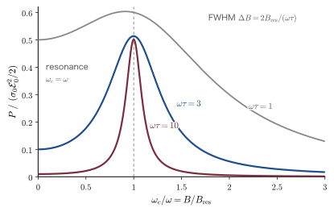
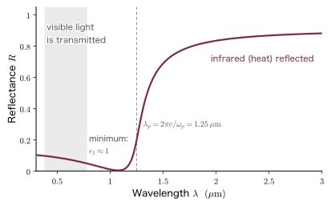
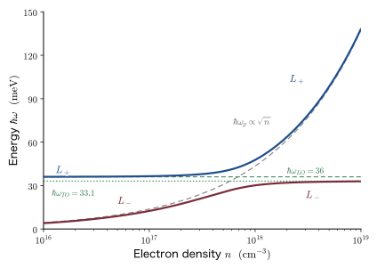
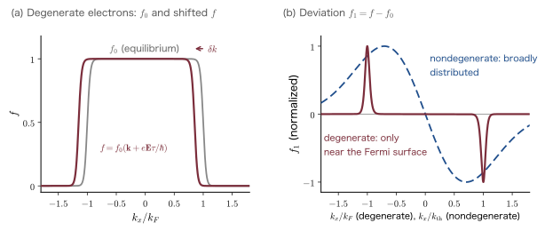
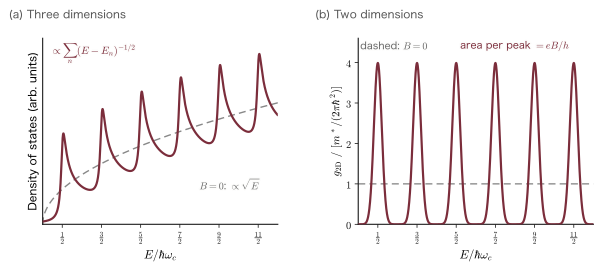
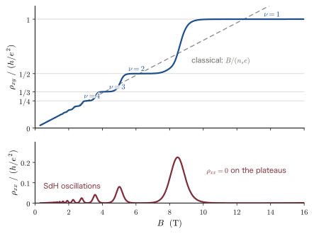

Chapter 21Electron Transport Phenomena in Solids — From Classical Theory to Landau Levels
Transistors, diodes, solar cells, LEDs, the Hall sensor inside the electronic compass of a smartphone—a semiconductor device is, at bottom, “a device that controls the flow of electrons inside a solid”. To understand any device, we must first know how to describe the flow of electrons itself. In Chapter 15 we derived Ohm's law $\jj=\sigma\EE$ from the Drude model, and in Chapter 17 we learned the semiclassical equation of motion, the effective mass, holes, and the mobility. What we treated there was the simplest situation: “under a constant electric field, a single kind of carrier is scattered with a constant relaxation time.” This chapter, the entrance to Part IV, extends the discussion from there in four directions.
The first is when an electric field and a magnetic field are present at the same time (Section 21.1). Electrons are bent sideways by the Lorentz force, a Hall voltage appears, and sometimes the resistance itself increases with the magnetic field (magnetoresistance). The dimensionless number $\omega_c\tau$ that governs everything is $0.004$ for copper at room temperature in a magnetic field of $1\,\mathrm{T}$, but it reaches $100$ for the two-dimensional electrons in low-temperature GaAs (a thin layer of electrons confined at a semiconductor interface that can move only within the plane along the interface; they work inside the high-speed transistor HEMT; treated in detail in Chapter 24, Section 24.7). The second is the alternating-current case (Sections 21.2 and 21.3). When microwaves are applied, strong absorption occurs only at the frequency at which the electrons circle in the magnetic field (cyclotron resonance, a method for measuring the effective mass directly). From the plasma oscillation, in which all the electrons sway collectively, we learn why the transparent electrode indium tin oxide (ITO) transmits visible light and reflects infrared light, and over what distance charge is screened in a doped semiconductor (the Debye length; in the p-n junction of Chapter 24 it gives a rough estimate of the width over which the charge changes smoothly at the edge of the depletion layer).
The third is when we work with the distribution function (Sections 21.4 and 21.5). Real electrons include fast ones and slow ones. If the scattering time depends on the energy, effects that do not appear in the Drude model—the Hall factor, the transverse magnetoresistance, the dependence of the thermoelectric power on the scattering mechanism, the Nernst effect—appear. The tool that handles them is the Boltzmann equation, and the scattering processes of Chapter 22 and the hot electrons of Chapter 23 are built on this equation.
The fourth is when the motion is quantized (Sections 21.6 and 21.7). In a strong magnetic field the circular motion of electrons is quantized, and the electrons have discrete energies called Landau levels. As a result, the resistance oscillates periodically in the inverse of the magnetic field (Shubnikov–de Haas oscillations), and for two-dimensional electrons the Hall resistance is quantized with astonishing accuracy to an integer fraction of $h/e^2=25\,812.807\,\Omega$ (the quantum Hall effect). Finally, we derive the idea of the Kubo formula, which obtains the conductivity from quantum mechanics; the Landauer formula, according to which the conductance of a narrow channel is quantized in units of $2e^2/h$; and the Einstein relation, which connects diffusion and mobility. These are used immediately in Chapters 23 and 24.
The starting point consists of just two things: the Lorentz force learned in high-school physics (the force on a charge moving in a magnetic field; in high school one learns its magnitude $evB$ and Fleming's left-hand rule, which fixes its direction; in this chapter we write it with the vector cross product as $\FF=-e(\EE+\vv\times\BB)$; see the “Math Tool” in 21.1.2) and a frictional force proportional to the velocity (the same form as air resistance). From there we proceed step by step, without skipping a single line of the algebra. The mathematics we use consists of complex numbers, the vector cross product, partial differentiation and the Taylor expansion, simple integrals, two-by-two and three-by-three determinants, the Gamma function, and the Dirac $\delta$ function; at the place where each is first used, we explain it in a “Math Tool” box or give a link to Appendix A and to the companion volume.
- Solve the Drude equation in a magnetic field component by component to derive the conductivity tensor $\sigma_{xx}=\sigma_0/(1+\omega_c^2\tau^2)$ and $\sigma_{xy}$, and explain the Hall angle $\tan\theta_H=\omega_c\tau=\mu B$ and why no magnetoresistance arises for a single kind of carrier
- Show that magnetoresistance appears in the two-carrier model of electrons and holes, and explain why the magnetoresistance of a compensated semimetal does not saturate
- Derive the absorption line shape of cyclotron resonance by decomposing it into circularly polarized components, and calculate the resonance magnetic fields of Si and Ge from the formula for the cyclotron mass $m_c$ of an ellipsoidal band
- Derive the plasma frequency, the plasma reflection edge, the Debye length and the Thomas–Fermi length, and the LO phonon–plasmon coupled modes, and relate them to the properties of doped semiconductors and ITO
- Derive the Boltzmann equation from “conservation of the number of particles in phase space,” and calculate $\sigma=ne^2\langle\langle\tau\rangle\rangle/m^*$ and the Seebeck coefficient in the relaxation-time approximation
- Calculate the Hall factor $r_H$ and the coefficient of the transverse magnetoresistance from an energy-dependent $\tau$, and explain the meaning of the Corbino disk and of thermomagnetic effects
- Derive the Landau levels $E=(n+\tfrac12)\hbar\omega_c+\hbar^2k_z^2/2m^*$ completely in the Landau gauge, and find the degeneracy $eB/h$, the magnetic length $l_B$, the density of states, and the filling factor $\nu$
- Find the areal density of a two-dimensional electron gas from Shubnikov–de Haas oscillations, and explain the integer quantum Hall effect $\rho_{xy}=h/(\nu e^2)$ in terms of localized states and edge states
- Understand the idea of the Kubo formula, and derive the Drude formula and the Einstein relation $D=\mu k_BT/e$ from the current correlation function
- Derive the Landauer formula $G=(2e^2/h)\sum_n\mathcal{T}_n$ in one dimension, and explain the condition under which the Boltzmann equation can be used ($k_Fl\gg1$)
Suggested path for a first reading: If you read 21.1 → 21.2.1–21.2.4 → 21.3.1–21.3.4 → 21.4.1–21.4.6 → 21.5.1–21.5.2 → 21.6.1–21.6.8 → 21.7.1 and 21.7.4–21.7.6, you will have the framework used from Chapter 22 onward. Sections 21.2.5–21.2.6 (ellipsoidal valleys and holes), 21.3.5–21.3.6 (coupled modes and helicons), 21.4.7 (thermoelectric effects), 21.5.3–21.5.7 (magnetoresistance and thermomagnetic effects), 21.6.9–21.6.10 (edge states and the fractional quantum Hall effect), and 21.7.2–21.7.3 (the Kubo formula and quantum corrections) can be left for a second reading.
What to return to when needed—Chapter 18, Section 18.3 (orbits in a magnetic field) and Section 18.6 (the de Haas–van Alphen effect), Chapter 19, Section 19.6 (the LST relation), Chapter 20, Section 20.6 (Landau diamagnetism), the harmonic oscillator in quantum mechanics (Quantum Mechanics, Chapter 13, Section 13.3).
Mathematics—Appendix A, Section A.8 (complex numbers), Section A.5 (the Gamma function), Section A.3 (the Sommerfeld expansion), Section A.9 (the Dirac delta function).
21.1 Classical Theory of Electron Conduction in Static Electric and Magnetic Fields
21.1.1 The phenomenon: a current near a magnet bends sideways
When we pass a current through a wire and bring a magnet close to it, the wire feels a force and moves. This is Fleming's left-hand rule, which is learned in Japanese junior high and high school. The wire feels a force because each electron flowing inside it feels the Lorentz force $-e\,\vv\times\BB$. Now suppose that, instead of a wire, we pass a current through a flat plate of finite width and apply a magnetic field perpendicular to the plate. The electrons bend sideways and accumulate at one edge of the plate. A voltage then appears between the two edges. This is the Hall effect, discovered by E. H. Hall in 1879, and the voltage is called the Hall voltage (Figure 21.1).
The Hall effect is at work all around us. Small semiconductor devices that use the Hall effect (Hall elements) are found in the electronic compass of a smartphone, in sensors that read the rotational position of a motor, and in clamp meters that measure a current without touching the wire. The Hall voltage is inversely proportional to the carrier density, so the fewer carriers a semiconductor has, the larger the voltage it gives (Example 21.1).
In Chapter 15 we derived the Hall coefficient $R_H=-1/(ne)$, and in Chapter 17 we extended it to the case in which electrons and holes coexist. In this section we solve completely how the current flows for arbitrary electric and magnetic fields and summarize the result in a 3×3 table called the “conductivity tensor.” From it we can read off the Hall angle, whether magnetoresistance appears, and the behavior in a strong field.
Notation: Symbols used in Part IV (those needed in this chapter)
- The elementary charge is $e\gt0$; we write the charge of the electron as $-e$ and the charge of the hole as $+e$ (the same as in Chapters 15–17).
- Energy is written $E$ ($E_c$, $E_v$, $E_F$, $E(\kk)$). The $\epsilon_\kk$ of Chapters 16–18 is written $E(\kk)$ in this part. The chemical potential (Fermi level) is written $E_F$, and the symbol $\mu$ is used only for the mobility. The chemical potential $\mu$ of Chapters 15 and 17 is the $E_F$ of this chapter. A chemical potential that differs from place to place is written with subscripts, such as $E_{F,L}$ and $E_{F,R}$ (the left and right electrodes, Section 21.7.4) and $E_{F,1}$ and $E_{F,2}$ (the upper and lower edges of the sample, Section 21.6.9).
- The electric field as a vector is written $\EE$, and its magnitude and components are written $\mathcal{E}$ (script E), $\mathcal{E}_x,\mathcal{E}_y$, to distinguish them from the energy $E$. The magnetic flux density is $\BB$, and its magnitude is $B$ (unit: T, tesla).
- The effective mass is $m^*$ (the apparent mass that incorporates the effect of the periodic potential of the crystal; Chapter 17, Section 17.3), and the free-electron mass is $m$. The cyclotron angular frequency (the angular frequency with which an electron circulates in a magnetic field) is $\omega_c\equiv eB/m^*$. The cyclotron mass $m_c$ determined from the position of the resonance (Section 21.2.5) and the conductivity effective mass $m_{ce}$ that determines the mobility (Table 17.3 of Chapter 17; $0.26m$ for Si) are different quantities.
- $\mu$ is the mobility: the magnitude of the drift velocity per unit electric field, which we find in Section 21.1.3 to be $\mu=e\tau/m^*$. The subscripted $\mu_0$ (the vacuum permeability, Section 21.3.6) and $\mu_B$ (the Bohr magneton, Section 21.6.6) are quantities different from the mobility.
- $\tau$ is the momentum relaxation time (the mean time for an electron to forget its direction of motion). In Chapter 22 it is written $\tau_m$ to distinguish it from other relaxation times, but in this chapter we simply write $\tau$. The minority-carrier lifetime $\tau_n$ in Section 21.7.5 (the time until a carrier disappears by recombination) is a quantity different from $\tau$.
- The unit system is SI. For the mobility we also use the semiconductor convention $\mathrm{cm^2/(V\,s)}$, but in calculations we convert using $1\,\mathrm{cm^2/(V\,s)}=10^{-4}\,\mathrm{m^2/(V\,s)}$. $\mu B$ is a dimensionless number when $\mu$ is entered in $\mathrm{m^2/(V\,s)}$ and $B$ in T (because $1\,\mathrm{T}=1\,\mathrm{V\,s/m^2}$).
Symbols used in two ways in this chapter (which meaning is intended is determined by context):
- $\rho$: the resistivity $\rho_{xx}$, $\rho_{xy}$, $\rho_0$, and the charge density $\rho(\rr)$ of Section 21.3.4.
- $\kappa$: the extinction coefficient of Section 21.3.3 (the imaginary part of the complex refractive index), and the thermal conductivity of Sections 21.4.7 and 21.5.6.
- $f$: the distribution function $f(\rr,\kk,t)$ (Section 21.4), and the frequency $f$ of the microwaves (Section 21.2).
- $n$: the electron density, and the number of the Landau level, $n=0,1,2,\ldots$ (Section 21.6).
- $D$: the density of states $D(E)$ (Section 21.4), the electric displacement $D$ (Section 21.3.3), and the diffusion coefficient $D$ (Section 21.7.5). $S$: the Seebeck coefficient (Section 21.4.7), and the cross-sectional area $S$ in momentum space (the Supplement of Section 21.2.5, Section 21.6.7). The $S$ and $D$ in the derivation of Section 21.1.7 are abbreviations used only within that derivation.
- $\Gamma$: the Gamma function $\Gamma(s)$ (Section 21.4.6), the $\Gamma$ point at the center of the Brillouin zone (Section 21.2.5), and the width $\Gamma$ of a Landau level (Section 21.6.5).
- $\bm A$: the vector potential (Section 21.6). The area is also sometimes written $A$ (Section 21.3.2, Exercise 21.6).
In addition, $\nu$ is the filling factor of Section 21.6.7, not a frequency. The temperature is written $T$, and the transmission probability (the probability that an electron passes through a channel) is written $\mathcal{T}$ (script T; the same symbol as in Chapters 23 and 24) to distinguish it from the temperature. As is customary in physics, ac quantities are written as complex amplitudes multiplied by $\ee^{-i\omega t}$ (Section 21.2.2; the same convention as in Chapters 26 and 33).
Caution: In this chapter $\mu$ is the mobility; the chemical potential is $E_F$
Many textbooks (including Chapters 15 and 17 of this book) write the chemical potential as $\mu$. In Part IV we follow the convention of books on semiconductor devices, using $\mu$ only for the mobility and writing the chemical potential as $E_F$. When you quote a formula from another book, always check which meaning $\mu$ has there. For example, the Fermi–Dirac distribution $1/[\ee^{(E-\mu)/k_BT}+1]$ of Chapter 15 is written $1/[\ee^{(E-E_F)/k_BT}+1]$ in this chapter. Also, the Fermi energy at $T=0$ and the chemical potential at finite temperature are strictly different quantities (the difference is of order $(k_BT/E_F)^2$), but in this chapter we write both as $E_F$.
21.1.2 Setting up the equation of motion — starting from just two forces
The idea is simple. Only two kinds of forces act on an electron in a crystal.
- The force of the externally applied electric and magnetic fields: the Lorentz force $\FF=-e(\EE+\vv\times\BB)$.
- “Friction” due to scattering: electrons are scattered by phonons and impurities, and on average they forget their direction of motion once every time interval $\tau$. We represent this effect by a resistive force $-m^*\vv/\tau$ proportional to the velocity. It has the same form as the air resistance on a bicycle or the viscous resistance on a pebble sinking in water.
The force of the periodic potential produced by the lattice does not appear here, because its effect is already woven into the effective mass $m^*$ (the semiclassical equation of motion $\hbar\dot\kk=\FF$ of Chapter 17, Section 17.2 and the effective mass of Section 17.3).
Derivation: The Drude equation of motion including a magnetic field
We restate the Drude equation of motion of Chapter 15 (15.6.1). With an electric field alone it read
$$ m\frac{\dd\vv}{\dd t}+\frac{m\vv}{\tau}=-e\EE $$Since the electron is in a crystal, we replace $m$ by the effective mass $m^*$, and add to the force on the right-hand side the magnetic part of the Lorentz force, $-e\,\vv\times\BB$. This gives
The left-hand side is “mass × acceleration,” the first term on the right is the force due to the electric and magnetic fields, and the second term is the frictional force. This is the starting point for everything in this section. ∎
Let us check once more the meaning of the friction term. When the external fields are switched off ($\EE=0$, $\BB=0$), we have $m^*\dd\vv/\dd t=-m^*\vv/\tau$, and dividing both sides by $m^*$ gives $\dd\vv/\dd t=-\vv/\tau$. The solution is $\vv(t)=\vv(0)\,\ee^{-t/\tau}$. The velocity decays exponentially with time constant $\tau$. We can read $\tau$ as “the time it takes to forget the direction.”
Math Tool: Writing the cross product $\vv\times\BB$ in components
The cross product of two vectors $\bm a=(a_x,a_y,a_z)$ and $\bm b=(b_x,b_y,b_z)$ is
$$ \bm a\times\bm b=\left(a_yb_z-a_zb_y,\ \ a_zb_x-a_xb_z,\ \ a_xb_y-a_yb_x\right) $$(cycle the indices in the order $x\to y\to z\to x$). Taking the magnetic field along the $z$ direction, $\BB=(0,0,B)$, and substituting $b_x=b_y=0$, $b_z=B$, we obtain
$$ \vv\times\BB=\left(v_yB-v_z\cdot0,\ \ v_z\cdot0-v_xB,\ \ v_x\cdot0-v_y\cdot0\right)=\left(v_yB,\ -v_xB,\ 0\right) $$Since the $z$ component is zero, the Lorentz force has no effect on motion along the direction of the magnetic field. We will use this many times later.
Definition: Relaxation time $\tau$ and mobility $\mu$
- Relaxation time $\tau$: the time constant with which the average velocity of the electrons decreases as $\vv(t)=\vv(0)\,\ee^{-t/\tau}$ when the external force is switched off. It can be read as the average time for an electron to forget its direction of motion because of scattering. The $\tau$ in this chapter is the momentum relaxation time.
- Mobility $\mu$: the magnitude $v_d$ of the steady-state drift velocity when a constant electric field $\mathcal{E}$ is applied, divided by the magnitude of the electric field: $\mu\equiv v_d/\mathcal{E}$. It expresses “how many meters per second the electron is carried along in an electric field of $1\,\mathrm{V/m}$,” and its unit is $\mathrm{m^2/(V\,s)}$ (in semiconductors $\mathrm{cm^2/(V\,s)}$ is often used). From the steady-state solution of Eq. \eqref{eq:21-eom} we obtain $\mu=e\tau/m^*$ (next, in 21.1.3).
- Since the current density is $j=nev_d=ne\mu\mathcal{E}$, the conductivity in the absence of a magnetic field is $\sigma_0=ne\mu=ne^2\tau/m^*$.
21.1.3 Steady-state solution and the conductivity tensor
If we apply a DC electric field and wait for a while, the velocity settles to a constant value ($\dd\vv/\dd t=0$). We find the velocity at this point (the drift velocity) and convert it to the current density.
Derivation: Finding the components of the conductivity tensor one by one
Step 1: Split the steady-state condition into components. Setting $\dd\vv/\dd t=0$ in Eq. \eqref{eq:21-eom} gives $0=-e(\EE+\vv\times\BB)-m^*\vv/\tau$. Multiplying both sides by $\tau/m^*$ and rearranging, we obtain
$$ \vv=-\frac{e\tau}{m^*}\left(\EE+\vv\times\BB\right) $$Here we use the mobility $\mu\equiv e\tau/m^*$ (the same as the expression in Chapter 17) and the cyclotron angular frequency $\omega_c\equiv eB/m^*$. Note that $\mu B=\dfrac{e\tau}{m^*}B=\dfrac{eB}{m^*}\tau=\omega_c\tau$. Substituting $\vv\times\BB=(v_yB,-v_xB,0)$ found above and writing out each component, we get
$$ v_x=-\mu\mathcal{E}_x-\mu Bv_y=-\mu\mathcal{E}_x-\omega_c\tau\,v_y \qquad\text{(i)} $$ $$ v_y=-\mu\mathcal{E}_y+\mu Bv_x=-\mu\mathcal{E}_y+\omega_c\tau\,v_x \qquad\text{(ii)} $$ $$ v_z=-\mu\mathcal{E}_z \qquad\text{(iii)} $$Equation (iii) is exactly the same as in the absence of a magnetic field. Equations (i) and (ii) form simultaneous linear equations for $v_x$ and $v_y$.
Step 2: Solve the simultaneous equations. Substitute (ii) for $v_y$ on the right-hand side of (i):
$$ v_x=-\mu\mathcal{E}_x-\omega_c\tau\left(-\mu\mathcal{E}_y+\omega_c\tau\,v_x\right) =-\mu\mathcal{E}_x+\omega_c\tau\,\mu\mathcal{E}_y-(\omega_c\tau)^2v_x $$Moving $-(\omega_c\tau)^2v_x$ from the right-hand side to the left-hand side, we obtain
$$ \left[1+(\omega_c\tau)^2\right]v_x=-\mu\left(\mathcal{E}_x-\omega_c\tau\,\mathcal{E}_y\right) \quad\Longrightarrow\quad v_x=-\frac{\mu\left(\mathcal{E}_x-\omega_c\tau\,\mathcal{E}_y\right)}{1+\omega_c^2\tau^2} $$Substituting this back into (ii) gives
$$ v_y=-\mu\mathcal{E}_y-\frac{\omega_c\tau\,\mu\left(\mathcal{E}_x-\omega_c\tau\,\mathcal{E}_y\right)}{1+\omega_c^2\tau^2} =-\mu\,\frac{\mathcal{E}_y\left(1+\omega_c^2\tau^2\right)+\omega_c\tau\,\mathcal{E}_x-\omega_c^2\tau^2\mathcal{E}_y}{1+\omega_c^2\tau^2} =-\frac{\mu\left(\mathcal{E}_y+\omega_c\tau\,\mathcal{E}_x\right)}{1+\omega_c^2\tau^2} $$(The $\omega_c^2\tau^2\mathcal{E}_y$ terms in the numerator cancel each other.)
Step 3: Convert to the current density. The current density of the electrons is $\jj=(-e)n\vv$. Using $ne\mu=ne^2\tau/m^*\equiv\sigma_0$ (the conductivity in the absence of a magnetic field), we obtain
$$ j_x=-ne\,v_x=\frac{\sigma_0}{1+\omega_c^2\tau^2}\,\mathcal{E}_x-\frac{\sigma_0\,\omega_c\tau}{1+\omega_c^2\tau^2}\,\mathcal{E}_y $$ $$ j_y=-ne\,v_y=\frac{\sigma_0\,\omega_c\tau}{1+\omega_c^2\tau^2}\,\mathcal{E}_x+\frac{\sigma_0}{1+\omega_c^2\tau^2}\,\mathcal{E}_y $$ $$ j_z=-ne\,v_z=\sigma_0\,\mathcal{E}_z $$Step 4: Summarize in a table. When we write $j_i=\sum_j\sigma_{ij}\mathcal{E}_j$, the array of the coefficients $\sigma_{ij}$ is called the conductivity tensor. ∎
Theorem 21.1: Conductivity tensor in a magnetic field (one type of carrier, $\BB=B\hat z$)
In the double signs, the upper sign is for electrons and the lower sign is for holes. That is,
$$ \sigma_{xx}=\sigma_{yy}=\frac{\sigma_0}{1+\omega_c^2\tau^2},\qquad \sigma_{xy}=-\sigma_{yx}=\mp\frac{\sigma_0\,\omega_c\tau}{1+\omega_c^2\tau^2},\qquad \sigma_{zz}=\sigma_0 $$In terms of magnitude, $\abs{\sigma_{xy}}=\sigma_0\omega_c\tau/(1+\omega_c^2\tau^2)$, and the sign indicates the sign of the carrier charge.
For holes, it suffices to carry out the same calculation after replacing $-e$ in Eq. \eqref{eq:21-eom} by $+e$ and $m^*$ by the effective mass of the holes (as we saw in Chapter 17, a hole behaves as a particle with charge $+e$ and positive mass). Every $-\mu$ in Step 1 becomes $+\mu$, and the sign of the $\vv\times\BB$ term also changes, so $\sigma_{xx}$ is unchanged and only $\sigma_{xy}$ changes sign.
Physical Meaning: In a strong magnetic field the current seems to “flow with difficulty”
The quantity $\sigma_{xx}=\sigma_0/(1+\omega_c^2\tau^2)$ in Eq. \eqref{eq:21-sigma-tensor} approaches zero like $\sigma_0/(\omega_c\tau)^2$ for $\omega_c\tau\gg1$. Even if we apply an electric field in the $x$ direction, almost no current flows in the $x$ direction. The electrons are pushed by the electric field and start to move, but they are immediately bent by the magnetic field and go around many times before they are scattered. Instead, $\sigma_{yx}$ approaches $\pm\sigma_0/(\omega_c\tau)=\pm ne/B$ (the upper sign is for electrons). In a strong magnetic field the current flows perpendicular to the electric field.
Neither $\tau$ nor $m^*$ appears in this $\abs{\sigma_{yx}}\to ne/B$. The quantum Hall effect of Section 21.6 is the phenomenon in which the magnitude of this quantity is quantized to integer multiples of $e^2/h$.
21.1.4 Resistivity tensor, Hall field, and Hall angle
What is usually measured in experiments is the resistivity. We pass a current $\jj$ through the sample and measure the resulting electric field $\EE$ as a voltage. That is, we are measuring the coefficients $\rho_{ij}$ (the resistivity tensor) in $\EE=\rho\,\jj$. The tensor $\rho$ is the inverse matrix of $\sigma$. The $xy$ part is 2×2, so the following tool lets us find the inverse matrix easily.
Math Tool: A matrix of the form $\begin{pmatrix}a&b\\-b&a\end{pmatrix}$ is equivalent to the complex number $a+ib$
Consider the matrix $M=\begin{pmatrix}a&b\\-b&a\end{pmatrix}$. Substituting $p=s=a$, $q=b$, $r=-b$ into the formula for the inverse of a 2×2 matrix, $\begin{pmatrix}p&q\\r&s\end{pmatrix}^{-1}=\dfrac{1}{ps-qr}\begin{pmatrix}s&-q\\-r&p\end{pmatrix}$, and noting that $ps-qr=a^2+b^2$, we obtain
$$ M^{-1}=\frac{1}{a^2+b^2}\begin{pmatrix}a&-b\\ b&a\end{pmatrix} $$On the other hand, the reciprocal of the complex number $z=a+ib$ is, after multiplying the denominator and numerator by $a-ib$, $\dfrac{1}{z}=\dfrac{a-ib}{a^2+b^2}$. Its real part is $a/(a^2+b^2)$ and its imaginary part is $-b/(a^2+b^2)$, which coincide with the (1,1) and (1,2) components of $M^{-1}$, respectively. Sums and products correspond in the same way, so a matrix of this form may be treated as the complex number “(1,1) component + $i$ × (1,2) component”.
Definition: Hall configuration, Hall coefficient, and Hall angle
The arrangement in which a current density $j_x$ flows in the $x$ direction, a magnetic field $B$ is applied in the $z$ direction, and no current flows in the $y$ direction ($j_y=0$) is called the Hall configuration (Figure 21.1). Using the transverse electric field $\mathcal{E}_y$ (the Hall field) that arises in this case, we define
$$ R_H\equiv\frac{\mathcal{E}_y}{j_xB}\quad(\text{Hall coefficient}),\qquad \tan\theta_H\equiv\frac{\abs{\mathcal{E}_y}}{\mathcal{E}_x}\quad(\text{Hall angle }\theta_H) $$The Hall angle is the angle by which the electric field $\EE$ inside the sample is tilted away from the direction of the current $\jj$ (Figure 21.1(b)).
Derivation: The resistivity tensor and the Hall coefficient
Step 1: Combine into a complex number. For electrons, the $xy$ part of Theorem 21.1 is of the form with $a=\sigma_{xx}=\sigma_0/(1+\omega_c^2\tau^2)$ and $b=\sigma_{xy}=-\sigma_0\omega_c\tau/(1+\omega_c^2\tau^2)$. The corresponding complex number is
$$ Z=\sigma_{xx}+i\sigma_{xy}=\frac{\sigma_0\left(1-i\omega_c\tau\right)}{1+\omega_c^2\tau^2} =\frac{\sigma_0\left(1-i\omega_c\tau\right)}{\left(1-i\omega_c\tau\right)\left(1+i\omega_c\tau\right)} =\frac{\sigma_0}{1+i\omega_c\tau} $$(We cancelled the common factor using $1+\omega_c^2\tau^2=(1-i\omega_c\tau)(1+i\omega_c\tau)$.)
Step 2: Take the reciprocal.
$$ \frac{1}{Z}=\frac{1+i\omega_c\tau}{\sigma_0}=\frac{1}{\sigma_0}+i\,\frac{\omega_c\tau}{\sigma_0} $$The real part is $\rho_{xx}$ and the imaginary part is $\rho_{xy}$. Since $\omega_c\tau/\sigma_0=\dfrac{eB\tau}{m^*}\cdot\dfrac{m^*}{ne^2\tau}=\dfrac{B}{ne}$, we have
Step 3: The Hall configuration. As in Figure 21.1, a current flows in the $x$ direction and none flows in the $y$ direction ($j_y=0$). From $\EE=\rho\,\jj$ we have $\mathcal{E}_x=\rho_{xx}j_x$ and $\mathcal{E}_y=\rho_{yx}j_x=-\dfrac{B}{ne}j_x$. Substituting into the definition of the Hall coefficient, $R_H\equiv\mathcal{E}_y/(j_xB)$, we obtain
$$ R_H=\frac{\rho_{yx}}{B}=-\frac{1}{ne} $$We have thus confirmed that the result of Chapter 15 (Section 15.7) holds for a magnetic field of arbitrary strength. ∎
As in Figure 21.1(b), in the Hall configuration the electric field $\EE$ is tilted away from the current $\jj$ (the $x$ direction). The angle of this tilt is the Hall angle $\theta_H$ defined above.
Derivation: The Hall angle $\tan\theta_H=\omega_c\tau=\mu B$
From the results above, $\mathcal{E}_x=j_x/\sigma_0$ and $\abs{\mathcal{E}_y}=Bj_x/(ne)$. Taking the ratio, $j_x$ cancels, and we obtain
$$ \tan\theta_H=\frac{\abs{\mathcal{E}_y}}{\mathcal{E}_x}=\frac{Bj_x/(ne)}{j_x/\sigma_0}=\frac{\sigma_0B}{ne}=\frac{ne\mu B}{ne}=\mu B $$Since $\mu B=\omega_c\tau$,
∎ The Hall angle is determined by the product of the mobility and the magnetic field alone. It depends neither on the shape of the sample nor on the carrier density.
Caution: $\rho_{xy}\ne1/\sigma_{xy}$ — the inverse of a tensor is not the componentwise reciprocal
The resistivity tensor is the inverse matrix of the conductivity tensor, not the componentwise reciprocal. For one type of carrier, $\rho_{xx}=1/\sigma_0$, but $1/\sigma_{xx}=(1+\omega_c^2\tau^2)/\sigma_0$ grows with the magnetic field, and the two agree only at $B=0$. Moreover, setting $\sigma_{xx}=0$ in the Math Tool above gives $\rho_{xx}+i\rho_{xy}=1/(i\sigma_{xy})=-i/\sigma_{xy}$, so that $\rho_{xx}=0$ and $\rho_{xy}=-1/\sigma_{xy}$ ($\rho_{yx}=+1/\sigma_{xy}$). This is why the resistivity $\rho_{xx}$ can also become zero when the conductivity $\sigma_{xx}$ is zero, and this property plays the leading role in the quantum Hall effect of 21.6.8.
21.1.5 Why no magnetoresistance appears for a single type of carrier
The phenomenon in which the resistance changes when a magnetic field is applied is called magnetoresistance. Equation \eqref{eq:21-rho-tensor} says that in the Drude model with only one type of carrier, $\rho_{xx}$ does not depend on the magnetic field, that is, the magnetoresistance is zero. In 21.1.3, $\sigma_{xx}$ decreased with the magnetic field, yet $\rho_{xx}$ does not change. Is this not a contradiction?
Why? Because the Hall field cancels the Lorentz force on “every” electron
In the steady state of the Hall configuration, the transverse forces balance: the force in the $y$ direction on a single electron is
$$ F_y=-e\mathcal{E}_y-e\left(\vv\times\BB\right)_y=-e\mathcal{E}_y+ev_xB=0 $$that is, $\mathcal{E}_y=v_xB$. In the Drude model, all electrons have the same drift velocity $v_x$, so this balance holds simultaneously for each individual electron. Then the transverse force on any electron is zero on net, and the electron moves straight along the $x$ direction exactly as it does without a magnetic field. This is why the resistance in the $x$ direction does not change.
The decrease of $\sigma_{xx}$ refers to a different condition, $\mathcal{E}_y=0$ (no transverse electric field). If the side faces are short-circuited so that no Hall field builds up, the electrons keep moving along curved paths, and it is indeed harder for current to flow (the Corbino disk in Section 21.5).
Conversely, if electrons with different speeds are mixed together, the Hall field can cancel only the Lorentz force on the average electron. Fast electrons are bent too much, and slow electrons are pushed back too much by the Hall field; both travel obliquely, and the efficiency of motion in the $x$ direction drops. This is the origin of magnetoresistance. “Electrons with different speeds” appear when electrons and holes of two kinds are mixed (21.1.7), and also, even with a single kind of carrier, when there is an energy distribution and $\tau$ depends on the energy (Section 21.5).
21.1.6 A feel for the numerical value of $\omega_c\tau$
The form of the conductivity tensor is determined by just one quantity, $\omega_c\tau=\mu B$. The case $\omega_c\tau\ll1$ is called the weak-field regime, and $\omega_c\tau\gg1$ the strong-field regime. Whether a field is “strong” is not determined by the magnitude of the magnetic field alone but by its product with the mobility. Representative values are collected in Table 21.1.
| Material and conditions | $\mu$ ($\mathrm{cm^2/(V\,s)}$) | $\mu$ ($\mathrm{m^2/(V\,s)}$) | $\omega_c\tau$ (1 T) | Hall angle |
|---|---|---|---|---|
| Cu (room temperature) | $43$ | $4.3\times10^{-3}$ | $0.004$ | $0.25^\circ$ |
| n-type Si (room temperature, lightly doped) | $1400$ | $0.14$ | $0.14$ | $8^\circ$ |
| n-type GaAs (room temperature, lightly doped) | $8500$ | $0.85$ | $0.85$ | $40^\circ$ |
| n-type InSb (room temperature) | $7.7\times10^{4}$ | $7.7$ | $7.7$ | $83^\circ$ |
| Two-dimensional electron gas in GaAs/AlGaAs (very low temperatures) | $10^{6}$–$10^{7}$ | $10^{2}$–$10^{3}$ | $10^{2}$–$10^{3}$ | nearly $90^\circ$ |
(On the mobility of Si: in Table 17.10 of Chapter 17 we used $1350$ for electrons and $480\,\mathrm{cm^2/(V\,s)}$ for holes. Depending on the literature, the electron mobility varies over a range of roughly $1350$–$1500\,\mathrm{cm^2/(V\,s)}$, and in the examples of this chapter we use $1400$ for electrons and $450\,\mathrm{cm^2/(V\,s)}$ for holes.)
As Table 21.1 shows, InSb and GaAs are used in Hall elements because their mobilities are large and their Hall angles are large (the sensitivity is high). In metallic copper, on the other hand, $\omega_c\tau$ is only $0.004$ at room temperature, and a magnetic field can hardly bend the current.
Example 21.1: The Hall coefficient and $\omega_c\tau$ of copper
The conduction electron density of Cu is $n=8.47\times10^{28}\,\mathrm{m^{-3}}$, and its resistivity at room temperature is $\rho=1.70\times10^{-8}\,\Omega\,\mathrm{m}$. Using the free electron model ($m^*=m$), find (1) the Hall coefficient $R_H$, (2) the relaxation time $\tau$, (3) $\omega_c\tau$ and the Hall angle at $B=1\,\mathrm{T}$, and (4) the Hall voltage when a current $I=1\,\mathrm{A}$ flows through a copper foil of width $w=1\,\mathrm{cm}$ and thickness $t=0.1\,\mathrm{mm}$ and $B=1\,\mathrm{T}$ is applied perpendicular to the plane of the foil.
Solution. (1) Insert the numbers into the result $R_H=-1/(ne)$ of Eq. \eqref{eq:21-rho-tensor}:
$$ R_H=-\frac{1}{(8.47\times10^{28})(1.602\times10^{-19})}=-\frac{1}{1.357\times10^{10}}=-7.37\times10^{-11}\ \mathrm{m^3/C} $$(The measured value in Table 15.5 of Chapter 15 is $-5.5\times10^{-11}\,\mathrm{m^3/C}$. The difference arises because the Fermi surface deviates from a sphere.)
(2) Solving $\sigma_0=ne^2\tau/m$ for $\tau$ gives $\tau=m/(ne^2\rho)$. The denominator is
$$ \begin{aligned} ne^2\rho&=(8.47\times10^{28})(1.602\times10^{-19})^2(1.70\times10^{-8})\\ &=(8.47\times10^{28})(2.566\times10^{-38})(1.70\times10^{-8})=3.695\times10^{-17} \end{aligned} $$so that
$$ \tau=\frac{9.109\times10^{-31}}{3.695\times10^{-17}}=2.47\times10^{-14}\ \mathrm{s} $$(3) The cyclotron angular frequency of a free electron is
$$ \omega_c=\frac{eB}{m}=\frac{(1.602\times10^{-19})(1)}{9.109\times10^{-31}}=1.759\times10^{11}\ \mathrm{s^{-1}} $$Hence
$$ \omega_c\tau=(1.759\times10^{11})(2.47\times10^{-14})=4.3\times10^{-3} $$ $$ \theta_H=\arctan(4.3\times10^{-3})=4.3\times10^{-3}\ \mathrm{rad}=0.25^\circ $$(4) The Hall voltage is $V_H=\abs{\mathcal{E}_y}w=\abs{R_H}j_xBw$. Since the current density is $j_x=I/(wt)$, we have $V_H=\abs{R_H}IB/t$ (the width $w$ drops out):
$$ V_H=\frac{(7.37\times10^{-11})(1)(1)}{1\times10^{-4}}=7.4\times10^{-7}\ \mathrm{V}=0.74\ \mu\mathrm{V} $$∎ Even in a magnetic field as large as 1 T, the Hall voltage of a metal does not even reach 1 μV. This is because the carrier density, $10^{29}\,\mathrm{m^{-3}}$, is far too large. If we use a semiconductor with a carrier density smaller by a factor of $10^{6}$, the Hall voltage becomes $10^{6}$ times larger. This is why Hall elements are made of semiconductors.
Example 21.2: $\omega_c\tau$ of a two-dimensional electron gas in high-mobility GaAs
Two-dimensional electrons formed at the interface of a GaAs/AlGaAs heterojunction (areal density $n_s=3\times10^{11}\,\mathrm{cm^{-2}}$, $m^*=0.067m$) show a mobility $\mu=1\times10^{6}\,\mathrm{cm^2/(V\,s)}$ at very low temperatures. Find (1) $\omega_c\tau$ and the Hall angle at $B=1\,\mathrm{T}$, (2) the relaxation time $\tau$, (3) the mean free path $l=v_F\tau$, and (4) $\sigma_{xx}/\sigma_0$. The two-dimensional Fermi wavenumber is $k_F=\sqrt{2\pi n_s}$ (twofold spin degeneracy).
Solution. (1) Convert the units: $\mu=1\times10^{6}\times10^{-4}=100\ \mathrm{m^2/(V\,s)}$. By Eq. \eqref{eq:21-hall-angle},
$$ \omega_c\tau=\mu B=100\times1=100,\qquad \theta_H=\arctan100=89.43^\circ $$(2) From $\mu=e\tau/m^*$,
$$ \tau=\frac{\mu m^*}{e}=\frac{100\times(0.067\times9.109\times10^{-31})}{1.602\times10^{-19}}=\frac{100\times6.103\times10^{-32}}{1.602\times10^{-19}}=3.81\times10^{-11}\ \mathrm{s}=38\ \mathrm{ps} $$(3) Since $n_s=3\times10^{11}\,\mathrm{cm^{-2}}=3\times10^{15}\,\mathrm{m^{-2}}$,
$$ k_F=\sqrt{2\pi\times3\times10^{15}}=\sqrt{1.885\times10^{16}}=1.373\times10^{8}\ \mathrm{m^{-1}} $$The Fermi velocity is
$$ v_F=\frac{\hbar k_F}{m^*}=\frac{(1.0546\times10^{-34})(1.373\times10^{8})}{6.103\times10^{-32}}=2.37\times10^{5}\ \mathrm{m/s} $$ $$ l=v_F\tau=(2.37\times10^{5})(3.81\times10^{-11})=9.0\times10^{-6}\ \mathrm{m}=9\ \mu\mathrm{m} $$(4) By Theorem 21.1,
$$ \frac{\sigma_{xx}}{\sigma_0}=\frac{1}{1+\omega_c^2\tau^2}=\frac{1}{1+10^4}=1.0\times10^{-4} $$∎ An electron goes around $\omega_c\tau/(2\pi)\approx16$ times before it is scattered. The mean free path of $9\,\mu\mathrm{m}$ is about one-tenth of the thickness of a human hair and more than ten thousand times the interatomic spacing. It is precisely in such a “clean” two-dimensional electron gas that the quantum Hall effect of Section 21.6 is clearly seen. High-electron-mobility transistors (HEMTs) also use this two-dimensional electron gas.
21.1.7 Two kinds of carriers and the appearance of magnetoresistance
In semiconductors, electrons and holes may coexist (in the intrinsic region, in semimetals, and under optical excitation). In Chapter 17 we found the Hall coefficient in the weak-field limit. We restate that result here (17.9.1):
$$ R_H=\frac{1}{e}\,\frac{p\,\mu_h^{2}-n\,\mu_e^{2}}{\left(n\mu_e+p\mu_h\right)^{2}}\qquad(\omega_c\tau\ll1) $$Here we solve the problem without restricting the strength of the magnetic field and show that magnetoresistance appears. The idea is only this: “electrons and holes are two parallel paths flowing in the same electric field, and their conductivities add.”
Derivation: Magnetoresistance in the two-carrier model
Step 1: Represent each carrier by a complex number. Write the conductivity of electrons as $\sigma_e=ne\mu_e$ and that of holes as $\sigma_h=pe\mu_h$, and let $\beta_e\equiv\mu_eB$ and $\beta_h\equiv\mu_hB$. By Theorem 21.1 and the Math Tool above, for electrons we have $Z_e=\sigma_e/(1+i\beta_e)$ (the same as Step 1 of 21.1.4). For holes the sign of $\sigma_{xy}$ is reversed, so $Z_h=\sigma_h/(1-i\beta_h)$ (indeed, the imaginary part of $\dfrac{\sigma_h}{1-i\beta_h}=\dfrac{\sigma_h(1+i\beta_h)}{1+\beta_h^2}$ is $+\sigma_h\beta_h/(1+\beta_h^2)$).
Step 2: Add and put over a common denominator. Because the carriers flow in parallel in the same electric field, the conductivity tensors add, and so do the complex numbers:
$$ Z=\frac{\sigma_e}{1+i\beta_e}+\frac{\sigma_h}{1-i\beta_h} =\frac{\sigma_e\left(1-i\beta_h\right)+\sigma_h\left(1+i\beta_e\right)}{\left(1+i\beta_e\right)\left(1-i\beta_h\right)} =\frac{S+iD}{\left(1+i\beta_e\right)\left(1-i\beta_h\right)} $$Here we split the numerator into its real and imaginary parts and let $S\equiv\sigma_e+\sigma_h$ and $D\equiv\sigma_h\beta_e-\sigma_e\beta_h$.
Step 3: Take the reciprocal.
$$ \frac{1}{Z}=\frac{\left(1+i\beta_e\right)\left(1-i\beta_h\right)}{S+iD} =\frac{\left(1+i\beta_e\right)\left(1-i\beta_h\right)\left(S-iD\right)}{S^2+D^2} $$Expanding the first half of the numerator gives
$$ (1+i\beta_e)(1-i\beta_h)=1-i\beta_h+i\beta_e+\beta_e\beta_h=(1+\beta_e\beta_h)+i(\beta_e-\beta_h) $$The real part of this multiplied by $(S-iD)$ is $(1+\beta_e\beta_h)S+(\beta_e-\beta_h)D$ (note that $i\times(-i)=1$). Therefore
$$ \rho_{xx}=\mathrm{Re}\,\frac{1}{Z}=\frac{(1+\beta_e\beta_h)S+(\beta_e-\beta_h)D}{S^2+D^2} $$Step 4: Simplify the numerator. Substitute back $S$ and $D$ and expand:
$$ (1+\beta_e\beta_h)(\sigma_e+\sigma_h)+(\beta_e-\beta_h)(\sigma_h\beta_e-\sigma_e\beta_h) $$ $$ =S+\sigma_e\beta_e\beta_h+\sigma_h\beta_e\beta_h+\sigma_h\beta_e^2-\sigma_e\beta_e\beta_h-\sigma_h\beta_e\beta_h+\sigma_e\beta_h^2 =S+\sigma_h\beta_e^2+\sigma_e\beta_h^2 $$Step 5: Form the magnetoresistance ratio. At $B=0$ we have $\beta_e=\beta_h=D=0$, so $\rho_0=S/S^2=1/S$. Hence
$$ \frac{\Delta\rho}{\rho_0}\equiv\frac{\rho_{xx}(B)-\rho_0}{\rho_0}=S\rho_{xx}-1 =\frac{S^2+S\left(\sigma_h\beta_e^2+\sigma_e\beta_h^2\right)-S^2-D^2}{S^2+D^2} =\frac{S\left(\sigma_h\beta_e^2+\sigma_e\beta_h^2\right)-D^2}{S^2+D^2} $$Expand the numerator:
$$ (\sigma_e+\sigma_h)(\sigma_h\beta_e^2+\sigma_e\beta_h^2)-(\sigma_h\beta_e-\sigma_e\beta_h)^2 $$ $$ =\sigma_e\sigma_h\beta_e^2+\sigma_e^2\beta_h^2+\sigma_h^2\beta_e^2+\sigma_e\sigma_h\beta_h^2-\sigma_h^2\beta_e^2+2\sigma_e\sigma_h\beta_e\beta_h-\sigma_e^2\beta_h^2 =\sigma_e\sigma_h\left(\beta_e+\beta_h\right)^2 $$Substituting back $\beta=\mu B$, we obtain
∎ The numerator is positive, so whenever there are two kinds of carriers, the resistance necessarily increases (positive magnetoresistance). If one of them is absent ($\sigma_e=0$ or $\sigma_h=0$), the numerator vanishes and we return to the conclusion of 21.1.5.
Physical Meaning: Saturating and nonsaturating magnetoresistance
(1) Weak field. Neglecting the $B^2$ term in the denominator gives
$$ \frac{\Delta\rho}{\rho_0}\simeq\frac{\sigma_e\sigma_h(\mu_e+\mu_h)^2B^2}{(\sigma_e+\sigma_h)^2}\propto B^2 $$(2) Strong field with $n\ne p$. Both the numerator and the denominator are proportional to $B^2$, so the ratio saturates at the constant value $\sigma_e\sigma_h(\mu_e+\mu_h)^2/(\sigma_h\mu_e-\sigma_e\mu_h)^2$.
(3) Equal numbers of electrons and holes ($n=p$, compensation). In this case
$$ \sigma_h\mu_e-\sigma_e\mu_h=pe\mu_h\mu_e-ne\mu_e\mu_h=(p-n)e\mu_e\mu_h=0 $$so the $B^2$ term in the denominator vanishes, and
$$ \frac{\Delta\rho}{\rho_0}=\frac{(ne\mu_e)(ne\mu_h)(\mu_e+\mu_h)^2B^2}{n^2e^2(\mu_e+\mu_h)^2}=\mu_e\mu_hB^2 $$that is, it keeps increasing as $B^2$ without bound. Why? Electrons move in the $-x$ direction and holes in the $+x$ direction, but their charges also have opposite signs, so the Lorentz force on both points toward the same edge (the lower edge in Figure 21.1). The Hall field, on the other hand, pushes electrons and holes in opposite directions. Therefore a single Hall field cannot cancel the transverse forces on both electrons and holes at the same time. Moreover, for $n=p$ almost equal numbers of electrons and holes gather at the same edge and their charges cancel, so the Hall field itself does not become large either. In fact, the Hall coefficient $R_H=(\mu_h-\mu_e)/[(\mu_h+\mu_e)ne]$ is a constant independent of the magnetic field (and not zero; see Exercise 21.1), the Hall field increases only in proportion to $B$, and it remains small compared with the longitudinal electric field, which increases as $B^2$ (the Hall angle satisfies $\abs{\tan\theta_H}=\abs{\mu_h-\mu_e}B/(1+\mu_e\mu_hB^2)\to0$). Thus both electrons and holes keep moving obliquely, bent sideways, and the efficiency of motion in the $x$ direction continues to fall as the magnetic field increases. This is why large magnetoresistance is observed in semimetals with almost equal numbers of electrons and holes (Bi, graphite, and so on).
Figure 21.2 compares the three cases. The magnetic-field dependence of the Hall coefficient (Exercise 21.1) is also shown.
![Magnetoresistance and the magnetic-field dependence of the Hall coefficient in the two-carrier model. (a) The magnetoresistance ratio is zero for a single kind of carrier, saturates at 2 in a strong field when the holes are one-quarter as numerous as the electrons, and keeps increasing as the square of B when their numbers are equal. (b) The Hall coefficient changes from the weak-field value −0.74 to the strong-field value −4/3 when the numbers differ, and is constant at −1/3 when they are equal. The unit is 1/(ne)](figs/ch21_fig21-2.svg)
Caution: The Hall coefficient does not vanish even when $n=p$
It is a mistake to think that “if electrons and holes are equally numerous, the Hall voltages cancel and vanish.” What determines the Hall coefficient is not the numbers alone but the product of the number and the square of the mobility. In a weak field, $R_H=\frac1e(p\mu_h^2-n\mu_e^2)/(n\mu_e+p\mu_h)^2$, and $R_H=0$ holds when $p\mu_h^2=n\mu_e^2$, not when $n=p$. If $n=p$, then $R_H=(\mu_h-\mu_e)/[(\mu_h+\mu_e)ne]$, which shows the sign of the carrier with the larger mobility (for InSb in Example 21.3, the value is almost that of the electrons alone). Moreover, the high-field-limit formula $R_H\to1/[(p-n)e]$ (Exercise 21.1) holds only for $n\ne p$; for $n=p$, $R_H$ stays at the constant value above in any magnetic field.
Example 21.3: Magnetoresistance of intrinsic InSb
In intrinsic InSb at room temperature, $n=p=n_i$ (approximately $2\times10^{16}\,\mathrm{cm^{-3}}$), the electron mobility is $\mu_e=7.7\times10^{4}\,\mathrm{cm^2/(V\,s)}$, and the hole mobility is $\mu_h=850\,\mathrm{cm^2/(V\,s)}$. Find (1) $\Delta\rho/\rho_0$ at $B=0.1\,\mathrm{T}$ and $1\,\mathrm{T}$, and (2) the weak-field Hall coefficient in units of $1/(n_ie)$.
Solution. Convert the units: $\mu_e=7.7\ \mathrm{m^2/(V\,s)}$, $\mu_h=0.085\ \mathrm{m^2/(V\,s)}$.
(1) Since $n=p$, by (3) above $\Delta\rho/\rho_0=\mu_e\mu_hB^2$ holds exactly, regardless of the strength of the magnetic field:
$$ \begin{aligned} B=0.1\,\mathrm{T}&:\quad \frac{\Delta\rho}{\rho_0}=7.7\times0.085\times(0.1)^2=6.5\times10^{-3}\ \ (0.65\,\%)\\ B=1\,\mathrm{T}&:\quad \frac{\Delta\rho}{\rho_0}=7.7\times0.085\times1^2=0.65\ \ (65\,\%) \end{aligned} $$(2) Setting $n=p=n_i$ in the formula of Chapter 17 gives $R_H=\dfrac{1}{n_ie}\cdot\dfrac{\mu_h^2-\mu_e^2}{(\mu_e+\mu_h)^2}=\dfrac{1}{n_ie}\cdot\dfrac{\mu_h-\mu_e}{\mu_h+\mu_e}$. Numerically,
$$ \frac{\mu_h-\mu_e}{\mu_h+\mu_e}=\frac{0.085-7.7}{0.085+7.7}=\frac{-7.615}{7.785}=-0.978 $$∎ Even though holes and electrons are equally numerous, the Hall coefficient is almost the value $-1/(n_ie)$ of the electrons alone. This is because the electron mobility is 90 times larger, and it is almost only the electrons that are bent by the magnetic field. On the other hand, the magnetoresistance is determined by the product $\mu_e\mu_h$, so the holes, despite their small mobility, also contribute.
21.2 Cyclotron Resonance
21.2.1 The phenomenon: microwaves are absorbed only at a particular magnetic field
A swing goes high only when we push it in time with its period of oscillation. This is resonance. An electron in a magnetic field also has a “natural period.” As we saw in Example 17.6 of Chapter 17, an electron in a magnetic field $B$ moves in a circle with angular frequency
$$ \omega_c=\frac{eB}{m^*} $$This angular frequency depends neither on the radius of the circle nor on the speed of the electron (the same property as the isochronism of the pendulum). Therefore, when we apply an electric field oscillating at the same angular frequency, all the electrons are accelerated in step and strongly absorb the energy of the electric field. This is cyclotron resonance.
The experimental arrangement is simple. Between the two poles of an electromagnet we place a cavity (a metal box that confines microwaves and thereby strengthens their electric field), and put the sample inside it. The microwaves are fed in through a waveguide (a metal tube that carries microwaves), and a detector measures the intensity of the microwaves that pass through the cavity (or are reflected from it). When the sample absorbs, the detected microwave intensity decreases, so the magnitude of the absorption can be read off. While keeping the frequency constant (for example, $24\,\mathrm{GHz}$), we slowly vary the magnetic field of the electromagnet and record the microwave absorption. Reading off the field $B_{\rm res}$ at which the absorption shows a sharp peak, we obtain the effective mass directly from $\omega=eB_{\rm res}/m^*$ as
$$ m^*=\frac{eB_{\rm res}}{\omega} $$This is a method of measuring the effective mass without relying on either band calculations or statistics. In 1953–1955, Dresselhaus, Kip, and Kittel carried out this experiment on Ge and Si and showed that the conduction-band valleys are spheroids and that the valence band contains heavy holes and light holes.
21.2.2 AC electric field and static magnetic field — solving by splitting into circular polarizations
Apply a static magnetic field $\BB=B\hat z$ in the $z$ direction, and apply an AC electric field of angular frequency $\omega$ in the $xy$ plane. Following the convention of physics, we write the oscillating quantities with complex numbers as
$$ \EE(t)=\mathrm{Re}\left[\EE\,\ee^{-i\omega t}\right],\qquad \vv(t)=\mathrm{Re}\left[\vv\,\ee^{-i\omega t}\right] $$($\EE$ and $\vv$ are complex amplitudes). The magnetic-field part of the microwave may be ignored. The magnitude of the magnetic field of an electromagnetic wave is $\mathcal{E}/c$, so the resulting Lorentz force $ev\mathcal{E}/c$ is only $v/c\sim10^{-3}$ times the force $e\mathcal{E}$ of the electric field.
In what follows, we split the electric field into two components of circular polarization (a wave in which the arrow of the electric field rotates along a circle without changing its magnitude) and solve for each. As a result of the calculation we will see that only the component whose sense of rotation is the same as that of the electron resonates (see the Physical Meaning box below).
Derivation: Velocity and conductivity of the circularly polarized components
Step 1: Substitute into the equation of motion. If $\vv(t)\propto\ee^{-i\omega t}$, then $\dd\vv/\dd t=-i\omega\vv$. Inserting this into Eq. \eqref{eq:21-eom} and writing it in components (with $\vv\times\BB=(v_yB,-v_xB,0)$), we obtain
$$ m^*\left(\frac{1}{\tau}-i\omega\right)v_x=-e\mathcal{E}_x-eBv_y, \qquad m^*\left(\frac{1}{\tau}-i\omega\right)v_y=-e\mathcal{E}_y+eBv_x $$Step 2: Combine the two equations into one. Multiply the second equation by $\pm i$ and add it to the first (the upper and lower signs go together). The left-hand side is $m^*(1/\tau-i\omega)(v_x\pm iv_y)$, and the right-hand side is
$$ -e\left(\mathcal{E}_x\pm i\mathcal{E}_y\right)-eB\left(v_y\mp iv_x\right) $$Here we rewrite $v_y\mp iv_x$ in terms of $v_x\pm iv_y$. Checking the two signs one at a time, for the upper sign $-i(v_x+iv_y)=-iv_x-i^2v_y=v_y-iv_x$, and for the lower sign $+i(v_x-iv_y)=iv_x-i^2v_y=v_y+iv_x$ (with $i^2=-1$). Written together, $v_y\mp iv_x=\mp i\left(v_x\pm iv_y\right)$. Letting
$$ v_\pm\equiv v_x\pm iv_y,\qquad \mathcal{E}_\pm\equiv\mathcal{E}_x\pm i\mathcal{E}_y $$the two equations become
$$ m^*\left(\frac{1}{\tau}-i\omega\right)v_\pm=-e\mathcal{E}_\pm\pm ieB\,v_\pm $$that is, two mutually independent equations.
Step 3: Solve. Moving $\pm ieBv_\pm$ on the right-hand side to the left-hand side and using $eB=m^*\omega_c$, we get
$$ m^*\left(\frac{1}{\tau}-i\omega\mp i\omega_c\right)v_\pm=-e\mathcal{E}_\pm \quad\Longrightarrow\quad v_\pm=-\frac{e\tau}{m^*}\,\frac{\mathcal{E}_\pm}{1-i\left(\omega\pm\omega_c\right)\tau} $$(We multiplied the parentheses on the left-hand side by $\tau$ and divided by $\tau$.) Since the current is $j_\pm=-nev_\pm$,
∎ For $B=0$ ($\omega_c=0$), this reduces to the AC conductivity $\sigma(\omega)=\sigma_0/(1-i\omega\tau)$ of Chapter 15. The only effect of the magnetic field is to shift the frequency $\omega$ to $\omega\pm\omega_c$.
Physical Meaning: $\mathcal{E}_-$ is the electric field that rotates in the same sense as the electron
Consider the electric field with $\mathcal{E}_+=0$, that is, $\mathcal{E}_y=i\mathcal{E}_x$ ($\mathcal{E}_x=\mathcal{E}_0$ is real). The actual electric field is
$$ \mathcal{E}_x(t)=\mathcal{E}_0\cos\omega t,\qquad \mathcal{E}_y(t)=\mathrm{Re}\left[i\mathcal{E}_0(\cos\omega t-i\sin\omega t)\right]=\mathcal{E}_0\sin\omega t $$which is circularly polarized light rotating counterclockwise (from $x$ to $y$) as seen from the $+z$ side. In this case only $\mathcal{E}_-=\mathcal{E}_x-i\mathcal{E}_y=2\mathcal{E}_0$ remains. Meanwhile, the electron itself obeys $\dot v_x=-\omega_cv_y$, $\dot v_y=\omega_cv_x$ from $m^*\dot{\vv}=-e\vv\times\BB$, and its solution $v_x=v\cos\omega_ct$, $v_y=v\sin\omega_ct$ also rotates counterclockwise. The denominator $1-i(\omega-\omega_c)\tau$ in Eq. \eqref{eq:21-sigma-pm} is smallest at $\omega=\omega_c$. That is, an electric field that rotates in the same sense as the electron resonates when it rotates at the same angular frequency. This is the same as the way in which work is transmitted efficiently to a swing only when the pushing hand moves together with the swing.
A hole has charge $+e$, so it rotates in the opposite sense (clockwise) and resonates with the $\mathcal{E}_+$ component. By using circularly polarized microwaves, we can distinguish whether it is electrons or holes that are absorbing.
21.2.3 Absorbed power and the shape of the resonance line
In experiments, linearly polarized radiation is often used. Linearly polarized light can be regarded as a superposition of counterclockwise and clockwise circularly polarized light of equal intensity. Of these, only one resonates with the electrons. Let us calculate the absorbed power.
Math Tool: Time average of the product of two oscillating quantities
Let $A(t)=\mathrm{Re}[a\,\ee^{-i\omega t}]$ and $C(t)=\mathrm{Re}[c\,\ee^{-i\omega t}]$. Using $\mathrm{Re}\,z=(z+z^*)/2$, we have
$$ A(t)C(t)=\frac{1}{4}\left(a\ee^{-i\omega t}+a^*\ee^{i\omega t}\right)\left(c\ee^{-i\omega t}+c^*\ee^{i\omega t}\right) =\frac14\left(ac\,\ee^{-2i\omega t}+a^*c^*\ee^{2i\omega t}+ac^*+a^*c\right) $$Averaging over one period, the terms $\ee^{\mp2i\omega t}$ vanish, so $\langle AC\rangle=\frac14(ac^*+a^*c)=\frac12\mathrm{Re}(ac^*)$.
Derivation: Absorbed power for linear polarization
Step 1: Consider linear polarization in the $x$ direction, $\mathcal{E}_x=\mathcal{E}_0$ (real), $\mathcal{E}_y=0$. Then $\mathcal{E}_+=\mathcal{E}_-=\mathcal{E}_0$.
Step 2: Build $j_x$ from the circularly polarized components. Adding $j_\pm=j_x\pm ij_y$ gives $j_+ + j_-=2j_x$, so
$$ j_x=\frac{j_++j_-}{2}=\frac{\sigma_++\sigma_-}{2}\,\mathcal{E}_0 $$Step 3: The energy absorbed per unit volume per unit time is the rate of work done on the current by the electric field, $\langle\jj(t)\cdot\EE(t)\rangle$. Setting $a=j_x$ and $c=\mathcal{E}_0$ in the Math Tool above, we obtain
$$ P=\frac12\mathrm{Re}\left(j_x\mathcal{E}_0^*\right)=\frac{\mathcal{E}_0^2}{4}\,\mathrm{Re}\left(\sigma_++\sigma_-\right) $$Step 4: Compute the real part. Letting $u\equiv(\omega\pm\omega_c)\tau$, we have $\dfrac{1}{1-iu}=\dfrac{1+iu}{1+u^2}$, so $\mathrm{Re}\,\sigma_\pm=\dfrac{\sigma_0}{1+(\omega\pm\omega_c)^2\tau^2}$. Therefore
$$ P=\frac{\sigma_0\mathcal{E}_0^2}{4}\left[\frac{1}{1+(\omega-\omega_c)^2\tau^2}+\frac{1}{1+(\omega+\omega_c)^2\tau^2}\right] $$Step 5: Put over a common denominator. The numerator is
$$ \begin{aligned} \left[1+(\omega+\omega_c)^2\tau^2\right]+\left[1+(\omega-\omega_c)^2\tau^2\right] &=2+\left[(\omega+\omega_c)^2+(\omega-\omega_c)^2\right]\tau^2\\ &=2+2(\omega^2+\omega_c^2)\tau^2 \end{aligned} $$(the cross terms $\pm2\omega\omega_c$ cancel). Hence
∎ Setting $B=0$ gives
$$ P=\frac{\sigma_0\mathcal{E}_0^2}{2}\cdot\frac{1+\omega^2\tau^2}{(1+\omega^2\tau^2)^2}=\frac{\sigma_0\mathcal{E}_0^2}{2}\cdot\frac{1}{1+\omega^2\tau^2} $$which agrees with the Drude absorption of Chapter 15.

Physical Meaning: The position of the line tells us the mass, and its width tells us the scattering time
For $\omega\tau\gg1$, near resonance ($\omega_c\approx\omega$) the second factor of the denominator of Eq. \eqref{eq:21-cr-power} is $1+4\omega^2\tau^2\approx4\omega^2\tau^2$ and the numerator is $1+2\omega^2\tau^2\approx2\omega^2\tau^2$, so
$$ P\simeq\frac{\sigma_0\mathcal{E}_0^2}{4}\cdot\frac{1}{1+\left(\omega_c-\omega\right)^2\tau^2} $$which is a Lorentzian line. The value falls to half its maximum at $(\omega_c-\omega)\tau=\pm1$, that is, at $\omega_c=\omega\pm1/\tau$. Since $\omega_c\propto B$, the full width at half maximum measured in magnetic field is
$$ \Delta B=B_{\rm res}\cdot\frac{2/\tau}{\omega}=\frac{2B_{\rm res}}{\omega\tau} $$The center $B_{\rm res}$ of the line determines $m^*$, and the width $\Delta B$ of the line determines $\tau$. Once $\tau$ is known, the mobility $\mu=e\tau/m^*$ is also known. The structure is the same as that of the resonance curve of a damped oscillator (the Q value is the inverse of the linewidth); interested readers may check the relation between the width of the resonance curve and the damping with the simulator of damped and forced oscillations.
Example 21.4: Finding the scattering time and mobility from the width of a resonance line
A high-purity Si sample was cooled to $4\,\mathrm{K}$, and the cyclotron resonance of its electrons was measured with microwaves of frequency $f=24\,\mathrm{GHz}$. A line with cyclotron mass $m_c=0.19m$ (the effective mass determined from the resonance position $\omega=eB_{\rm res}/m_c$; treated in detail in 21.2.5) appeared at $B_{\rm res}$, and its full width at half maximum was $\Delta B=0.050\,\mathrm{T}$. Find (1) $B_{\rm res}$, (2) $\omega\tau$, (3) $\tau$, and (4) the mobility.
Solution. (1) The angular frequency of the microwaves is
$$ \omega=2\pi f=2\pi\times24\times10^{9}=1.508\times10^{11}\ \mathrm{s^{-1}} $$From the resonance condition $\omega=eB_{\rm res}/m_c$,
$$ B_{\rm res}=\frac{m_c\,\omega}{e}=\frac{(0.19\times9.109\times10^{-31})(1.508\times10^{11})}{1.602\times10^{-19}}=\frac{2.610\times10^{-20}}{1.602\times10^{-19}}=0.163\ \mathrm{T} $$(2) From $\Delta B=2B_{\rm res}/(\omega\tau)$, $\omega\tau=2B_{\rm res}/\Delta B=2\times0.163/0.050=6.5$.
(3) From $\omega\tau=6.5$,
$$ \tau=\frac{6.5}{\omega}=\frac{6.5}{1.508\times10^{11}}=4.3\times10^{-11}\ \mathrm{s}=43\ \mathrm{ps} $$(4) Using the mass $m_c$ of this line, we obtain
$$ \mu=\frac{e\tau}{m_c}=\frac{(1.602\times10^{-19})(4.3\times10^{-11})}{1.731\times10^{-31}}=40\ \mathrm{m^2/(V\,s)}=4\times10^{5}\ \mathrm{cm^2/(V\,s)} $$This is the mobility for motion in the plane perpendicular to the magnetic field (the transverse direction of the $[100]$ valley). The mobility that determines the conductivity of the sample uses the conductivity effective mass $m_{ce}=0.26m$ of Table 17.3 in Chapter 17: $\mu=e\tau/m_{ce}=29\ \mathrm{m^2/(V\,s)}$, that is, $2.9\times10^{5}\ \mathrm{cm^2/(V\,s)}$ (assuming that $\tau$ is the same in all valleys).
∎ Either way, the mobility is 200–300 times the room-temperature mobility of Si, $1400\,\mathrm{cm^2/(V\,s)}$. It is precisely because phonon scattering is frozen out at low temperature that $\omega\tau\gt1$ can be achieved and the resonance can be seen. At room temperature, $\tau\approx0.2\,\mathrm{ps}$ (Example 17.13 in Chapter 17) gives $\omega\tau=0.03$, which is even flatter than the $\omega\tau=1$ curve in Figure 21.3, and no resonance is visible at all.
21.2.4 Conditions for seeing the resonance
From Figure 21.3, for the resonance to be clearly visible we need $\omega\tau\gtrsim3$; since $\omega_c\tau=\omega\tau$ at the resonance point,
$$ \omega_c\tau\gg1 $$is required. Physically, this means that “the electron can go around many times before being scattered.” For $24\,\mathrm{GHz}$ we need $\tau\gg1/\omega=6.6\,\mathrm{ps}$. To achieve this, the following measures are necessary.
- Use low temperature (liquid-helium temperature, $4\,\mathrm{K}$) to suppress phonon scattering.
- Use a crystal of high purity to suppress impurity scattering. At low temperatures the carriers freeze out onto donors and acceptors, so the carriers are created, for example by shining light on the sample, and then measured.
- Raise the frequency. Even for the same $\tau$, $\omega\tau$ becomes larger, but a strong magnet and a far-infrared light source are needed. In GaAs ($m^*=0.067m$), $f_c=eB/(2\pi m^*)=418\,\mathrm{GHz}$ at $1\,\mathrm{T}$, so the measurement is terahertz spectroscopy. For InSb, which has a high mobility, $\mu B\gt1$ can be achieved even at room temperature.
The principle is the same for metals, but because the skin effect lets microwaves penetrate only a very thin layer from the surface, a special arrangement called the Azbel–Kaner configuration is used (Chapter 18, Section 18.8.1).
21.2.5 Cyclotron mass of an ellipsoidal valley
The bottom of the conduction band of Si lies not at the $\Gamma$ point but at six places along the $\langle100\rangle$ directions, each with a constant-energy surface in the shape of a spheroid (Chapter 17, Section 17.3.3 and Figure 17.2). The mass along the axis, $m_l=0.92m$, is heavy, and the mass in the directions perpendicular to it, $m_t=0.19m$, is light. In such an anisotropic valley, the mass measured by cyclotron resonance (the cyclotron mass $m_c$, the mass that appears when the resonance condition is written as $\omega=eB_{\rm res}/m_c$) depends on the direction of the magnetic field (Figure 21.4). Let us turn this into a formula.
Derivation: Cyclotron mass of a valley with principal-axis masses $m_1,m_2,m_3$
Step 1: Write the equation of motion in principal-axis coordinates. Taking the principal axes of the valley as the coordinate axes, the energy is
$$ E(\kk)=\frac{\hbar^2}{2}\left(\frac{k_1^2}{m_1}+\frac{k_2^2}{m_2}+\frac{k_3^2}{m_3}\right) $$The group velocity is $v_i=\hbar^{-1}\partial E/\partial k_i=\hbar k_i/m_i$, that is, $\hbar k_i=m_iv_i$. The $i$ component of the semiclassical equation of motion $\hbar\dot\kk=-e\vv\times\BB$ (scattering is neglected) is
$$ m_i\frac{\dd v_i}{\dd t}=-e\left(\vv\times\BB\right)_i\qquad(i=1,2,3) $$The only difference from the isotropic case is that the mass differs from component to component.
Step 2: Assume a circular-motion solution. Write the direction of the magnetic field in terms of its direction cosines with respect to the principal axes, $\BB=B(b_1,b_2,b_3)$ ($b_i=\cos\theta_i$, $b_1^2+b_2^2+b_3^2=1$), and let $\vv\propto\ee^{-i\omega t}$. Using $\dd v_i/\dd t=-i\omega v_i$ and the components of the cross product, $(\vv\times\bm b)_1=v_2b_3-v_3b_2$, $(\vv\times\bm b)_2=v_3b_1-v_1b_3$, $(\vv\times\bm b)_3=v_1b_2-v_2b_1$, and collecting everything on the left-hand side (with $c\equiv eB$), we obtain
$$ \begin{pmatrix} -i\omega m_1 & cb_3 & -cb_2\\ -cb_3 & -i\omega m_2 & cb_1\\ cb_2 & -cb_1 & -i\omega m_3 \end{pmatrix} \begin{pmatrix}v_1\\ v_2\\ v_3\end{pmatrix}=0 $$Step 3: Set the determinant equal to zero. For a solution with $\vv\ne0$ to exist, the determinant must vanish. Writing $a_i\equiv-i\omega m_i$ and expanding along the first row, we get
$$ \det=a_1\left(a_2a_3+c^2b_1^2\right)-cb_3\left(-cb_3a_3-c^2b_1b_2\right)-cb_2\left(c^2b_1b_3-ca_2b_2\right) $$ $$ =a_1a_2a_3+c^2\left(a_1b_1^2+a_2b_2^2+a_3b_3^2\right)+c^3b_1b_2b_3-c^3b_1b_2b_3 =a_1a_2a_3+c^2\left(a_1b_1^2+a_2b_2^2+a_3b_3^2\right) $$Step 4: Find $\omega$. Since $a_1a_2a_3=(-i\omega)^3m_1m_2m_3=i\omega^3m_1m_2m_3$ (because $(-i)^3=i$) and $c^2\sum a_ib_i^2=-i\omega c^2\sum m_ib_i^2$, the condition $\det=0$ becomes
$$ i\omega\left[\omega^2m_1m_2m_3-c^2\left(m_1b_1^2+m_2b_2^2+m_3b_3^2\right)\right]=0 $$The solution with $\omega\ne0$ is $\omega^2=\dfrac{(eB)^2\left(m_1b_1^2+m_2b_2^2+m_3b_3^2\right)}{m_1m_2m_3}$. Writing this in the form $\omega=eB/m_c$, we can read off the cyclotron mass $m_c$. ∎
Theorem 21.2: Cyclotron mass of an ellipsoidal valley
Here $\theta_i$ is the angle between the magnetic field and the $i$th principal axis. For a spheroid ($m_1=m_2=m_t$, $m_3=m_l$), letting $\theta$ be the angle between the magnetic field and the long axis and using $\cos^2\theta_1+\cos^2\theta_2=\sin^2\theta$, we have
$$ \frac{1}{m_c^2}=\frac{m_t\sin^2\theta+m_l\cos^2\theta}{m_t^2m_l}=\frac{\cos^2\theta}{m_t^2}+\frac{\sin^2\theta}{m_tm_l} $$Supplement: Agreement with $m_c=(\hbar^2/2\pi)\,\partial S/\partial E$ of Chapter 18
In Chapter 18 (18.3.3), the cyclotron mass of a general band was expressed through the area $S(E)$ of the cross section perpendicular to the magnetic field as $m_c=(\hbar^2/2\pi)\,\partial S/\partial E$ (this expression is independent of the system of units). If the magnetic field is parallel to the long axis ($\theta=0$), the cross section is a circle of radius $k_\perp=\sqrt{2m_tE}/\hbar$, and $S=\pi k_\perp^2=2\pi m_tE/\hbar^2$. Hence $\partial S/\partial E=2\pi m_t/\hbar^2$ and $m_c=m_t$, which agrees with the value of Theorem 21.2 at $\theta=0$. If the magnetic field is perpendicular to the long axis ($\theta=90^\circ$), the cross section is an ellipse with semi-axes $\sqrt{2m_lE}/\hbar$ and $\sqrt{2m_tE}/\hbar$, and $S=\pi\cdot2E\sqrt{m_lm_t}/\hbar^2$, so that $m_c=\sqrt{m_lm_t}$. This too agrees with the value of Theorem 21.2 at $\theta=90^\circ$.
Example 21.5: Cyclotron masses of electrons in Si and the resonance fields at 24 GHz
For a conduction-band valley of Si ($m_l=0.92m$, $m_t=0.19m$), find how many distinct cyclotron masses appear in each of the cases (1) $\BB\parallel[100]$, (2) $\BB\parallel[111]$, and (3) $\BB$ tilted by $30^\circ$ from $[100]$ within the $(001)$ plane, and find their values and the resonance fields at $f=24\,\mathrm{GHz}$.
Solution. First we construct the conversion factor for the resonance field. Substituting $\omega=1.508\times10^{11}\,\mathrm{s^{-1}}$ and $m=9.109\times10^{-31}\,\mathrm{kg}$ into $B_{\rm res}=m_c\omega/e$ gives
$$ B_{\rm res}=\frac{m_c}{m}\times\frac{(9.109\times10^{-31})(1.508\times10^{11})}{1.602\times10^{-19}}=\frac{m_c}{m}\times0.857\ \mathrm{T} $$The long axes of the valleys lie along three directions, $[100]$, $[010]$, and $[001]$ (two valleys, $\pm$, for each). Let $\bm b$ be the unit vector of the magnetic field; the angle between the long axis and the field is given by $\cos\theta=\bm b\cdot(\text{unit vector of the long axis})$. We use the spheroid formula of Theorem 21.2, $1/m_c^2=\cos^2\theta/m_t^2+\sin^2\theta/(m_tm_l)$. The numbers used in the calculation are $m_t^2=0.0361$ and $m_tm_l=0.1748$ (in units of $m^2$).
(1) $\bm b=(1,0,0)$. The $[100]$ valleys have $\cos^2\theta=1$, so $m_c=m_t=0.19m$. The $[010]$ and $[001]$ valleys have $\cos^2\theta=0$, so $m_c=\sqrt{m_tm_l}=\sqrt{0.1748}\,m=0.418m$. There are two distinct masses, and the resonance fields are
$$ 0.19\times0.857=0.163\ \mathrm{T}\ \ (\text{2 valleys}),\qquad 0.418\times0.857=0.358\ \mathrm{T}\ \ (\text{4 valleys}) $$(2) $\bm b=(1,1,1)/\sqrt3$. For every valley, $\cos\theta=1/\sqrt3$, $\cos^2\theta=1/3$, and $\sin^2\theta=2/3$.
$$ \frac{1}{m_c^2}=\frac{1/3}{0.0361}+\frac{2/3}{0.1748}=9.234+3.814=13.05,\qquad m_c=0.277m $$All six valleys have the same mass, so there is one distinct mass: $B_{\rm res}=0.277\times0.857=0.237\,\mathrm{T}$.
(3) $\bm b=(\cos30^\circ,\sin30^\circ,0)=(0.866,\,0.5,\,0)$.
- $[100]$ valleys: $\cos^2\theta=0.75$, $\sin^2\theta=0.25$. $$ \frac{1}{m_c^2}=\frac{0.75}{0.0361}+\frac{0.25}{0.1748}=20.78+1.43=22.21 $$ $m_c=0.212m$, $B_{\rm res}=0.182\,\mathrm{T}$.
- $[010]$ valleys: $\cos^2\theta=0.25$, $\sin^2\theta=0.75$. $$ \frac{1}{m_c^2}=\frac{0.25}{0.0361}+\frac{0.75}{0.1748}=6.93+4.29=11.22 $$ $m_c=0.299m$, $B_{\rm res}=0.256\,\mathrm{T}$.
- $[001]$ valleys: $\cos^2\theta=0$. $m_c=0.418m$, $B_{\rm res}=0.358\,\mathrm{T}$.
For a general orientation the masses split into three distinct values.
∎ The fact that the number and positions of the resonance lines change with the field direction in this way is itself direct evidence that the bottom of the conduction band is a spheroid along the $\langle100\rangle$ directions. Conversely, fitting $m_c$ measured in various orientations to Theorem 21.2 determines $m_l$ and $m_t$ separately. This is exactly the analysis carried out by Dresselhaus et al.
21.2.6 Cyclotron resonance of holes — heavy holes and light holes
The top of the valence band lies at the $\Gamma$ point, and in Si, Ge, and GaAs the two bands of the heavy hole and the light hole are degenerate (they overlap at the same energy; Chapter 17, Section 17.4.3). In cyclotron resonance, these two kinds of holes appear as separate lines. The heavy-hole band has a warped constant-energy surface that deviates from a sphere, so its $m_c$ varies somewhat with the direction of the magnetic field, but the approximate values are those of Table 17.6 in Chapter 17 (Si: $m_{hh}\approx0.49m$, $m_{lh}\approx0.16m$. Ge: $m_{hh}\approx0.33m$, $m_{lh}\approx0.043m$). Holes circulate in the direction opposite to that of electrons, so with circularly polarized radiation they can be distinguished from the electron lines.
Example 21.6: Predicting the cyclotron resonance spectrum of Si
At $f=24\,\mathrm{GHz}$ and $\BB\parallel[100]$, the absorption of low-temperature Si, in which carriers are created by illumination, is swept from $B=0$ to $0.5\,\mathrm{T}$. At which fields do the absorption lines of the electrons ($m_l=0.92m$, $m_t=0.19m$; Example 21.5 (1)) and of the holes ($m_{hh}=0.49m$, $m_{lh}=0.16m$) lie, in order from the low-field side?
Solution. We use the conversion $B_{\rm res}=(m_c/m)\times0.857\,\mathrm{T}$ from Example 21.5.
$$ \text{light hole: }0.16\times0.857=0.137\ \mathrm{T},\qquad \text{electron ([100] valleys): }0.163\ \mathrm{T}, $$ $$ \text{electron ([010] and [001] valleys): }0.358\ \mathrm{T},\qquad \text{heavy hole: }0.49\times0.857=0.420\ \mathrm{T} $$∎ Four absorption lines appear, in the order $0.137$, $0.163$, $0.358$, and $0.420\,\mathrm{T}$. A single magnetic-field sweep reads off the two principal-axis masses of the conduction band and the two kinds of masses of the valence band at once. The statements of Chapter 17 that the effective mass is a tensor and that the valence band consists of two bands were confirmed by experiments of this kind.
21.3 Collective Motion of Electrons
21.3.1 The phenomenon: metals reflect light, and ITO transmits visible light and reflects infrared
Why does the surface of a metal shine? Why does ITO (indium oxide with added tin), the transparent electrode of a touch panel, transmit visible light and reflect infrared rays (heat rays) even though it conducts electricity well? Why do heavily doped Si and GaAs suddenly begin to reflect infrared radiation longer than a certain wavelength?
The answer is the same in every case. It is because the conduction electrons oscillate not one by one independently, but together as a whole. The natural angular frequency of this oscillation is called the plasma frequency $\omega_p$. When the angular frequency $\omega$ of the light is lower than $\omega_p$, the collection of electrons follows the electric field of the light and pushes the light back (reflection); when it is higher than $\omega_p$, the electrons cannot follow and the light passes straight through. In Chapter 15 (15.6.3) we derived this for metals. In this section, to suit semiconductors, we include the effective mass $m^*$ and the background permittivity $\epsilon_\infty$, and we further treat the screening of charge and its coupling to lattice vibrations.
21.3.2 Plasma oscillation — displacing a slab of electrons
We consider how a collection of electrons oscillates by means of the simplest model. In a background of immobile positive ions, we displace the entire electron system slightly as a single slab (Figure 21.5).
Derivation: The plasma frequency $\omega_p^2=ne^2/(\epsilon_0\epsilon_\infty m^*)$
Step 1: Surface charge. Let the electron density be $n$. When the electron slab is displaced by $x$, electrons disappear from a layer of thickness $x$ at the left surface. Per area $A$, $nAx$ electrons are removed, so the positive charge remaining there is $+enAx$, that is, $+nex$ per unit area. The same amount of negative charge, $-nex$, appears at the right surface.
Step 2: Electric field inside. This is a parallel-plate capacitor with surface charge density $\pm nex$. In vacuum the internal electric field would be (surface charge density)$/\epsilon_0$, but inside a semiconductor the polarization of the valence electrons (bound electrons) weakens the field by a factor $1/\epsilon_\infty$. Here $\epsilon_\infty$ is the relative permittivity due only to the bound electrons that can follow fast oscillations such as plasma oscillation (the high-frequency relative permittivity). Hence
$$ \mathcal{E}=\frac{nex}{\epsilon_0\epsilon_\infty}\qquad(\text{rightward, that is, in the }+x\text{ direction}) $$Step 3: Equation of motion. The force on one electron is $-e\mathcal{E}$ (pointing left), so
$$ m^*\frac{\dd^2x}{\dd t^2}=-e\mathcal{E}=-\frac{ne^2}{\epsilon_0\epsilon_\infty}\,x \quad\Longrightarrow\quad \frac{\dd^2x}{\dd t^2}=-\omega_p^2\,x $$This is the equation of harmonic oscillation, and the angular frequency is
∎ For a metal ($\epsilon_\infty\approx1$, $m^*\approx m$), this returns to $\omega_p=\sqrt{ne^2/(\epsilon_0m)}$ of Chapter 15. In a semiconductor, $n$ is small, $\epsilon_\infty$ is large, and $m^*$ is small. The first two lower $\omega_p$, and the last one raises it.
Physical Meaning: The frequency of a collective oscillation is not a property of a single electron
The $\omega_p$ of Eq. \eqref{eq:21-plasma} is determined by the electron density $n$. It is an oscillation that arises precisely because the many electrons are bound together by their mutual Coulomb force, and it is called collective motion. Its quantum is the plasmon, which is observed when a fast electron passing through a thin film loses energy in integer multiples of $\hbar\omega_p$ (electron energy-loss spectroscopy). Plasma oscillation is a longitudinal wave, so it does not couple directly to light (a transverse wave), but it governs the reflection of light through the dielectric function.
21.3.3 The dielectric function and the plasma reflection edge
Derivation: Dielectric function of free carriers $\epsilon(\omega)=\epsilon_\infty\left(1-\omega_p^2/\omega^2\right)$
Step 1: Response of one electron. Apply an electric field $\mathcal{E}\ee^{-i\omega t}$ of angular frequency $\omega$. Inserting $x\propto\ee^{-i\omega t}$ into the equation of motion with friction, $m^*\ddot x=-e\mathcal{E}\ee^{-i\omega t}-m^*\dot x/\tau$, and using $\dot x=-i\omega x$ and $\ddot x=-\omega^2x$, we obtain
$$ m^*\left(-\omega^2-\frac{i\omega}{\tau}\right)x=-e\mathcal{E} \quad\Longrightarrow\quad x=\frac{e\mathcal{E}}{m^*\left(\omega^2+i\omega/\tau\right)} $$Step 2: Polarization. The polarization due to the free carriers (the dipole moment per unit volume) is $P_{\rm free}=n(-e)x=-\dfrac{ne^2}{m^*(\omega^2+i\omega/\tau)}\mathcal{E}$.
Step 3: Dielectric function. The polarization of the bound electrons is included in $\epsilon_\infty$, so the electric displacement can be written $D=\epsilon_0\epsilon_\infty\mathcal{E}+P_{\rm free}\equiv\epsilon_0\epsilon(\omega)\mathcal{E}$. Dividing both sides by $\epsilon_0\mathcal{E}$ and using Eq. \eqref{eq:21-plasma}, we obtain
∎ For $\omega\lt\omega_p$ we have $\epsilon\lt0$, and for $\omega\gt\omega_p$ we have $\epsilon\gt0$. That $\epsilon=0$ at $\omega=\omega_p$ is precisely the condition for the plasma oscillation of Section 21.3.2, “the electrons can oscillate without any externally applied electric field” (the longitudinal-wave condition $\epsilon=0$ is the same as $\epsilon(\omega_{LO})=0$ of Chapter 19).
To discuss the reflection of light, we use the complex refractive index $\tilde n=n+i\kappa$, which extends the refractive index to complex numbers. The real part $n$ is the refractive index learned in high-school physics (the factor by which light slows down inside a material), and the imaginary part $\kappa$ (kappa) is called the extinction coefficient and expresses how fast light is attenuated inside the material (treated in detail in Chapter 33, Section 33.1). For a nonmagnetic material, $\tilde n^2=\epsilon$, that is, $\tilde n=\sqrt{\epsilon}$. The reflectivity for light at normal incidence can be written $R=\abs{(\tilde n-1)/(\tilde n+1)}^2$ (the Fresnel formula for normal incidence).
- $\omega\lt\omega_p$ (neglecting scattering): Since $\epsilon\lt0$, $\tilde n=\sqrt{\epsilon}=i\kappa$ is purely imaginary ($n=0$, and $\kappa=\sqrt{\abs{\epsilon}}$ is a positive real number). Then $R=\dfrac{\abs{i\kappa-1}^2}{\abs{i\kappa+1}^2}=\dfrac{\kappa^2+1}{\kappa^2+1}=1$. This is total reflection. It is the origin of metallic luster.
- $\omega\gt\omega_p$: Since $\epsilon\gt0$, light enters the material and propagates. In particular, at the frequency where $\epsilon=1$, $\tilde n=1$ and the reflection vanishes. Solving $\epsilon_\infty(1-\omega_p^2/\omega^2)=1$ gives $\omega_{\min}=\omega_p\sqrt{\epsilon_\infty/(\epsilon_\infty-1)}$. At sufficiently high frequencies, we again have $R\to\left[(\sqrt{\epsilon_\infty}-1)/(\sqrt{\epsilon_\infty}+1)\right]^2$.
The part where the reflectivity drops sharply from 1 around $\omega_p$ is called the plasma reflection edge (plasma edge). Figure 21.6 is an example calculated for the transparent electrode ITO. Since the position of the reflection edge gives $n/m^*$, if $n$ is measured separately by the Hall effect, the effective mass can be determined optically.

Example 21.7: Plasma frequency and plasma wavelength of n-type GaAs
For n-type GaAs ($m^*=0.067m$, $\epsilon_\infty=10.9$) with electron density $n=1\times10^{18}\,\mathrm{cm^{-3}}$, find (1) $\omega_p$, (2) $\hbar\omega_p$, (3) the plasma wavelength $\lambda_p=2\pi c/\omega_p$, and (4) the wavelength of the reflectivity minimum. Using the same formulas, also find $\lambda_p$ of ITO ($n=1\times10^{21}\,\mathrm{cm^{-3}}$, $m^*\approx0.35m$, $\epsilon_\infty\approx4$).
Solution. (1) Convert the units: $n=1\times10^{18}\times10^{6}=1\times10^{24}\ \mathrm{m^{-3}}$.
$$ \begin{aligned} \omega_p^2&=\frac{ne^2}{\epsilon_0\epsilon_\infty m^*} =\frac{(1\times10^{24})(1.602\times10^{-19})^2}{(8.854\times10^{-12})(10.9)(0.067\times9.109\times10^{-31})}\\ &=\frac{2.566\times10^{-14}}{5.890\times10^{-42}}=4.357\times10^{27}\ \mathrm{s^{-2}} \end{aligned} $$ $$ \omega_p=6.60\times10^{13}\ \mathrm{s^{-1}} $$(2) Converting to energy,
$$ \hbar\omega_p=(1.0546\times10^{-34})(6.60\times10^{13})=6.96\times10^{-21}\ \mathrm{J}=43.4\ \mathrm{meV} $$(3) This is a wavelength in the far infrared:
$$ \lambda_p=\frac{2\pi c}{\omega_p}=\frac{2\pi\times2.998\times10^{8}}{6.60\times10^{13}}=2.85\times10^{-5}\ \mathrm{m}=28.5\ \mu\mathrm{m} $$(4) The reflectivity minimum lies at the frequency where $\epsilon=1$ (Section 21.3.3):
$$ \omega_{\min}=\omega_p\sqrt{\frac{\epsilon_\infty}{\epsilon_\infty-1}}=\omega_p\sqrt{\frac{10.9}{9.9}}=1.049\,\omega_p \quad\Longrightarrow\quad \lambda_{\min}=\frac{28.5}{1.049}=27.2\ \mu\mathrm{m} $$(This value neglects the contribution of the lattice. At $10^{18}\,\mathrm{cm^{-3}}$, $\hbar\omega_p=43\,\mathrm{meV}$ is close to the LO-phonon energy of $36\,\mathrm{meV}$, so the actual reflection spectrum is modified by the coupling to the lattice vibrations treated in Section 21.3.5.)
ITO. Putting $n=10^{27}\,\mathrm{m^{-3}}$ into the same formulas gives
$$ \begin{aligned} \omega_p^2&=\frac{(10^{27})(2.566\times10^{-38})}{(8.854\times10^{-12})(4)(0.35\times9.109\times10^{-31})}=\frac{2.566\times10^{-11}}{1.129\times10^{-41}}=2.27\times10^{30}\ \mathrm{s^{-2}}\\ \omega_p&=1.51\times10^{15}\ \mathrm{s^{-1}},\qquad \hbar\omega_p=0.99\ \mathrm{eV},\qquad \lambda_p=1.25\ \mu\mathrm{m} \end{aligned} $$∎ Since $\lambda_p\approx1.25\,\mu\mathrm{m}$ of ITO is longer than visible light ($0.38$–$0.78\,\mu\mathrm{m}$), visible light is transmitted, while infrared heat rays are reflected. On the other hand, $\hbar\omega_p=43\,\mathrm{meV}$ of GaAs at $10^{18}\,\mathrm{cm^{-3}}$ is almost the same as the LO-phonon energy of GaAs, $36\,\mathrm{meV}$. In this case the plasma oscillation and the lattice vibration mix strongly. That is the topic of the next subsection.
21.3.4 Screening — How Far Can a Charge Be “Seen”?
If a positive charge (for example, an ionized donor) is placed in a semiconductor, the surrounding electrons are attracted and gather around it, so that seen from far away the charge is cancelled and becomes invisible. This is called screening. The potential created by a screened charge vanishes exponentially beyond a certain distance $L$. This $L$ is one of the most important lengths in semiconductor physics: it determines carrier scattering by ionized impurities (Chapter 22), the Mott transition at which the bound states of donors disappear (Chapter 36), and the width over which the charge changes gradually at the edge of the depletion layer of a p-n junction (the thickness of the depletion layer itself is several to ten times $L$; Chapter 24, Section 24.2).
The screening length takes different forms depending on how the electrons are counted. When the electrons are sparse and the probability that any state is occupied is much smaller than 1, we may count with the Boltzmann distribution $\ee^{-E/k_BT}$ without worrying about the Pauli exclusion principle. This is called nondegenerate. The electrons in a lightly doped semiconductor are of this kind. Conversely, when the electrons are densely packed, the Fermi level lies inside a band, and almost all the low-energy states are filled, the exclusion principle is effective, so we must count with the Fermi–Dirac distribution. This is called (Fermi) degenerate. Metals and heavily doped semiconductors are of this kind (for the other meaning of “degeneracy,” see the Caution in Section 21.6.4).
Derivation: Debye–Hückel screening length (nondegenerate)
Step 1: Poisson equation. The electric potential $\phi(\rr)$ is determined from the charge density $\rho(\rr)$ (the $\rho$ here is the charge density, a quantity different from the resistivity in Section 21.1) by the Poisson equation $\nabla^2\phi=-\rho/(\epsilon_s\epsilon_0)$ (Introductory University Physics, Chapter 36, Section 36.7). Since the electric field is static, we use the static value $\epsilon_s$ of the relative permittivity. If a point charge $Q$ is placed at the origin and the electron density changes from $n_0$ to $n(\rr)$ as a result, then
$$ \rho(\rr)=Q\,\delta(\rr)-e\left[n(\rr)-n_0\right] $$(the uniform part $-en_0$ cancels the positive charge $+en_0$ of the ionized donors).
Step 2: Change in the electron density. At a place where the potential is $\phi$, the potential energy of an electron is $-e\phi$. For the nondegenerate case (Boltzmann statistics), the density is proportional to $\ee^{-(\text{potential energy})/k_BT}$, so
$$ n(\rr)=n_0\,\ee^{e\phi/k_BT}\simeq n_0\left(1+\frac{e\phi}{k_BT}\right) \qquad(e\phi\ll k_BT) $$(We expanded to first order, $\ee^{y}\simeq1+y$.) Hence $n-n_0=n_0e\phi/k_BT$.
Step 3: Substitute.
$$ \nabla^2\phi=-\frac{Q\,\delta(\rr)}{\epsilon_s\epsilon_0}+\frac{e^2n_0}{\epsilon_s\epsilon_0k_BT}\,\phi \quad\Longleftrightarrow\quad \nabla^2\phi-\frac{\phi}{L_D^2}=-\frac{Q\,\delta(\rr)}{\epsilon_s\epsilon_0}, \qquad L_D^2\equiv\frac{\epsilon_s\epsilon_0k_BT}{e^2n_0} $$Step 4: Verify the solution. We show that $\phi(r)=\dfrac{Q}{4\pi\epsilon_s\epsilon_0}\,\dfrac{\ee^{-r/L_D}}{r}$ is a solution. The Laplacian of a spherically symmetric function is $\nabla^2\phi=\dfrac{1}{r}\dfrac{\dd^2}{\dd r^2}(r\phi)$ (let us check this: since $r=\sqrt{x^2+y^2+z^2}$, we have $\partial r/\partial x=x/r$, so by the chain rule (University Mathematics, Chapter 6, Section 6.4) $\partial\phi/\partial x=\phi'(r)\,x/r$, and differentiating once more gives $\partial^2\phi/\partial x^2=\phi''x^2/r^2+\phi'\left(1/r-x^2/r^3\right)$. Forming the same expression for $y$ and $z$, adding them, and using $x^2+y^2+z^2=r^2$, we get $\nabla^2\phi=\phi''+2\phi'/r$. On the other hand, $\frac1r(r\phi)''=\frac1r(r\phi''+2\phi')=\phi''+2\phi'/r$, and the two are equal). Differentiating $r\phi=\dfrac{Q}{4\pi\epsilon_s\epsilon_0}\ee^{-r/L_D}$ twice multiplies it by $\dfrac{1}{L_D^2}$, so for $r\gt0$ we have $\nabla^2\phi=\phi/L_D^2$. As $r\to0$, $\ee^{-r/L_D}\to1$ and $\phi$ approaches the bare Coulomb potential $Q/(4\pi\epsilon_s\epsilon_0r)$, which produces the $\delta$ function on the right-hand side ($\nabla^2(1/r)=-4\pi\delta(\rr)$, Appendix A, Section A.9.3). ∎
Theorem 21.3: Screened Coulomb potential and screening length
For a degenerate electron gas (metals, heavily doped semiconductors), instead of the Boltzmann factor in Step 2 we think that “the Fermi level has locally risen by $e\phi$” and set $n(\rr)\simeq n_0+(\partial n/\partial E_F)e\phi$. For free electrons $n\propto E_F^{3/2}$, so $\partial n/\partial E_F=3n/(2E_F)$, and this gives the Thomas–Fermi length. In the nondegenerate case as well, $n\propto\ee^{E_F/k_BT}$, so $\partial n/\partial E_F=n/k_BT$, and the two cases can be written together in terms of the single quantity $\partial n/\partial E_F$. The same result is also obtained in linear response theory (Introduction to Linear Response Theory, Chapter 13, Section 13.9.3; there, which uses Gaussian units, read $4\pi e^2\to e^2/(\epsilon_s\epsilon_0)$. For the Thomas–Fermi dielectric function, see Chapter 10, Section 10.2.3).
Example 21.8: The Debye length of Si and the Thomas–Fermi length of Cu
(1) Find the Debye length of n-type Si with $N_D=10^{16}\,\mathrm{cm^{-3}}$ ($\epsilon_s=11.7$, $300\,\mathrm{K}$, all donors ionized), and compare it with the mean donor spacing $N_D^{-1/3}$. (2) What happens at $N_D=10^{18}\,\mathrm{cm^{-3}}$? (3) Find the Thomas–Fermi length of Cu ($n=8.47\times10^{28}\,\mathrm{m^{-3}}$, $E_F=7.0\,\mathrm{eV}$, $\epsilon_s=1$).
Solution. (1) $n=10^{22}\,\mathrm{m^{-3}}$, $k_BT=(1.381\times10^{-23})(300)\,\mathrm{J}$ $=4.142\times10^{-21}\,\mathrm{J}$.
$$ \begin{aligned} L_D&=\sqrt{\frac{\epsilon_s\epsilon_0k_BT}{e^2n}} =\sqrt{\frac{(11.7)(8.854\times10^{-12})(4.142\times10^{-21})}{(1.602\times10^{-19})^2(10^{22})}}\\ &=\sqrt{\frac{4.291\times10^{-31}}{2.566\times10^{-16}}} =\sqrt{1.672\times10^{-15}}=4.1\times10^{-8}\ \mathrm{m}=41\ \mathrm{nm} \end{aligned} $$The mean donor spacing is $(10^{22})^{-1/3}=4.6\times10^{-8}\,\mathrm{m}=46\,\mathrm{nm}$, which is almost the same length.
(2) Since $L_D\propto n^{-1/2}$, when $n$ becomes 100 times larger, $L_D$ becomes one tenth, $4.1\,\mathrm{nm}$. This is comparable to the Bohr radius of the Si donor, $a_d\approx3\,\mathrm{nm}$ (the isotropic estimate of Chapter 17; in the Mott criterion of Chapter 36 we use the effective value $a_H\approx1.7\,\mathrm{nm}$, which takes into account the anisotropic effective mass and the central-cell correction; Example 36.20). The screened potential can no longer hold the electron, and near this concentration the bound state of the donor disappears and the system becomes metallic (the Mott transition, Chapter 36). Strictly speaking, the Mott transition is a low-temperature phenomenon, and on the insulating side there are no free carriers to do the screening, so the quantity to compare with is not the Debye length at room temperature but the Thomas–Fermi length of the degenerate electrons obtained by assuming that all the donor electrons are in the conduction band. Calculating with $T=0$ and the density-of-states effective mass $m_{de}=1.08m$, we obtain $E_F\approx3.4\,\mathrm{meV}$ and $L_{TF}\approx1.2\,\mathrm{nm}$, which is again comparable to $a_d$, so the conclusion does not change as an order-of-magnitude estimate (the measured transition concentration is $3.7\times10^{18}\,\mathrm{cm^{-3}}$ for Si:P; Chapter 36, Section 36.6).
(3) Using the degenerate case of Eq. \eqref{eq:21-screening} with $\epsilon_s=1$, we obtain
$$ \begin{aligned} L_{TF}&=\sqrt{\frac{2\epsilon_0E_F}{3e^2n}}=\sqrt{\frac{2(8.854\times10^{-12})(7.0\times1.602\times10^{-19})}{3(2.566\times10^{-38})(8.47\times10^{28})}}\\ &=\sqrt{\frac{1.986\times10^{-29}}{6.520\times10^{-9}}}=5.5\times10^{-11}\ \mathrm{m}=0.55\ \text{Å} \end{aligned} $$∎ In a metal, charge is screened over a distance shorter than the interatomic spacing, whereas in a semiconductor it is “visible” out to several tens of nm. The fact that the electric field can penetrate deep into a semiconductor—and hence that an external voltage can change the distribution of carriers—is the reason that transistors and diodes can operate.
21.3.5 Coupled modes of LO phonons and plasmons
In a polar semiconductor such as GaAs, the longitudinal optical (LO) phonon is also a longitudinal wave accompanied by a macroscopic electric field (Chapter 19, Section 19.6.1). The plasma oscillation is also a longitudinal wave accompanied by an electric field. When their frequencies are close, the two mix through the electric field and become two new oscillations, neither of which is one of the originals. In Raman scattering from n-type GaAs, these two lines are observed to move as the electron density is changed, and this is used as a noncontact method of measuring the carrier density.
Derivation: Frequencies $\omega_\pm$ of the coupled modes
Step 1: Add the dielectric functions. Recalling the dielectric function derived in Chapter 19 for the lattice-vibration contribution (Section 19.6.2; in this chapter we write the $\epsilon(0)$ and $\epsilon(\infty)$ used there as $\epsilon_s$ and $\epsilon_\infty$), it is $\epsilon_\infty+(\epsilon_s-\epsilon_\infty)\omega_{TO}^2/(\omega_{TO}^2-\omega^2)$ ($\omega_{TO}$ is the angular frequency of the transverse optical (TO) phonon). To this we add the free-carrier contribution $-\epsilon_\infty\omega_p^2/\omega^2$ from Eq. \eqref{eq:21-eps-plasma} (scattering is neglected):
$$ \epsilon(\omega)=\epsilon_\infty+\frac{\left(\epsilon_s-\epsilon_\infty\right)\omega_{TO}^2}{\omega_{TO}^2-\omega^2}-\frac{\epsilon_\infty\omega_p^2}{\omega^2} $$Step 2: Rewrite using the LST relation. From the LST relation $\epsilon_s/\epsilon_\infty=\omega_{LO}^2/\omega_{TO}^2$ (Theorem 19.1 of Chapter 19), we have $(\epsilon_s-\epsilon_\infty)\omega_{TO}^2=\epsilon_\infty(\omega_{LO}^2-\omega_{TO}^2)$. Factoring out $\epsilon_\infty$ gives
$$ \frac{\epsilon(\omega)}{\epsilon_\infty}=1+\frac{\omega_{LO}^2-\omega_{TO}^2}{\omega_{TO}^2-\omega^2}-\frac{\omega_p^2}{\omega^2} =\frac{\omega_{LO}^2-\omega^2}{\omega_{TO}^2-\omega^2}-\frac{\omega_p^2}{\omega^2} $$(The first two terms were put over a common denominator: $\dfrac{\omega_{TO}^2-\omega^2+\omega_{LO}^2-\omega_{TO}^2}{\omega_{TO}^2-\omega^2}$.)
Step 3: The longitudinal-wave condition $\epsilon=0$. Multiplying both sides of $\dfrac{\omega_{LO}^2-\omega^2}{\omega_{TO}^2-\omega^2}=\dfrac{\omega_p^2}{\omega^2}$ by $\omega^2(\omega_{TO}^2-\omega^2)$, we obtain
$$ \omega^2\left(\omega_{LO}^2-\omega^2\right)=\omega_p^2\left(\omega_{TO}^2-\omega^2\right) \quad\Longrightarrow\quad \omega^4-\left(\omega_{LO}^2+\omega_p^2\right)\omega^2+\omega_p^2\omega_{TO}^2=0 $$Step 4: Solve the quadratic equation in $\omega^2$. By the quadratic formula,
∎ From the relations between the roots and the coefficients, $\omega_+^2+\omega_-^2=\omega_{LO}^2+\omega_p^2$ and $\omega_+^2\omega_-^2=\omega_p^2\omega_{TO}^2$ hold.
In Raman spectroscopy, the branches corresponding to the larger solution $\omega_+$ and the smaller solution $\omega_-$ are called $L_+$ and $L_-$, respectively. The change with electron density is shown in Figure 21.7.
Physical Meaning: Two limits
(1) Few electrons ($\omega_p\ll\omega_{TO}$). Expanding the quantity under the square root to first order in $\omega_p^2$, we obtain
$$ \sqrt{\omega_{LO}^4+2\omega_{LO}^2\omega_p^2-4\omega_p^2\omega_{TO}^2}\simeq\omega_{LO}^2+\omega_p^2-\frac{2\omega_p^2\omega_{TO}^2}{\omega_{LO}^2} $$Hence $\omega_+\to\omega_{LO}$ (almost a pure LO phonon), and $\omega_-^2\simeq\omega_p^2\omega_{TO}^2/\omega_{LO}^2=\omega_p^2\epsilon_\infty/\epsilon_s$ (almost a pure plasmon; however, the lattice polarization also follows the oscillation, so the background permittivity becomes $\epsilon_s$).
(2) Many electrons ($\omega_p\gg\omega_{LO}$). $\omega_+\to\omega_p$ (plasmon-like), and $\omega_-^2=\omega_p^2\omega_{TO}^2/\omega_+^2\to\omega_{TO}^2$. The LO phonon frequency drops to the TO phonon frequency. The LO phonon frequency is higher than the TO frequency because the macroscopic electric field that it creates acts as an extra restoring force (Chapter 19). When there are many electrons, that field is screened and vanishes, and the frequency returns to the same value as the TO frequency.

Example 21.9: Coupled modes of GaAs with $n=10^{18}\,\mathrm{cm^{-3}}$
For the GaAs of Example 21.7 ($\hbar\omega_p=43.4\,\mathrm{meV}$), find the energies of $L_\pm$. Take $\hbar\omega_{LO}=36\,\mathrm{meV}$, $\epsilon_s=12.9$, and $\epsilon_\infty=10.9$.
Solution. From the LST relation,
$$ \hbar\omega_{TO}=\hbar\omega_{LO}\sqrt{\frac{\epsilon_\infty}{\epsilon_s}}=36\sqrt{\frac{10.9}{12.9}}=36\times0.9192=33.1\ \mathrm{meV} $$We write the energies in meV and form the squares:
$$ (\hbar\omega_{LO})^2=1296,\qquad (\hbar\omega_p)^2=43.4^2=1884,\qquad (\hbar\omega_{TO})^2=33.09^2=1095 $$We calculate each part of Eq. \eqref{eq:21-coupled}:
$$ \begin{aligned} (\hbar\omega_{LO})^2+(\hbar\omega_p)^2&=3180\\ \text{quantity under the root}&=3180^2-4\times1884\times1095=1.0112\times10^{7}-8.252\times10^{6}=1.860\times10^{6}\\ \text{its square root}&=1364 \end{aligned} $$Hence
$$ \begin{aligned} (\hbar\omega_+)^2&=\frac{3180+1364}{2}=2272\ \Rightarrow\ \hbar\omega_+=47.7\ \mathrm{meV}\\ (\hbar\omega_-)^2&=\frac{3180-1364}{2}=908\ \Rightarrow\ \hbar\omega_-=30.1\ \mathrm{meV} \end{aligned} $$Check:
$$ \begin{aligned} (\hbar\omega_+)^2(\hbar\omega_-)^2&=2272\times908=2.063\times10^{6}\\ (\hbar\omega_p)^2(\hbar\omega_{TO})^2&=1884\times1095=2.063\times10^{6} \end{aligned} $$and the two agree.
∎ The values $36$ and $43.4\,\mathrm{meV}$ without coupling have been pushed apart to $30.1$ and $47.7\,\mathrm{meV}$. When two levels mix, they repel each other—the same picture as in the two-level system of quantum mechanics. If we measure the positions of $L_\pm$ by Raman spectroscopy, we can find the electron density without attaching electrodes.
21.3.6 Supplement: Plasma in a magnetic field — helicon waves
Supplement: An electromagnetic wave traveling through a metal at a few hertz
In a metal in a strong magnetic field ($\omega_c\tau\gg1$), a circularly polarized electromagnetic wave of very low frequency ($\omega\ll\omega_c$) propagates without damping. This is called a helicon. Setting $\omega\ll\omega_c$ and $\omega_c\tau\gg1$ in Eq. \eqref{eq:21-sigma-pm}, the denominator becomes $1-i(\omega\pm\omega_c)\tau\simeq\mp i\omega_c\tau$, so that $\sigma_\pm\simeq\pm i\sigma_0/(\omega_c\tau)=\pm i\,ne/B$ (with $\sigma_0/(\omega_c\tau)=ne/B$). From Maxwell's equations with the displacement current neglected, for a transverse wave $\ee^{i(kz-\omega t)}$ traveling in the $z$ direction we obtain $k^2\mathcal{E}_\pm=i\omega\mu_0j_\pm=i\omega\mu_0\sigma_\pm\mathcal{E}_\pm$ ($\mu_0$ is the permeability of vacuum, a quantity different from the mobility $\mu$). Substituting $\sigma_-=-ine/B$ gives $k^2=\omega\mu_0ne/B\gt0$, and the wave propagates. That is,
$$ \omega=\frac{k^2B}{\mu_0ne} $$For Na ($n=2.65\times10^{28}\,\mathrm{m^{-3}}$), $B=1\,\mathrm{T}$, and a wavelength of $1\,\mathrm{cm}$ ($k=628\,\mathrm{m^{-1}}$),
$$ \omega=\frac{(628)^2(1)}{(1.257\times10^{-6})(2.65\times10^{28})(1.602\times10^{-19})}=74\ \mathrm{s^{-1}} $$which corresponds to a frequency of about $12\,\mathrm{Hz}$. An electromagnetic wave of about $10\,\mathrm{Hz}$ propagates inside a metal that reflects visible light; this is a collective motion unique to strong magnetic fields.
21.4 The Boltzmann Equation
21.4.1 Why do we need a “distribution function”?
In the Drude model so far, we assumed that all electrons move with the same drift velocity. In reality, however, the electrons in Si at room temperature fly around in all directions by thermal motion at speeds of about $10^5\,\mathrm{m}$ per second, and the flow caused by the electric field (the drift velocity) is only a small bias, about one hundredth of that (Example 17.13 in Chapter 17). Fast and slow electrons are also scattered differently (their $\tau$ differs). As we saw in 21.1.5, it is precisely this “difference in speed” that produces the magnetoresistance, shifts the Hall coefficient, and determines the magnitude of the thermoelectric power.
We therefore consider a table that records how many electrons with which wavenumber (velocity) are found at which place. It is like a head-count table of all the students in a school, counted “by classroom and by the direction each one is heading.” Writing this table as a formula gives the distribution function.
Definition: The distribution function $f(\rr,\kk,t)$
The probability that, at time $t$, near the position $\rr$, the state of wave vector $\kk$ (for each spin orientation) is occupied by an electron is called the distribution function $f(\rr,\kk,t)$ ($0\le f\le1$). The number of electrons in a volume $\dd^3r$ whose wave vectors lie in a range $\dd^3k$ is
$$ \dd N=2\,f(\rr,\kk,t)\,\frac{\dd^3r\,\dd^3k}{(2\pi)^3} $$(the factor 2 is the spin, and $\dd^3k/(2\pi)^3$ is the number of states per unit volume; Appendix A, A.2). In thermal equilibrium, $f$ is equal to the Fermi–Dirac distribution
$$ f_0(E)=\frac{1}{\ee^{(E-E_F)/k_BT}+1} $$(Chapter 15, Section 15.3; in this chapter we write the chemical potential as $E_F$).
When there is an electric field or a temperature difference, $f$ deviates slightly from $f_0$. The equation that determines this deviation is the Boltzmann equation.
21.4.2 Deriving the Boltzmann equation — the “flow of people” in phase space
The six-dimensional space that combines the position $\rr$ and the wave vector $\kk$ is called phase space. Electrons move through phase space according to the semiclassical equations of motion:
$$ \dot\rr=\vv(\kk)=\frac{1}{\hbar}\nabla_\kk E(\kk),\qquad \hbar\dot\kk=\FF=-e\left(\EE+\vv\times\BB\right) $$Derivation: The Boltzmann equation
Step 1: Without collisions. An electron that was at the point $(\rr,\kk)$ of phase space at time $t$ has moved, after a short time $\dd t$, to the point $(\rr+\vv\,\dd t,\ \kk+\FF\dd t/\hbar)$. Since electrons neither disappear nor multiply, the occupation probability at the destination equals the occupation probability at the original point:
$$ f\!\left(\rr+\vv\,\dd t,\ \kk+\frac{\FF}{\hbar}\dd t,\ t+\dd t\right)=f(\rr,\kk,t) $$(For this to hold, the volume occupied by the ensemble of electrons must neither swell nor shrink as it moves through phase space. We confirm this in the “Why?” box below.)
Step 2: Adding collisions. In reality, collisions with phonons and impurities instantaneously throw an electron to another point of phase space. We write the corresponding change as $\left(\partial f/\partial t\right)_{\rm coll}\dd t$ and add it to the right-hand side:
$$ f\!\left(\rr+\vv\,\dd t,\ \kk+\frac{\FF}{\hbar}\dd t,\ t+\dd t\right)=f(\rr,\kk,t)+\left(\frac{\partial f}{\partial t}\right)_{\rm coll}\dd t $$Step 3: Taylor expansion of the left-hand side. Each of the seven variables ($x,y,z,k_x,k_y,k_z,t$) changes by a small amount, so expanding to first order in $\dd t$ gives
$$ f+\frac{\partial f}{\partial t}\dd t+\left(v_x\frac{\partial f}{\partial x}+v_y\frac{\partial f}{\partial y}+v_z\frac{\partial f}{\partial z}\right)\dd t +\frac{1}{\hbar}\left(F_x\frac{\partial f}{\partial k_x}+F_y\frac{\partial f}{\partial k_y}+F_z\frac{\partial f}{\partial k_z}\right)\dd t $$The expressions in parentheses are $\vv\cdot\nabla_\rr f$ and $\FF\cdot\nabla_\kk f$, respectively. Comparing with the right-hand side, canceling $f$, and dividing both sides by $\dd t$, we obtain the following theorem. ∎
Theorem 21.4: The Boltzmann equation
The second term on the left-hand side is the change due to electrons moving from place to place (inflow and outflow), the third term is the change due to the wave vector being altered by the external force, and the right-hand side is the change due to collisions.
Why? The volume of phase space does not change as it flows (Liouville's theorem)
In terms of a flow of water, if the “source density” of the flow is zero, a lump of water changes its shape but not its volume. The velocity of the flow in phase space is $(\dot\rr,\dot\kk)=(\vv,\FF/\hbar)$, so the source density is
$$ \nabla_\rr\cdot\vv+\nabla_\kk\cdot\frac{\FF}{\hbar} $$The first term: $\vv(\kk)$ is a function of $\kk$ only, so its derivative with respect to $\rr$ is zero. The second term: $\nabla_\kk\cdot\EE=0$ ($\EE$ does not depend on $\kk$). For the magnetic-field term, noting that $\BB$ is a constant independent of $\kk$ and computing in components, we have
$$ \begin{aligned} \nabla_\kk\cdot(\vv\times\BB) &=\frac{\partial}{\partial k_x}\left(v_yB_z-v_zB_y\right)+\frac{\partial}{\partial k_y}\left(v_zB_x-v_xB_z\right)+\frac{\partial}{\partial k_z}\left(v_xB_y-v_yB_x\right)\\ &=B_x\left(\frac{\partial v_z}{\partial k_y}-\frac{\partial v_y}{\partial k_z}\right)+B_y\left(\frac{\partial v_x}{\partial k_z}-\frac{\partial v_z}{\partial k_x}\right)+B_z\left(\frac{\partial v_y}{\partial k_x}-\frac{\partial v_x}{\partial k_y}\right) =\BB\cdot(\nabla_\kk\times\vv) \end{aligned} $$(this is the vector-analysis formula $\nabla\cdot(\bm a\times\bm b)=\bm b\cdot(\nabla\times\bm a)-\bm a\cdot(\nabla\times\bm b)$ with $\bm b$ taken to be constant). Since $\vv=\hbar^{-1}\nabla_\kk E$ is a gradient, its curl is zero ($\nabla\times\nabla E=0$; Theorem 19.2 in University Mathematics, Chapter 19, Section 19.5), so this term also vanishes. Hence the source density is zero, and the volume of phase space is conserved (Liouville's theorem). The Lorentz force is a peculiar force that depends on the velocity, but even so this property is not destroyed.
21.4.3 The collision term and the relaxation-time approximation
The collision term is the number of electrons “jumping in from elsewhere” minus the number of electrons “jumping out to elsewhere.” Let $W(\kk\to\kk')$ be the transition probability per unit time from the state $\kk$ to the state $\kk'$. Then
$$ \left(\frac{\partial f}{\partial t}\right)_{\rm coll}=\sum_{\kk'}\Big\{W(\kk'\to\kk)\,f(\kk')\left[1-f(\kk)\right]-W(\kk\to\kk')\,f(\kk)\left[1-f(\kk')\right]\Big\} $$The factor $1-f$ expresses the Pauli exclusion principle: an electron cannot jump in unless the destination is empty. $W$ is calculated by Fermi's golden rule, and this is the subject of Chapter 22.
In this chapter, we approximate the collision term by its simplest form
This is called the relaxation-time approximation. Let us check its meaning. If the external field is suddenly switched off in a uniform system, the left-hand side of Eq. \eqref{eq:21-boltzmann} reduces to $\partial f/\partial t$ alone, and $\partial(f-f_0)/\partial t=-(f-f_0)/\tau$. Its solution is $f-f_0\propto\ee^{-t/\tau}$. The deviation from equilibrium dies away with the time constant $\tau$. This is the distribution-function version of the friction term of the Drude model. When the scattering is elastic and the scattering directions are nearly random, $\tau$ coincides with the momentum relaxation time $\tau_m$ defined in Chapter 22.
21.4.4 Linearization — in a weak electric field the distribution is only slightly shifted
Derivation: The distribution function in a uniform electric field
Step 1: Suppose the system is uniform ($\nabla_\rr f=0$), stationary ($\partial f/\partial t=0$), and free of a magnetic field ($\FF=-e\EE$). Then Eqs. \eqref{eq:21-boltzmann} and \eqref{eq:21-rta} become
$$ -\frac{e}{\hbar}\EE\cdot\nabla_\kk f=-\frac{f-f_0}{\tau} $$Step 2: Put $f=f_0+f_1$ ($f_1$ is a small deviation). Substituting into the $f$ on the left-hand side gives $\EE\cdot\nabla_\kk f_0+\EE\cdot\nabla_\kk f_1$, but $f_1$ is itself a small quantity proportional to $\EE$, so $\EE\cdot\nabla_\kk f_1$ is second order in $\EE$ and may be dropped in a weak electric field (linearization).
Step 3: $f_0$ depends on $\kk$ only through the energy $E(\kk)$, so by the chain rule $\nabla_\kk f_0=\dfrac{\partial f_0}{\partial E}\nabla_\kk E=\dfrac{\partial f_0}{\partial E}\,\hbar\vv$. Therefore
$$ -\frac{e}{\hbar}\EE\cdot\hbar\vv\,\frac{\partial f_0}{\partial E}=-\frac{f_1}{\tau} \quad\Longrightarrow\quad f_1=e\tau\,\frac{\partial f_0}{\partial E}\,\vv\cdot\EE $$Since $\partial f_0/\partial E$ is negative, to make the sign easy to read we rewrite this using the positive quantity $-\partial f_0/\partial E$:
∎ For $\vv\cdot\EE\lt0$, that is, for electrons running in the direction opposite to the electric field, $f_1\gt0$. Electrons (negative charge) are pushed opposite to the electric field, so it is only natural that electrons running in that direction increase in number.
Physical Meaning: The whole distribution is shifted by $\delta\kk=-e\EE\tau/\hbar$
If $\tau$ is constant, Eq. \eqref{eq:21-f1} is the Taylor expansion of a “shifted $f_0$.” Let the amount of the shift be $\bm a$, and expand to first order:
$$ f_0(\kk+\bm a)\simeq f_0(\kk)+\bm a\cdot\nabla_\kk f_0=f_0(\kk)+\bm a\cdot\hbar\vv\,\frac{\partial f_0}{\partial E} $$Comparing with this, we find that for $\bm a=e\EE\tau/\hbar$ it coincides with $f_0+f_1$. That is,
$$ f(\kk)\simeq f_0\!\left(\kk+\frac{e\EE\tau}{\hbar}\right) $$which means that the whole distribution has been translated in $\kk$ space by $\delta\kk=-e\EE\tau/\hbar$. This is a generalization of the “displacement of the Fermi sphere” in Chapter 15 (15.6.2). $f_1$ is nonzero only where $-\partial f_0/\partial E$ is nonzero, that is, for degenerate electrons, only in the immediate neighborhood of the Fermi surface. For electrons deep inside the Fermi sphere, nothing changes even when they are shifted, because the neighboring states are also filled. For nondegenerate electrons, on the other hand, the whole distribution is smooth, so $f_1$ also spreads over a wide range of energy (Figure 21.8).

21.4.5 Current and conductivity — the appearance of $\langle\langle\tau\rangle\rangle$
Derivation: $\sigma=ne^2\langle\langle\tau\rangle\rangle/m^*$
Step 1: The current. The current density is the sum of “charge × velocity” over all electrons, $\jj=-e\int\dfrac{2\,\dd^3k}{(2\pi)^3}\vv f$. The $f_0$ part vanishes, because there are equal numbers of electrons at $\kk$ and $-\kk$ and their velocities cancel. Substituting Eq. \eqref{eq:21-f1} into the remaining $f_1$ part gives
$$ \jj=e^2\int\frac{2\,\dd^3k}{(2\pi)^3}\,\tau\left(-\frac{\partial f_0}{\partial E}\right)\vv\left(\vv\cdot\EE\right) $$Step 2: Averaging over directions. For an isotropic band, on a spherical surface of constant energy the average of $v_xv_y$ is zero and the average of $v_x^2$ is $v^2/3$ (the three directions are equivalent, since $v_x^2+v_y^2+v_z^2=v^2$). Hence $j_x=\left[e^2\int\frac{2\dd^3k}{(2\pi)^3}\tau(-\partial f_0/\partial E)\frac{v^2}{3}\right]\mathcal{E}_x$. We convert the integral over $\kk$ into an integral over energy. Let $D(E)$ be the density of states per unit volume (including spin). Then $\int\frac{2\,\dd^3k}{(2\pi)^3}(\cdots)=\int D(E)(\cdots)\dd E$, so
$$ \sigma=\frac{e^2}{3}\int_0^\infty D(E)\,v^2\,\tau(E)\left(-\frac{\partial f_0}{\partial E}\right)\dd E $$Step 3: Parabolic band. From $E=\frac12m^*v^2$ (the energy is measured from the band edge), $v^2=2E/m^*$.
$$ \sigma=\frac{2e^2}{3m^*}\int_0^\infty D(E)\,E\,\tau(E)\left(-\frac{\partial f_0}{\partial E}\right)\dd E $$Step 4: A lemma on integration by parts. Since $D(E)\propto E^{1/2}$, we have $D(E)E\propto E^{3/2}$, and its derivative is $\frac{\dd}{\dd E}(DE)=\frac32D$. Integrating by parts,
$$ \int_0^\infty D E\left(-\frac{\partial f_0}{\partial E}\right)\dd E =\Big[-DEf_0\Big]_0^\infty+\int_0^\infty\frac{\dd(DE)}{\dd E}f_0\,\dd E =0+\frac32\int_0^\infty Df_0\,\dd E=\frac32\,n $$(The boundary term vanishes because $DE=0$ at $E=0$ and $f_0\to0$ as $E\to\infty$. The integral $\int Df_0\dd E$ is the electron density $n$ itself.)
Step 5: Defining the average. We define the average of $\tau$ with the weight $D E(-\partial f_0/\partial E)$ as
$$ \langle\langle\tau\rangle\rangle\equiv\frac{\displaystyle\int_0^\infty D E\,\tau\left(-\frac{\partial f_0}{\partial E}\right)\dd E}{\displaystyle\int_0^\infty D E\left(-\frac{\partial f_0}{\partial E}\right)\dd E} $$Then the integral in Step 3 becomes $\frac32n\langle\langle\tau\rangle\rangle$, and $\sigma=\dfrac{2e^2}{3m^*}\cdot\dfrac32n\langle\langle\tau\rangle\rangle$. ∎
Theorem 21.5: Conductivity from the Boltzmann equation (isotropic parabolic band)
If $\tau$ is constant, then $\langle\langle\tau\rangle\rangle=\tau$ and the result agrees with the Drude formula. When $\tau$ depends on energy, it suffices to replace the Drude $\tau$ by “$\tau$ averaged with the weight $DE(-\partial f_0/\partial E)$.”
21.4.6 Computing the average for nondegenerate and degenerate electrons
Nondegenerate case (Maxwell–Boltzmann statistics). In most doped semiconductors $E_F$ lies below the bottom of the conduction band by several $k_BT$ or more, so it can be approximated as $f_0\simeq\ee^{-(E-E_F)/k_BT}$ (Chapter 17, Section 17.5.2). Then $-\partial f_0/\partial E=f_0/k_BT$, so the weight becomes $D E f_0/k_BT\propto E^{3/2}\ee^{-E/k_BT}$, and
$$ \langle\langle\tau\rangle\rangle=\frac{\int_0^\infty E^{3/2}\tau(E)\,\ee^{-E/k_BT}\dd E}{\int_0^\infty E^{3/2}\,\ee^{-E/k_BT}\dd E} =\frac{\langle E\tau\rangle}{\langle E\rangle} $$Here $\langle X\rangle\equiv\int XDf_0\dd E/\int Df_0\dd E$ is the ordinary average over the Maxwell distribution (dividing the numerator and the denominator each by $\int E^{1/2}\ee^{-E/k_BT}\dd E$ gives this form, because $E^{3/2}=E\cdot E^{1/2}$). It is an average in which electrons of higher energy are counted more heavily.
Math Tool: The Gamma function
$\Gamma(s)\equiv\int_0^\infty x^{s-1}\ee^{-x}\dd x$ is called the Gamma function (Appendix A, Section A.5; University Mathematics, Chapter 32, Section 32.2). Integration by parts shows $\Gamma(s+1)=s\Gamma(s)$, and from $\Gamma(1)=1$ and $\Gamma(1/2)=\sqrt\pi$ we obtain
$$ \begin{aligned} &\Gamma(2)=1,\quad \Gamma(3)=2,\quad \Gamma(4)=6,\\ &\Gamma\!\left(\tfrac32\right)=\tfrac12\sqrt\pi,\quad \Gamma\!\left(\tfrac52\right)=\tfrac32\cdot\tfrac12\sqrt\pi=\tfrac34\sqrt\pi,\quad \Gamma\!\left(\tfrac72\right)=\tfrac{15}{8}\sqrt\pi \end{aligned} $$and so on. The integral $\int_0^\infty\sqrt x\,\ee^{-x}\dd x=\sqrt\pi/2$ used in Chapter 17 is simply $\Gamma(3/2)$.
Derivation: $\langle\langle\tau\rangle\rangle$ for $\tau=\tau_0(E/k_BT)^r$
The scattering time can often be written as a power of the energy, $\tau(E)=\tau_0(E/k_BT)^r$ (as shown in Chapter 22, $r=-\frac12$ for acoustic phonon scattering (22.1) and $r=+\frac32$ for ionized-impurity scattering (22.2)). Substituting $x=E/k_BT$ gives $E^{3/2}\dd E=(k_BT)^{5/2}x^{3/2}\dd x$, and $(k_BT)^{5/2}$ cancels between the numerator and the denominator, so
∎ Since $x^{3/2+r}=x^{(r+5/2)-1}$, the numerator is $\Gamma(r+5/2)$ and the denominator is $\Gamma(5/2)$.
Example 21.10: Scattering mechanisms and $\langle\langle\tau\rangle\rangle$
For nondegenerate electrons, find $\langle\langle\tau\rangle\rangle/\tau_0$ for each of (1) acoustic phonon scattering, $r=-\frac12$, (2) constant $\tau$, $r=0$, and (3) ionized-impurity scattering, $r=+\frac32$. Here $\tau_0$ is the scattering time of an electron with $E=k_BT$.
Solution. We use Eq. \eqref{eq:21-tau-gamma} and $\Gamma(5/2)=\frac34\sqrt\pi=1.3293$.
(1) $r=-\frac12$: since $\Gamma(2)=1$, $\dfrac{\langle\langle\tau\rangle\rangle}{\tau_0}=\dfrac{1}{\frac34\sqrt\pi}=\dfrac{4}{3\sqrt\pi}=0.752$.
(2) $r=0$: $\Gamma(5/2)/\Gamma(5/2)=1$.
(3) $r=+\frac32$: since $\Gamma(4)=6$, $\dfrac{\langle\langle\tau\rangle\rangle}{\tau_0}=\dfrac{6}{\frac34\sqrt\pi}=\dfrac{8}{\sqrt\pi}=4.51$.
∎ In acoustic phonon scattering, faster electrons are scattered more easily ($\tau\propto E^{-1/2}$), so the average is smaller than $\tau_0$. In ionized-impurity scattering, faster electrons are less affected by the Coulomb force ($\tau\propto E^{3/2}$), and the average counts fast electrons more heavily, so it reaches 4.5 times $\tau_0$. Raising the temperature makes the electrons faster, so the mobility limited by phonon scattering decreases while that limited by impurity scattering increases. Part of the temperature dependences $\mu_L\propto T^{-3/2}$ and $\mu_I\propto T^{3/2}$ in Chapter 17 comes from this.
Degenerate case (metals, heavily doped semiconductors). $-\partial f_0/\partial E$ is a sharp peak of width about $k_BT$ around $E_F$ (the “blade of the Fermi surface” in Chapter 15, Section 15.3.2), and its area is $1$. For $k_BT\ll E_F$ it can be regarded as $\delta(E-E_F)$, so
$$ \langle\langle\tau\rangle\rangle=\frac{D(E_F)E_F\,\tau(E_F)}{D(E_F)E_F}=\tau(E_F) $$holds. The conductivity of degenerate electrons is determined only by the scattering time of the electrons on the Fermi surface. When a correction is needed, we use the Sommerfeld expansion (Theorem 15.1 of Chapter 15; Appendix A, Section A.3)
$$ \int H(E)\left(-\frac{\partial f_0}{\partial E}\right)\dd E=H(E_F)+\frac{\pi^2}{6}(k_BT)^2H''(E_F)+\cdots $$.
21.4.7 Thermoelectric effect — Deriving the Seebeck coefficient from the Boltzmann equation
If two kinds of metal are joined and the junction is heated, a voltage appears (a thermocouple). Conversely, if a current is passed, the junction is cooled (the Peltier device, used in small refrigerators and for the temperature control of laser diodes). In Chapter 17 (17.9.2), the proportionality coefficient $S$ (the Seebeck coefficient) between the voltage produced by a temperature difference $\Delta T$ and that difference was given for a nondegenerate n-type semiconductor in the following form:
$$ S\simeq-\frac{k_B}{e}\left(\frac{E_c-E_F}{k_BT}+A\right),\qquad A=2\ \ (\text{acoustic phonon scattering}) $$Here we derive this expression from the Boltzmann equation and reveal what $A$ really is.
Derivation: The distribution function in a temperature gradient and the Seebeck coefficient
Step 1: Spatial variation of $f_0$. When the temperature $T$ and the Fermi level $E_F$ vary with position $x$, we differentiate $f_0=1/(\ee^{\eta}+1)$, $\eta=(E-E_F)/k_BT$, with respect to $x$. Multiplying $\dfrac{\partial f_0}{\partial\eta}=k_BT\dfrac{\partial f_0}{\partial E}$ by
$$ \frac{\partial\eta}{\partial x}=-\frac{1}{k_BT}\frac{\partial E_F}{\partial x}-\frac{E-E_F}{k_BT^2}\frac{\partial T}{\partial x} $$we obtain
$$ \frac{\partial f_0}{\partial x}=\left(-\frac{\partial f_0}{\partial E}\right)\left[\frac{\partial E_F}{\partial x}+\left(E-E_F\right)\frac{1}{T}\frac{\partial T}{\partial x}\right] $$Step 2: The Boltzmann equation. In the steady state, there are an electric field $\mathcal{E}_x$ and a temperature gradient in the $x$ direction. With the same linearization as in 21.4.4, we replace $f$ by $f_0$ in $\vv\cdot\nabla_\rr f$ and $(\FF/\hbar)\cdot\nabla_\kk f$ on the left-hand side.
$$ \frac{\FF}{\hbar}\cdot\nabla_\kk f_0=-e\mathcal{E}_xv_x\,\frac{\partial f_0}{\partial E}=e\mathcal{E}_xv_x\left(-\frac{\partial f_0}{\partial E}\right) $$so that
$$ v_x\left(-\frac{\partial f_0}{\partial E}\right)\left[e\mathcal{E}_x+\frac{\partial E_F}{\partial x}+\left(E-E_F\right)\frac{1}{T}\frac{\partial T}{\partial x}\right]=-\frac{f_1}{\tau} $$What a voltmeter measures is not only the electric potential but the electrochemical electric field $\mathcal{E}^*_x\equiv\mathcal{E}_x+\frac1e\partial E_F/\partial x$, which also includes the gradient of the Fermi level. Using it, we have
$$ f_1=-\tau\left(-\frac{\partial f_0}{\partial E}\right)v_x\left[e\mathcal{E}^*_x+\left(E-E_F\right)\frac{1}{T}\frac{\partial T}{\partial x}\right] $$(If $\partial T/\partial x=0$, this returns to Eq. \eqref{eq:21-f1}.)
Step 3: Setting the current to zero. By the same calculation as in 21.4.5,
$$ j_x=\frac{e}{3}\int_0^\infty Dv^2\tau\left(-\frac{\partial f_0}{\partial E}\right)\left[e\mathcal{E}^*_x+\left(E-E_F\right)\frac{1}{T}\frac{\partial T}{\partial x}\right]\dd E $$The Seebeck coefficient is the ratio $S\equiv\mathcal{E}^*_x/(\partial T/\partial x)$ of the electric field produced by the temperature gradient when the circuit is open and no current flows ($j_x=0$). Solving $j_x=0$ for $\mathcal{E}^*_x$ and writing the result with the average $\langle\langle\ \rangle\rangle$ over the weight $DE(-\partial f_0/\partial E)$ for a parabolic band ($v^2\propto E$), we obtain
∎ The Seebeck coefficient is the average of the “$E-E_F$” (heat) carried per current-carrying electron, divided by $eT$.
Derivation: $S$ for nondegenerate and degenerate electrons
(1) Nondegenerate case. Measuring the energy from the band edge ($E_c=0$), we split $E-E_F=E+(E_c-E_F)$. The constant $(E_c-E_F)$ comes out of the average and cancels against $\langle\langle\tau\rangle\rangle$:
$$ \frac{\langle\langle\tau(E-E_F)\rangle\rangle}{\langle\langle\tau\rangle\rangle}=\left(E_c-E_F\right)+\frac{\langle\langle\tau E\rangle\rangle}{\langle\langle\tau\rangle\rangle} $$For $\tau=\tau_0x^r$ ($x=E/k_BT$), the same substitution as in Eq. \eqref{eq:21-tau-gamma} gives $\dfrac{\langle\langle\tau E\rangle\rangle}{\langle\langle\tau\rangle\rangle}=k_BT\dfrac{\Gamma(r+\frac72)}{\Gamma(r+\frac52)}=k_BT\left(r+\frac52\right)$ (we used $\Gamma(s+1)=s\Gamma(s)$). Therefore
For acoustic phonon scattering ($r=-\frac12$), $r+\frac52=2$, and the $A=2$ of Chapter 17 is reproduced. The true nature of $A$ is “the average kinetic energy of the current-carrying electrons (in units of $k_BT$),” which changes with the scattering mechanism.
(2) Degenerate case. Writing $g(E)\equiv D(E)E\tau(E)$ (this is proportional to “the conductivity $\sigma(E)$ due only to electrons of energy $E$”), the numerator is $\int g(E)(E-E_F)(-\partial f_0/\partial E)\dd E$. Using the Sommerfeld expansion with $H(E)=g(E)(E-E_F)$, we have $H(E_F)=0$ and $H''(E_F)=2g'(E_F)$, so the numerator is $\simeq\frac{\pi^2}{3}(k_BT)^2g'(E_F)$ and the denominator is $\simeq g(E_F)$. Therefore
∎ The first form is called Mott's formula. The second is for a parabolic band with $\tau\propto E^r$ ($\sigma(E)\propto E^{1/2}\cdot E\cdot E^r$, with $E_F$ measured from the band edge). For $r=-\frac12$ it gives the rough estimate for metals stated in Chapter 17, $S\sim-\pi^2k_B^2T/(3eE_F)$.
Example 21.11: Magnitude of the Seebeck coefficient — nondegenerate and degenerate
(1) In n-type Si with $N_D=10^{16}\,\mathrm{cm^{-3}}$ ($300\,\mathrm{K}$), $(E_c-E_F)/k_BT=\ln(N_c/n)=7.94$ ($N_c$ is the conduction-band effective density of states, the coefficient when the nondegenerate electron density is written as $n=N_c\ee^{-(E_c-E_F)/k_BT}$; for Si at $300\,\mathrm{K}$ it is $2.8\times10^{19}\,\mathrm{cm^{-3}}$; Chapter 17, Section 17.5). Find $S$ for each of acoustic phonon scattering ($r=-\frac12$) and ionized-impurity scattering ($r=+\frac32$). (2) Find $S$ of a degenerate n-type semiconductor ($300\,\mathrm{K}$, $r=-\frac12$) whose Fermi level lies $0.10\,\mathrm{eV}$ above the bottom of the conduction band. Use $k_B/e=86.17\,\mu\mathrm{V/K}$ and $k_BT=25.85\,\mathrm{meV}$.
Solution. (1) From Eq. \eqref{eq:21-seebeck-nd},
$$ \begin{aligned} r=-\tfrac12&:\quad S=-86.17\times(7.94+2)=-857\ \mu\mathrm{V/K}\\ r=+\tfrac32&:\quad S=-86.17\times(7.94+4)=-1029\ \mu\mathrm{V/K} \end{aligned} $$(The value for acoustic phonon scattering is the same as that in Chapter 17, Section 17.9.2. In Chapter 17 we wrote $-856\,\mu\mathrm{V/K}$, but the only difference is how $86.17\times9.94=856.5$ is rounded.)
(2) In Eq. \eqref{eq:21-mott}, with $E_F=0.10\,\mathrm{eV}$ (from the band edge) and $\frac32+r=1$:
$$ S=-\frac{\pi^2}{3}\times86.17\times\frac{0.02585}{0.10}\times1=-3.290\times86.17\times0.2585=-73\ \mu\mathrm{V/K} $$(Since $E_F/k_BT=3.9$ is not very large, an error remains from truncating the Sommerfeld expansion at first order. Evaluating the integral of Eq. \eqref{eq:21-seebeck-boltz} directly by numerical calculation gives $-70\,\mu\mathrm{V/K}$, a difference of about 4%.)
∎ The $S$ of a nondegenerate semiconductor reaches nearly $1\,\mathrm{mV/K}$ and changes by 20% depending on the scattering mechanism. Upon degeneracy it becomes smaller by an order of magnitude through the factor $k_BT/E_F$, and in metals ($E_F\sim\mathrm{a\ few\,eV}$) it is a few $\mu\mathrm{V/K}$. To increase the thermoelectric figure of merit $ZT=S^2\sigma T/\kappa$ ($\kappa$ is the thermal conductivity, a different quantity from the extinction coefficient $\kappa$ in 21.3.3), both $S$ and $\sigma$ are needed, so the optimum lies at a “slightly degenerate” $10^{19}$–$10^{20}\,\mathrm{cm^{-3}}$ or so. See also the thermoelectric conversion simulator, in which you can vary the carrier-concentration dependence of $S$, $\sigma$, and $ZT$ for a model of a single parabolic band with acoustic phonon scattering.
21.5 Galvanomagnetic Effects
The phenomena that arise when a current and a magnetic field act together (the Hall effect, magnetoresistance, and so on) are collectively called galvanomagnetic effects, and those that arise from a temperature gradient combined with a magnetic field are called thermomagnetic effects. The “Hall mobility” obtained from a Hall measurement on a semiconductor can come out larger than the mobility obtained from the conductivity, by anywhere from 20% to nearly a factor of two. Even in an n-type semiconductor with only one kind of carrier, a small magnetoresistance is observed. The Drude model can explain neither. In this section we put a magnetic field into the Boltzmann equation and clarify the reason.
21.5.1 The Boltzmann equation with a magnetic field
Derivation: The distribution function and the conductivity tensor in a magnetic field
Step 1: The equation. Suppose the system is uniform and steady, $\BB=B\hat z$, and $\EE$ lies in the $xy$ plane. From Eqs. \eqref{eq:21-boltzmann} and \eqref{eq:21-rta},
$$ -\frac{e}{\hbar}\left(\EE+\vv\times\BB\right)\cdot\nabla_\kk\left(f_0+f_1\right)=-\frac{f_1}{\tau} $$Step 2: The magnetic field does not act on $f_0$. Since $\nabla_\kk f_0=\hbar\vv\,\partial f_0/\partial E$, the magnetic-field term becomes $(\vv\times\BB)\cdot\vv\,\hbar\,\partial f_0/\partial E$, but $\vv\times\BB$ is perpendicular to $\vv$, so $(\vv\times\BB)\cdot\vv=0$. The Lorentz force does no work, so it cannot change the equilibrium distribution, which is determined by the energy alone. The electric-field term is $e\EE\cdot\vv(-\partial f_0/\partial E)$, as in 21.4.4. $\EE\cdot\nabla_\kk f_1$ is a small quantity of second order, so we drop it. We keep the magnetic-field term $(\vv\times\BB)\cdot\nabla_\kk f_1$ so that the field may be strong.
Step 3: Assume the form of the solution. Following the solution without a magnetic field (Eq. \eqref{eq:21-f1}), put
$$ f_1=\left(-\frac{\partial f_0}{\partial E}\right)\vv\cdot\bm\Lambda(E) $$Here $\bm\Lambda$ (lambda) is a vector that depends only on the energy and will be determined below (it has nothing to do with the vector potential $\bm A$ of 21.6). The part of $\nabla_\kk f_1$ parallel to $\vv$ (the terms that arise from differentiating $-\partial f_0/\partial E$ and $\bm\Lambda(E)$) gives zero in the inner product with $(\vv\times\BB)$. What remains is the part from differentiating $\vv$; for a parabolic band $\vv=\hbar\kk/m^*$, so $\nabla_\kk(\vv\cdot\bm\Lambda)\to(\hbar/m^*)\bm\Lambda$. Hence
$$ (\vv\times\BB)\cdot\nabla_\kk f_1=\left(-\frac{\partial f_0}{\partial E}\right)\frac{\hbar}{m^*}\left(\vv\times\BB\right)\cdot\bm\Lambda=\left(-\frac{\partial f_0}{\partial E}\right)\frac{\hbar}{m^*}\,\vv\cdot\left(\BB\times\bm\Lambda\right) $$(We used the cyclic property of the scalar triple product, $(\bm a\times\bm b)\cdot\bm c=\bm a\cdot(\bm b\times\bm c)$.)
Step 4: Determine $\bm\Lambda$. Substituting into Step 1 and dividing by the common factor $(-\partial f_0/\partial E)$, we obtain
$$ e\,\vv\cdot\EE-\frac{e}{m^*}\,\vv\cdot\left(\BB\times\bm\Lambda\right)=-\frac{\vv\cdot\bm\Lambda}{\tau} $$Since this holds for $\vv$ in every direction, the vectors with $\vv$ removed are equal: $\bm\Lambda=-e\tau\EE+\omega_c\tau\,\hat z\times\bm\Lambda$ ($\omega_c=eB/m^*$). Using $\hat z\times\bm\Lambda=(-\Lambda_y,\Lambda_x,0)$ and splitting into components, we get
$$ \Lambda_x+\omega_c\tau \Lambda_y=-e\tau\mathcal{E}_x,\qquad \Lambda_y-\omega_c\tau \Lambda_x=-e\tau\mathcal{E}_y $$These simultaneous equations have exactly the same form as (i) and (ii) of 21.1.3, so by the same procedure
$$ \Lambda_x=-e\tau\,\frac{\mathcal{E}_x-\omega_c\tau\,\mathcal{E}_y}{1+\omega_c^2\tau^2},\qquad \Lambda_y=-e\tau\,\frac{\mathcal{E}_y+\omega_c\tau\,\mathcal{E}_x}{1+\omega_c^2\tau^2} $$Step 5: The current. As in 21.4.5, $\jj=-e\int D(-\partial f_0/\partial E)\frac{v^2}{3}\bm\Lambda\,\dd E$. With $v^2=2E/m^*$ and the lemma on integration by parts, $\frac{2}{3m^*}\int DE(-\partial f_0/\partial E)(\cdots)\dd E=\frac{n}{m^*}\langle\langle\cdots\rangle\rangle$. ∎
Theorem 21.6: The conductivity tensor of electrons with an energy-dependent $\tau$
(For electrons; for holes the sign of $\sigma_{xy}$ is reversed.) If $\tau$ is constant, the averaging brackets drop out and we return to the Drude result of Theorem 21.1. This is the Drude conductivity tensor computed energy by energy and then averaged with a weight.
21.5.2 The Hall factor — the Hall mobility and the drift mobility differ
Derivation: The low-field Hall coefficient $R_H=-r_H/(ne)$
Step 1: Expand to first order in $B$. For $\omega_c\tau\ll1$ we may set the denominator $1+\omega_c^2\tau^2$ equal to $1$:
$$ \sigma_{xx}\simeq\frac{ne^2}{m^*}\langle\langle\tau\rangle\rangle,\qquad \sigma_{yx}\simeq+\frac{ne^2}{m^*}\,\omega_c\langle\langle\tau^2\rangle\rangle $$($\omega_c$ does not depend on $E$, so it comes out of the average.)
Step 2: The Hall configuration. From $j_y=\sigma_{yx}\mathcal{E}_x+\sigma_{yy}\mathcal{E}_y=0$ we get $\mathcal{E}_y=-(\sigma_{yx}/\sigma_{yy})\mathcal{E}_x$. To first order in $B$, $j_x\simeq\sigma_{xx}\mathcal{E}_x$.
Step 3:
$$ R_H=\frac{\mathcal{E}_y}{j_xB}=-\frac{\sigma_{yx}}{\sigma_{xx}\sigma_{yy}B} =-\frac{\frac{ne^2}{m^*}\cdot\frac{eB}{m^*}\langle\langle\tau^2\rangle\rangle}{\left(\frac{ne^2}{m^*}\right)^2\langle\langle\tau\rangle\rangle^2B} =-\frac{1}{ne}\,\frac{\langle\langle\tau^2\rangle\rangle}{\langle\langle\tau\rangle\rangle^2} $$∎
Theorem 21.7: The Hall factor
$r_H$ is called the Hall factor, and $\mu_H$ the Hall mobility ($\mu=e\langle\langle\tau\rangle\rangle/m^*$ is the drift mobility). The “average” in $r_H=\langle\tau^2\rangle/\langle\tau\rangle^2$ that was announced in 17.9.1 of Chapter 17 is, to be precise, this $\langle\langle\ \rangle\rangle$.
$r_H\ge1$ is equivalent to the statement that the variance is nonnegative: $\langle\langle\tau^2\rangle\rangle-\langle\langle\tau\rangle\rangle^2=\langle\langle(\tau-\langle\langle\tau\rangle\rangle)^2\rangle\rangle\ge0$. Equality holds only when $\tau$ is independent of the energy. The more $\tau$ varies, the larger the Hall coefficient comes out. This is because electrons with a large Hall angle (a long $\tau$) are bent more strongly, so $\tau^2$ is what counts in the average.
Derivation: The Hall factor for $\tau=\tau_0x^r$
By the same calculation as for Eq. \eqref{eq:21-tau-gamma}, $\langle\langle\tau^2\rangle\rangle=\tau_0^2\,\Gamma(2r+\frac52)/\Gamma(\frac52)$, so
$$ r_H=\frac{\Gamma\!\left(2r+\frac52\right)/\Gamma\!\left(\frac52\right)}{\left[\Gamma\!\left(r+\frac52\right)/\Gamma\!\left(\frac52\right)\right]^2} =\frac{\Gamma\!\left(2r+\frac52\right)\Gamma\!\left(\frac52\right)}{\Gamma\!\left(r+\frac52\right)^2} $$Acoustic phonon scattering ($r=-\frac12$): From $\Gamma(\frac32)=\frac{\sqrt\pi}{2}$, $\Gamma(\frac52)=\frac{3\sqrt\pi}{4}$, and $\Gamma(2)=1$,
$$ r_H=\frac{\frac{\sqrt\pi}{2}\cdot\frac{3\sqrt\pi}{4}}{1^2}=\frac{3\pi}{8}=1.18 $$Ionized-impurity scattering ($r=+\frac32$): From $\Gamma(\frac{11}{2})=\frac92\cdot\frac72\cdot\frac52\cdot\frac32\cdot\frac12\sqrt\pi=\frac{945}{32}\sqrt\pi$ and $\Gamma(4)=6$,
$$ r_H=\frac{\frac{945\sqrt\pi}{32}\cdot\frac{3\sqrt\pi}{4}}{6^2}=\frac{2835\pi}{128\times36}=\frac{2835\pi}{4608}=\frac{315\pi}{512}=1.93 $$∎ This is how the values quoted in Chapter 17 (17.9.1) are derived.
Example 21.12: Including the Hall factor in the analysis of a Hall measurement
For an n-type Si sample at room temperature (lattice scattering dominates, and in a simple model that regards the conduction band as a single isotropic valley we take $r_H=3\pi/8$), a resistivity $\rho=0.45\,\Omega\,\mathrm{cm}$ and a Hall coefficient $R_H=-7.4\times10^{2}\,\mathrm{cm^3/C}$ were obtained. Find the electron density and the drift mobility (1) assuming $r_H=1$ and (2) taking $r_H=3\pi/8$ into account.
Solution. The Hall mobility is (dividing $\mathrm{cm^3/C}$ by $\Omega\,\mathrm{cm}$ gives $\mathrm{cm^2/(V\,s)}$)
$$ \mu_H=\frac{\abs{R_H}}{\rho}=\frac{7.4\times10^{2}}{0.45}=1.64\times10^{3}\ \mathrm{cm^2/(V\,s)} $$(1) For $r_H=1$, the electron density and mobility are
$$ \begin{aligned} n&=\frac{1}{e\abs{R_H}}=\frac{1}{(1.602\times10^{-19})(7.4\times10^{2})}=8.4\times10^{15}\ \mathrm{cm^{-3}}\\ \mu&=\mu_H=1.64\times10^{3}\ \mathrm{cm^2/(V\,s)} \end{aligned} $$(2) For $r_H=1.18$, the electron density and the drift mobility are
$$ \begin{aligned} n&=\frac{r_H}{e\abs{R_H}}=1.18\times8.4\times10^{15}=9.9\times10^{15}\ \mathrm{cm^{-3}}\\ \mu&=\frac{\mu_H}{r_H}=\frac{1640}{1.18}=1.39\times10^{3}\ \mathrm{cm^2/(V\,s)} \end{aligned} $$∎ If the Hall factor is ignored, the electron density is underestimated by 15% and the mobility overestimated by 18%. The value in (2) agrees well with $N_D=10^{16}\,\mathrm{cm^{-3}}$ and the tabulated mobility of $1400\,\mathrm{cm^2/(V\,s)}$. This is why one distinguishes the “Hall mobility” from the “drift mobility” in the evaluation of semiconductors.
Note that here we regarded the conduction band as a single isotropic valley. The actual conduction band of Si consists of six spheroidal valleys, and the Hall factor is also multiplied by a factor due to the mass anisotropy, $3K(K+2)/(2K+1)^2$ ($0.87$ for $K=m_l/m_t=4.84$), so even for n-type Si at room temperature, where lattice scattering dominates, $r_H$ is about $1.0$–$1.1$ (see the caution in Section 17.9.1 of Chapter 17).
Caution: What a Hall measurement directly gives is the Hall mobility $\mu_H$ and $n/r_H$
The quantity $\abs{R_H}\sigma$ of a Hall measurement gives not the drift mobility $\mu$ but $\mu_H=r_H\mu$, and $1/(e\abs{R_H})$ gives not the carrier density $n$ but $n/r_H$. Since $r_H$ varies from $1$ to nearly $2$ depending on the scattering mechanism, always state explicitly which mobility is being reported. In a strong field ($\omega_c\tau\gg1$), $r_H\to1$ (21.5.7), and the Hall coefficient gives the carrier density regardless of the scattering. Moreover, in a semiconductor whose valleys are spheroidal, the factor due to the mass anisotropy also multiplies $r_H$, as in the example above.
21.5.3 Transverse and longitudinal magnetoresistance
Derivation: The low-field transverse magnetoresistance
Step 1: Expand to $B^2$. Using $\dfrac{1}{1+y}\simeq1-y$ ($y\ll1$), we obtain
$$ \sigma_{xx}\simeq\frac{ne^2}{m^*}\left(\langle\langle\tau\rangle\rangle-\omega_c^2\langle\langle\tau^3\rangle\rangle\right),\qquad \sigma_{xy}\simeq-\frac{ne^2}{m^*}\,\omega_c\langle\langle\tau^2\rangle\rangle $$(First order in $B$ is enough for $\sigma_{xy}$, because its square gives $B^2$.)
Step 2: The resistivity. From the Math Tool of 21.1.4, $\rho_{xx}=\sigma_{xx}/(\sigma_{xx}^2+\sigma_{xy}^2)$. Factoring out the common factor $ne^2/m^*$ and abbreviating $\langle\langle\tau^k\rangle\rangle$ as $t_k$, we have
$$ \rho_{xx}=\frac{m^*}{ne^2}\cdot\frac{t_1-\omega_c^2t_3}{\left(t_1-\omega_c^2t_3\right)^2+\omega_c^2t_2^2} \simeq\frac{m^*}{ne^2}\cdot\frac{t_1-\omega_c^2t_3}{t_1^2-2\omega_c^2t_1t_3+\omega_c^2t_2^2} $$(We dropped the $\omega_c^4$ term in the denominator.) Factoring $t_1$ and $t_1^2$ out of the numerator and denominator and using $\rho_0=m^*/(ne^2t_1)$, we get
$$ \rho_{xx}\simeq\rho_0\,\frac{1-\omega_c^2t_3/t_1}{1-\omega_c^2\left(2t_3/t_1-t_2^2/t_1^2\right)} \simeq\rho_0\left(1-\omega_c^2\frac{t_3}{t_1}\right)\left(1+2\omega_c^2\frac{t_3}{t_1}-\omega_c^2\frac{t_2^2}{t_1^2}\right) $$Multiplying out to first order in $\omega_c^2$, $\rho_{xx}\simeq\rho_0\left[1+\omega_c^2\left(t_3/t_1-t_2^2/t_1^2\right)\right]$. Therefore
$$ \frac{\Delta\rho}{\rho_0}=\omega_c^2\,\frac{t_1t_3-t_2^2}{t_1^2} =\left(\frac{\omega_ct_2}{t_1}\right)^2\left(\frac{t_1t_3}{t_2^2}-1\right) $$Here $\omega_ct_2/t_1=\dfrac{eB}{m^*}\cdot\dfrac{\langle\langle\tau^2\rangle\rangle}{\langle\langle\tau\rangle\rangle}=r_H\,\mu B=\mu_HB$. ∎
Theorem 21.8: Transverse magnetoresistance (weak field, one type of carrier)
If $\tau$ is constant, then $\xi=0$, and we return to the “zero magnetoresistance” of Section 21.1.5. If $\tau=\tau_0x^r$, then $\xi=\Gamma(3r+\frac52)\Gamma(r+\frac52)/\Gamma(2r+\frac52)^2-1$, which equals $4/\pi-1=0.273$ for acoustic phonon scattering and $0.577$ for ionized-impurity scattering.
We show the calculation of these two values line by line. For acoustic phonon scattering ($r=-\frac12$) we have $3r+\frac52=1$, $r+\frac52=2$, and $2r+\frac52=\frac32$, so that
$$ \xi=\frac{\Gamma(1)\,\Gamma(2)}{\Gamma\!\left(\frac32\right)^2}-1=\frac{1\times1}{\left(\sqrt\pi/2\right)^2}-1=\frac{4}{\pi}-1=0.273 $$For ionized-impurity scattering ($r=\frac32$) we have $3r+\frac52=7$, $r+\frac52=4$, and $2r+\frac52=\frac{11}{2}$. Using $\Gamma(7)=6!=720$, $\Gamma(4)=6$, and $\Gamma(\frac{11}{2})=\frac{945}{32}\sqrt\pi$ (Section 21.5.2), we obtain
$$ \xi=\frac{\Gamma(7)\,\Gamma(4)}{\Gamma\!\left(\frac{11}{2}\right)^2}-1=\frac{720\times6}{\left(\frac{945}{32}\right)^2\pi}-1=\frac{4320}{2739.8}-1=0.577 $$The inequality $\xi\ge0$ also follows from the Cauchy–Schwarz inequality $\langle\langle\tau^{1/2}\tau^{3/2}\rangle\rangle^2\le\langle\langle\tau\rangle\rangle\langle\langle\tau^3\rangle\rangle$. Physically, it is as explained in the “Why” of Section 21.1.5: the Hall field can cancel only the Lorentz force on the average electron, so fast and slow electrons alike travel slightly obliquely, and the flow in the $x$ direction suffers a loss. Written in terms of the drift mobility $\mu$, $\Delta\rho/\rho_0=r_H^2\xi(\mu B)^2$, and for acoustic phonon scattering $r_H^2\xi=(3\pi/8)^2(4/\pi-1)=0.38$. Even if we apply $1\,\mathrm{T}$ to room-temperature n-type Si ($\mu=0.14\,\mathrm{m^2/(V\,s)}$), the change is only $0.38\times0.14^2=0.74\%$.
Longitudinal magnetoresistance. When the current and the magnetic field are parallel ($\EE\parallel\BB\parallel\hat z$), setting $\bm\Lambda\parallel\hat z$ in the equation of Step 4, $\bm\Lambda=-e\tau\EE+\omega_c\tau\,\hat z\times\bm\Lambda$, gives $\hat z\times\bm\Lambda=0$, and $\bm\Lambda=-e\tau\EE$ is the same as in the absence of a magnetic field. For an isotropic band the longitudinal magnetoresistance is zero, because no Lorentz force acts on motion parallel to the magnetic field. In a semiconductor with several spheroidal valleys, such as Si or Ge, however, a longitudinal magnetoresistance appears. In an ellipsoidal valley the directions of the velocity and of the force do not coincide, so even when the electric field and the magnetic field are parallel, electrons in a valley tilted with respect to the magnetic field have a velocity component perpendicular to the magnetic field and are bent by the Lorentz force. If there is only one valley, a transverse electric field matched to that valley is set up and can cancel the bending, so for the same reason as in Section 21.1.5 the magnetoresistance (both longitudinal and transverse) is zero. When the currents of several valleys with different orientations are added, however, a single macroscopic electric field cannot cancel the transverse forces of all the valleys at the same time. By the same mechanism as for the two carriers of Section 21.1.7, a magnetoresistance remains in the longitudinal direction as well. The dependence of its magnitude on the magnetic-field direction reflects the orientation of the valleys and the anisotropy of the masses, so it was used, together with cyclotron resonance, as a means of measuring band structure.
21.5.4 The Corbino disk — magnetoresistance produced by the shape of the sample
In Section 21.1.5 we stated that electrons in the Drude model show no magnetoresistance because the Hall field cancels the Lorentz force. What happens, then, if we make a sample of a shape in which the Hall field cannot be set up? That is the Corbino disk (Figure 21.9).
Derivation: Resistance of a Corbino disk, $R(B)=R(0)\left[1+(\mu B)^2\right]$
Step 1: The electric field is purely radial. The center electrode and the outer electrode are each equipotential. Going once around a circle brings us back to the starting point, so the loop integral of the circumferential electric field $\mathcal{E}_\phi$ is zero. By rotational symmetry $\mathcal{E}_\phi$ is constant on a circle, so $\mathcal{E}_\phi=0$. The electric field has only the radial component $\mathcal{E}_r$.
Step 2: The radial current. Locally we may regard $x$ as the radial direction and $y$ as the circumferential direction, so setting $\mathcal{E}_y=0$ in Theorem 21.1 gives $j_r=\sigma_{xx}\mathcal{E}_r=\dfrac{\sigma_0}{1+(\mu B)^2}\mathcal{E}_r$. A circumferential current $j_\phi=\sigma_{yx}\mathcal{E}_r$ also flows, but it only circulates around inside the disk and does not enter the electrodes.
Step 3: The resistance. For a disk of thickness $t$, the total current $I=2\pi rt\,j_r$ through a cylindrical surface of radius $r$ is the same at every $r$, so $\mathcal{E}_r=\dfrac{I\left[1+(\mu B)^2\right]}{2\pi rt\sigma_0}$. Integrating from the inner electrode (radius $r_1$) to the outer one ($r_2$), we obtain
$$ V=\int_{r_1}^{r_2}\mathcal{E}_r\,\dd r=\frac{I\left[1+(\mu B)^2\right]}{2\pi t\sigma_0}\ln\frac{r_2}{r_1} \quad\Longrightarrow\quad R(B)=\frac{\ln(r_2/r_1)}{2\pi t\sigma_0}\left[1+(\mu B)^2\right] $$∎ Even with one type of carrier and a constant $\tau$, a magnetoresistance arises from the shape of the sample alone. This is called geometrical magnetoresistance. The Corbino disk is also a configuration that measures $1/\sigma_{xx}$ directly.
Example 21.13: A Corbino disk of InSb
By what factor does the resistance of a Corbino disk made of room-temperature n-type InSb (regarded as having electrons only, with $\mu=7.7\,\mathrm{m^2/(V\,s)}$) increase at $B=0.1\,\mathrm{T}$ and at $0.5\,\mathrm{T}$? By what factor does it increase at $B=1\,\mathrm{T}$ for disks of the same shape made of n-type GaAs ($\mu=0.85\,\mathrm{m^2/(V\,s)}$) and Si ($0.14\,\mathrm{m^2/(V\,s)}$)?
Solution. From Eq. \eqref{eq:21-corbino}, $R(B)/R(0)=1+(\mu B)^2$.
$$ \text{InSb}:\ \ 0.1\,\mathrm{T}\ \to\ 1+(0.77)^2=1.59,\qquad 0.5\,\mathrm{T}\ \to\ 1+(3.85)^2=15.8 $$ $$ \text{GaAs}:\ 1+(0.85)^2=1.72,\qquad \text{Si}:\ 1+(0.14)^2=1.02\qquad(B=1\,\mathrm{T}) $$∎ In InSb, which has a high mobility, the resistance increases as much as 16-fold at $0.5\,\mathrm{T}$. Magnetoresistive elements made of InSb obtain a large magnetoresistance by placing many thin metal wires (short-circuiting electrodes) perpendicular to the current inside a long, narrow element, which short-circuit the Hall field and create a situation close to that of a Corbino disk. They are used in rotation sensors and position sensors.
21.5.5 Magnetoresistance of two types of carriers — another face of the same mechanism
The magnetoresistance of the two-carrier model of Section 21.1.7 (Eq. \eqref{eq:21-mr-2carrier}) arises by the same mechanism. The only difference is whether the “two groups with different Hall angles” are electrons and holes, or fast electrons and slow electrons within a single type. Theorem 21.6 has the form “add the Drude tensors for each energy with weights,” and Eq. \eqref{eq:21-mr-2carrier} has the form “add the Drude tensors of the two groups”; they are two uses of the same idea.
Comparing magnitudes, the effect of two carriers can be much larger. The magnetoresistance of a single type of carrier is $\xi(\mu_HB)^2$ with $\xi\lt1$, and in a strong field it saturates at a finite value (using the result of Section 21.5.7, $\Delta\rho/\rho_0\to\langle\langle\tau\rangle\rangle\langle\langle1/\tau\rangle\rangle-1$, which is 13% for acoustic phonon scattering and 240% for ionized-impurity scattering). In contrast, in a compensated system with equal numbers of electrons and holes, it keeps increasing without bound as $\mu_e\mu_hB^2$ (item (3) of Section 21.1.7). By measuring the magnetic-field dependence of the magnetoresistance and of the Hall coefficient simultaneously, we can tell whether there is one type of carrier or two (Exercise 21.1).
21.5.6 Thermomagnetic effects — Nernst, Ettingshausen, Righi–Leduc
When a temperature gradient and a current are intertwined in a magnetic field, three further transverse effects appear ($\BB=B\hat z$, and “transverse” means the $y$ direction). They are summarized in Table 21.2.
| Name | Cause | Result | Definition |
|---|---|---|---|
| Nernst effect | Temperature gradient in the $x$ direction (no current) | Electric field in the $y$ direction | $\mathcal{E}_y=Q_N\,B\,\partial T/\partial x$ |
| Ettingshausen effect | Current in the $x$ direction | Temperature gradient in the $y$ direction | $\partial T/\partial y=P_E\,B\,j_x$ |
| Righi–Leduc effect | Heat flow in the $x$ direction | Temperature gradient in the $y$ direction | $\partial T/\partial y=S_{RL}\,B\,\partial T/\partial x$ |
The sign of the Nernst effect. When there is a temperature gradient, fast electrons on the high-temperature side diffuse toward the low-temperature side, and the electric field of the thermoelectric power pushes them back so that the current becomes zero. In other words, the “flow of fast electrons” and the “opposite flow that includes slow electrons” cancel each other. The magnetic field bends these two flows in opposite directions. If $\tau$ does not depend on the energy, the bending is the same, the transverse flows also cancel, and the Nernst effect is zero. If $\tau$ depends on the energy, the cancellation is incomplete. Solving the case with a temperature gradient by the method of Theorem 21.6 (Exercise 21.4), we obtain, for a nondegenerate electron gas in a weak field,
$$ Q_N=-r\,\frac{k_B}{e}\,\mu_H $$The sign is determined by the scattering exponent $r$, and it is opposite for acoustic phonon scattering ($r\lt0$) and ionized-impurity scattering ($r\gt0$). Moreover, electrons and holes give the same sign (unlike the Hall coefficient and the Seebeck coefficient, it does not tell us the sign of the carrier charge). For this reason the Nernst coefficient is used as a means of investigating the scattering mechanism.
The Ettingshausen effect is the “reverse” of the Nernst effect. When a current flows, fast electrons and slow electrons that are not exactly canceled by the Hall field gather at opposite edges, so that one side warms and the opposite side cools. Between it and the Nernst coefficient, the Bridgman relation $P_E\kappa=Q_NT$ holds ($\kappa$ is the thermal conductivity, a quantity different from the extinction coefficient of Section 21.3.3); it follows from Onsager’s reciprocal theorem (the theorem stating that, for irreversible processes, the coefficient with which “cause A produces effect B” and the coefficient with which “cause B produces effect A” are linked to each other). The Righi–Leduc effect is the “thermal Hall effect.” The carriers that transport heat are bent sideways by the Lorentz force, so, like the Hall coefficient, its sign is determined by the sign of the carrier charge.
21.5.7 The high-field limit $\omega_c\tau\gg1$ — a prelude to the quantum Hall effect
Setting $\omega_c\tau\gg1$ in Theorem 21.6, we have $\dfrac{\omega_c\tau^2}{1+\omega_c^2\tau^2}\to\dfrac{1}{\omega_c}$ and $\dfrac{\tau}{1+\omega_c^2\tau^2}\to\dfrac{1}{\omega_c^2\tau}$, so that
$$ \sigma_{xy}\to-\frac{ne^2}{m^*}\cdot\frac{1}{\omega_c}=-\frac{ne}{B},\qquad \sigma_{xx}\to\frac{ne^2}{m^*\omega_c^2}\left\langle\left\langle\frac1\tau\right\rangle\right\rangle\propto\frac{1}{B^2} $$Both $\tau$ and $m^*$ drop out of $\sigma_{xy}$. Since $\abs{\sigma_{xx}}\ll\abs{\sigma_{xy}}$, the resistivity $\rho_{yx}=\sigma_{xy}/(\sigma_{xx}^2+\sigma_{xy}^2)$ approaches $1/\sigma_{xy}=-B/(ne)$; that is, $R_H=\rho_{yx}/B\to-1/(ne)$. In a strong field the Hall factor becomes $1$, and the Hall coefficient gives only the carrier density, independent of the details of the scattering. This is why a strong field is used when an accurate $n$ is wanted from a Hall measurement.
This $\abs{\sigma_{xy}}=ne/B$ takes on a dramatic meaning in the quantum theory of Section 21.6. When the areal density $n_s$ of a two-dimensional electron gas has exactly the value $n_s=\nu eB/h$ that fills $\nu$ Landau levels,
$$ \abs{\sigma_{xy}}=\frac{n_se}{B}=\nu\,\frac{e^2}{h} $$holds. Merely inserting a quantized density into the classical answer makes the conductivity an integer multiple of the natural constant $e^2/h$. This is the entrance to the quantum Hall effect.
21.6 Landau Levels
21.6.1 The phenomenon: the resistance oscillates in $1/B$, and the Hall resistance forms flat steps
When a two-dimensional electron gas in GaAs/AlGaAs is cooled to liquid-helium temperature and its resistance is measured in a magnetic field of a few T, two things happen that the classical theory cannot explain at all. First, the longitudinal resistivity $\rho_{xx}$ oscillates violently with the magnetic field, and the oscillations are equally spaced in $1/B$ (Shubnikov–de Haas oscillations). According to Section 21.1, $\rho_{xx}$ should have been independent of the magnetic field. Second, the Hall resistivity $\rho_{xy}$ does not follow the classical straight line $B/(n_se)$ but forms flat steps (plateaus). The height of the steps is
$$ \rho_{xy}=\frac{h}{\nu e^2}=\frac{25\,812.807\ \Omega}{\nu}\qquad(\nu=1,2,3,\ldots) $$and it is reproduced to a precision better than $10^{-9}$, independent of the shape of the sample, the material, and the impurities. Moreover, $\rho_{xx}=0$ on the steps. This is the quantum Hall effect, discovered in 1980 by von Klitzing and coworkers in a Si MOSFET.
The cause is that circular motion in a magnetic field (cyclotron motion) is quantized. Just as the orbital motion of an electron in an atom has discrete energies, the energy of an electron circling in a magnetic field can take only discrete values spaced by $\hbar\omega_c$. These are called Landau levels (see the definition below). In Chapter 18 (18.6.1) and Chapter 20 (20.6.3), we used only the result for Landau levels to discuss the de Haas–van Alphen effect and Landau diamagnetism. In this section we derive the Landau levels completely from the Schrödinger equation and see what phenomena they produce in a two-dimensional electron gas.
Definition: Landau level
The energy of the motion of an electron in a uniform magnetic field $B$ within the plane perpendicular to the field (cyclotron motion) can take only the discrete values $\left(n+\frac12\right)\hbar\omega_c$ ($n=0,1,2,\ldots$, $\omega_c=eB/m^*$). These quantized levels are called Landau levels, and the integer $n$ is called the Landau level index. The motion parallel to the magnetic field remains free, so the energy of a three-dimensional electron is $E=\left(n+\frac12\right)\hbar\omega_c+\hbar^2k_z^2/2m^*$ (derived in 21.6.3). In one Landau level, $eB/h$ states per unit area (for each spin orientation) overlap at the same energy (21.6.4).
21.6.2 The Hamiltonian in a magnetic field and the vector potential
The Lorentz force $q\vv\times\BB$ depends on the velocity, so it cannot be written as the gradient of a potential energy $V(\rr)$. To introduce a magnetic field into quantum mechanics, we use the vector potential $\bm A$ (the vector field that gives the magnetic flux density through $\BB=\nabla\times\bm A$) and replace the momentum $\pp$ by $\pp-q\bm A$ (minimal coupling; see Quantum Mechanics, Chapter 52, Section 52.1). Then the velocity is $\vv=(\pp-q\bm A)/m^*$ and the Hamiltonian is $(\pp-q\bm A)^2/2m^*$. Since the electron has $q=-e$,
holds (effective-mass approximation; the effect of the periodic potential is contained in $m^*$). Many vector potentials $\bm A$ give the same $\BB$ (gauge freedom), and the physics does not change whichever we choose. For a uniform magnetic field $\BB=B\hat z$, we choose here
$$ \bm A=(0,\ Bx,\ 0)\qquad(\text{Landau gauge}) $$Let us check this. The $z$ component of $\nabla\times\bm A$ is $\partial A_y/\partial x-\partial A_x/\partial y=B-0=B$, the $x$ component is $\partial A_z/\partial y-\partial A_y/\partial z=0$, and the $y$ component is $\partial A_x/\partial z-\partial A_z/\partial x=0$. Indeed $\BB=(0,0,B)$.
21.6.3 Reduction to a harmonic oscillator — complete derivation of the Landau levels
Derivation: Landau levels $E=(n+\frac12)\hbar\omega_c+\hbar^2k_z^2/2m^*$
Step 1: Write down the Hamiltonian. Substituting $\bm A=(0,Bx,0)$ into Eq. \eqref{eq:21-landau-H} gives
$$ \Ham=\frac{1}{2m^*}\left[\hat p_x^2+\left(\hat p_y+eBx\right)^2+\hat p_z^2\right],\qquad \hat p_j=-i\hbar\frac{\partial}{\partial j} $$($A_y=Bx$ is a function of $x$ only, and $\hat p_y$ is a derivative with respect to $y$, so $\hat p_y$ and $x$ commute and we need not worry about the order when expanding the square.)
Step 2: Plane waves in $y$ and $z$. Neither $y$ nor $z$ appears in $\Ham$. Therefore the momenta in the $y$ and $z$ directions are conserved, and we can put the wave function in the form
$$ \psi(x,y,z)=\ee^{ik_yy+ik_zz}\,\varphi(x) $$Since $\hat p_y\psi=\hbar k_y\psi$ and $\hat p_z\psi=\hbar k_z\psi$, the equation $\Ham\psi=E\psi$ becomes an equation in $x$ alone:
$$ -\frac{\hbar^2}{2m^*}\frac{\dd^2\varphi}{\dd x^2}+\frac{\left(\hbar k_y+eBx\right)^2}{2m^*}\varphi+\frac{\hbar^2k_z^2}{2m^*}\varphi=E\varphi $$Step 3: Completing the square. Factoring $eB$ out of the parentheses in the second term, we obtain
$$ \left(\hbar k_y+eBx\right)^2=e^2B^2\left(x+\frac{\hbar k_y}{eB}\right)^2=e^2B^2\left(x-X\right)^2,\qquad X\equiv-\frac{\hbar k_y}{eB} $$Furthermore, since $\dfrac{e^2B^2}{2m^*}=\dfrac12m^*\left(\dfrac{eB}{m^*}\right)^2=\dfrac12m^*\omega_c^2$,
$$ -\frac{\hbar^2}{2m^*}\frac{\dd^2\varphi}{\dd x^2}+\frac12m^*\omega_c^2\left(x-X\right)^2\varphi=\left(E-\frac{\hbar^2k_z^2}{2m^*}\right)\varphi $$Step 4: A harmonic oscillator. This is exactly the Schrödinger equation of a one-dimensional harmonic oscillator (mass $m^*$, angular frequency $\omega_c$) centered at $x=X$. Its eigenvalues are $(n+\frac12)\hbar\omega_c$ ($n=0,1,2,\ldots$), and its eigenfunctions, written with the Hermite polynomials $H_n$, are
$$ \varphi_n(x)\propto H_n\!\left(\frac{x-X}{l_B}\right)\exp\!\left[-\frac{(x-X)^2}{2l_B^2}\right],\qquad l_B\equiv\sqrt{\frac{\hbar}{m^*\omega_c}}=\sqrt{\frac{\hbar}{eB}} $$(see Quantum Mechanics, Chapter 13, Section 13.3). The quantity in parentheses on the right-hand side equals $(n+\frac12)\hbar\omega_c$, so we obtain $E=(n+\frac12)\hbar\omega_c+\hbar^2k_z^2/2m^*$. ∎
Theorem 21.9: Landau levels
The kinetic energy of the motion in the plane perpendicular to the magnetic field is quantized with spacing $\hbar\omega_c$, and the motion along the field remains free. The energy does not depend on $k_y$ (and hence not on the center $X=-l_B^2k_y$), so each level is highly degenerate.
Physical Meaning: Quantized cyclotron orbits
A classical electron traces a circle of radius $r_c=v/\omega_c$. Setting the kinetic energy $\frac12m^*v^2=\frac12m^*\omega_c^2r_c^2$ equal to $(n+\frac12)\hbar\omega_c$, we obtain
$$ r_c^2=\frac{(2n+1)\hbar}{m^*\omega_c}=(2n+1)\,l_B^2 $$Thus the allowed radii of the circular orbits are $\sqrt{2n+1}$ times $l_B$, and the magnetic flux $\pi r_c^2B$ enclosed by such a circle is $(n+\frac12)h/e$. We may also say that the magnetic flux is quantized in units of the flux quantum $h/e$ (this differs by a factor of two from the flux quantum $h/2e$ that appears in superconductivity, because in superconductivity the Cooper pairs of charge $2e$ play the leading role). This has the same content as the Onsager quantization condition of Chapter 18 (18.6.2; in SI, $S_n=(n+\gamma)2\pi eB/\hbar$, $\gamma=\frac12$). We call $l_B$ the magnetic length. Since $l_B=\sqrt{\hbar/(eB)}$ contains no mass, it is a universal length independent of the material.
The center coordinate $X=-l_B^2k_y$ corresponds to the center of the classical circular orbit (the guiding center). The energy is the same wherever the electron circles, so the levels are degenerate. The same result can also be obtained by the algebraic method using ladder operators (Quantum Mechanics, Chapter 63, Section 63.2.5, where the elementary charge is written $e_0$). For the properties of the oscillator itself, it is useful to compare the wave functions and levels in the harmonic oscillator simulator.
21.6.4 Degeneracy and the magnetic length
Derivation: The number of states in one Landau level
Step 1: Let the sample be a rectangle of size $L_x\times L_y$ and impose periodic boundary conditions in the $y$ direction; then $k_y=2\pi j/L_y$ ($j$ an integer). The spacing between adjacent values of $k_y$ is $2\pi/L_y$.
Step 2: The center $X=-l_B^2k_y$ must lie inside the sample ($0\lt X\lt L_x$), so the width of the allowed range of $k_y$ is $L_x/l_B^2$. The number of values of $k_y$ in that range is
$$ N_L=\frac{L_x/l_B^2}{2\pi/L_y}=\frac{L_xL_y}{2\pi l_B^2}=L_xL_y\,\frac{eB}{2\pi\hbar}=L_xL_y\,\frac{eB}{h} $$Step 3: Per unit area (for each spin orientation), this becomes
∎ It is useful to remember that there is one state per flux quantum $\Phi_0=h/e$. The area occupied by one state is $2\pi l_B^2$.
Let us get a feel for the numbers.
$$ \frac{eB}{h}=\frac{1.602\times10^{-19}}{6.626\times10^{-34}}\times B=2.418\times10^{14}\ \mathrm{m^{-2}}\times B[\mathrm T]=2.42\times10^{10}\ \mathrm{cm^{-2}}\times B[\mathrm T] $$For $10\,\mathrm{T}$ this is $2.4\times10^{11}\,\mathrm{cm^{-2}}$, which is of the same order of magnitude as the typical areal density of a two-dimensional electron gas ($10^{11}$–$10^{12}\,\mathrm{cm^{-2}}$). Thus in a two-dimensional electron gas in a strong field, only a few Landau levels are filled with electrons. This is why quantum effects appear so dramatically.
Caution: The two meanings of the word “degeneracy”
In physics the word “degeneracy” is used in two different senses. (1) Degeneracy of a level: the existence of many states with the same energy. Their number is called the degeneracy. The degeneracy $eB/h$ (per unit area) of the Landau levels in this section, the degeneracy of the heavy-hole and light-hole bands in 21.2.6, and the twofold spin degeneracy are of this kind. (2) Fermi degeneracy: the state in which the electrons are densely packed, the Fermi level lies within a band, and the Pauli exclusion principle is in effect (21.3.4). “Degenerate semiconductor” and “nondegenerate electrons” use this sense. Which sense is meant is determined by the context, but the term “degeneracy” as a number of states always means (1).
21.6.5 Density of states — the divergence in three dimensions and the discrete levels in two dimensions
Derivation: Density of states of the Landau levels
(1) Three dimensions. In each Landau level $n$, free one-dimensional motion along the $k_z$ direction remains, $E=E_n+\hbar^2k_z^2/2m^*$ (with $E_n=(n+\frac12)\hbar\omega_c$). The number of $k_z$ states per unit length is $\dd k_z/(2\pi)$. Since the same $E$ corresponds to the two values $\pm k_z$ and $\dd E/\dd k_z=\hbar^2k_z/m^*$, the one-dimensional density of states (per unit length) is
$$ g_{1}(E)=2\cdot\frac{1}{2\pi}\cdot\frac{m^*}{\hbar^2k_z} =\frac{m^*}{\pi\hbar^2}\cdot\frac{\hbar}{\sqrt{2m^*(E-E_n)}} =\frac{\sqrt{2m^*}}{2\pi\hbar}\,\frac{1}{\sqrt{E-E_n}}\qquad(E\gt E_n) $$(We substituted $k_z=\sqrt{2m^*(E-E_n)}/\hbar$ and used $m^*/\sqrt{2m^*}=\sqrt{2m^*}/2$.) Multiplying this by the degeneracy per unit area, $eB/h$, and summing over all $n$, we obtain the density of states per unit volume (per spin)
($\theta$ is the step function.) At the bottom of each Landau level the density of states diverges as $(E-E_n)^{-1/2}$. This is a one-dimensional van Hove singularity (Chapter 14, Section 14.5.2) repeated at every interval $\hbar\omega_c$.
Check of the limit $B\to0$. When the levels become dense, the sum is replaced by the integral $\sum_n\to\int\dd E_n/(\hbar\omega_c)$, and since $\int_0^E\dd E'/\sqrt{E-E'}=2\sqrt E$,
$$ g_{3\mathrm D}\to\frac{eB}{h}\cdot\frac{\sqrt{2m^*}}{2\pi\hbar}\cdot\frac{2\sqrt E}{\hbar\omega_c} =\frac{m^*}{2\pi\hbar^2}\cdot\frac{\sqrt{2m^*}}{\pi\hbar}\sqrt E =\frac{(2m^*)^{3/2}}{4\pi^2\hbar^3}\sqrt E $$(where $\dfrac{eB}{h\cdot\hbar\omega_c}=\dfrac{eB}{2\pi\hbar\cdot\hbar eB/m^*}=\dfrac{m^*}{2\pi\hbar^2}$). This agrees with the density of states of free electrons per spin and per unit volume (the $D(\epsilon)$ of Appendix A, Section A.2 divided by the volume $V$ and the spin factor $2$).
(2) Two dimensions. Since there is no $k_z$ degree of freedom, each level becomes a line of zero width:
The average density obtained by dividing the number of states per $\hbar\omega_c$, $eB/h$, by the width $\hbar\omega_c$ is $\dfrac{eB/h}{\hbar\omega_c}=\dfrac{m^*}{2\pi\hbar^2}$, which is the same as the two-dimensional density of states (per spin) in the absence of a magnetic field. The magnetic field does not change the number of states; it gathers the continuous states that lay within a range of width $\hbar\omega_c$ into a single level. ∎
In a real sample, each level is broadened to a width of order $\Gamma\sim\hbar/\tau$ by the disorder due to impurities (Figure 21.10 shows the density of states drawn with this broadening included). For Landau levels to be observable, two conditions are needed: neighboring levels must not overlap ($\hbar\omega_c\gt\Gamma$, that is, $\omega_c\tau\gt1$), and the levels must not be smeared out by heat ($\hbar\omega_c\gg k_BT$).

Example 21.14: Landau levels of GaAs at 10 T
A magnetic flux density $B=10\,\mathrm{T}$ is applied to the conduction band of GaAs ($m^*=0.067m$). Find (1) $\hbar\omega_c$, (2) the magnetic length $l_B$, (3) the degeneracy per unit area (per spin), and (4) the comparison with $k_BT$ at $T=4.2\,\mathrm{K}$ and $300\,\mathrm{K}$.
Solution. (1) The cyclotron angular frequency is
$$ \omega_c=\frac{eB}{m^*}=\frac{(1.602\times10^{-19})(10)}{0.067\times9.109\times10^{-31}}=\frac{1.602\times10^{-18}}{6.103\times10^{-32}}=2.625\times10^{13}\ \mathrm{s^{-1}} $$ $$ \hbar\omega_c=(1.0546\times10^{-34})(2.625\times10^{13})=2.768\times10^{-21}\ \mathrm{J}=17.3\ \mathrm{meV} $$(2) The magnetic length is
$$ l_B=\sqrt{\frac{\hbar}{eB}}=\sqrt{\frac{1.0546\times10^{-34}}{1.602\times10^{-18}}}=\sqrt{6.583\times10^{-17}}=8.11\times10^{-9}\ \mathrm{m}=8.11\ \mathrm{nm} $$which agrees with $25.7/\sqrt{10}=8.1$ from Eq. \eqref{eq:21-landau-deg}.
(3) The degeneracy per unit area (per spin) is
$$ \frac{eB}{h}=2.418\times10^{14}\times10=2.42\times10^{15}\ \mathrm{m^{-2}}=2.42\times10^{11}\ \mathrm{cm^{-2}} $$(4) $k_BT$ is $0.362\,\mathrm{meV}$ at $4.2\,\mathrm{K}$ and $25.9\,\mathrm{meV}$ at $300\,\mathrm{K}$. The ratio $\hbar\omega_c/k_BT$ is $48$ at $4.2\,\mathrm{K}$ and $0.67$ at $300\,\mathrm{K}$.
∎ At liquid-helium temperature the level spacing is about 50 times the thermal energy, so the Landau levels are cleanly separated. At room temperature they are buried by thermal smearing. Quantum effects are easy to observe in GaAs and InSb, which have small effective masses, because $\hbar\omega_c\propto1/m^*$ is large. Note that even at the same 10 T, free electrons ($m^*=m$) would have only $\hbar\omega_c=1.16\,\mathrm{meV}$.
21.6.6 Zeeman splitting of the spin
Since the electron has spin, each Landau level is further split by the Zeeman energy $\pm\frac12g^*\mu_BB$ ($\mu_B$ is the Bohr magneton; it is a different quantity from the mobility $\mu$):
$$ E_{n,\pm}(k_z)=\left(n+\frac12\right)\hbar\omega_c+\frac{\hbar^2k_z^2}{2m^*}\pm\frac12g^*\mu_BB,\qquad \mu_B=\frac{e\hbar}{2m}=57.88\ \mu\mathrm{eV/T} $$Here $g^*$ is the effective $g$ factor in the crystal, which deviates greatly from the free-electron value $g=2$ because of the spin-orbit interaction ($g^*\approx-0.44$ for the conduction band of GaAs and $g^*\approx-51$ for InSb).
- For free electrons ($m^*=m$, $g=2$), $g\mu_BB=2\cdot\frac{e\hbar}{2m}B=\hbar\frac{eB}{m}=\hbar\omega_c$, so the Zeeman splitting is exactly equal to the level spacing. Levels with different spin orientations coincide exactly, and the energy of the lowest level is zero (the companion volume “Quantum Mechanics,” Chapter 63, Section 63.2.5).
- In GaAs, the Zeeman splitting $0.44\times57.88=25.5\,\mu\mathrm{eV/T}$ is only about $1/68$ of $\hbar\omega_c=1.73\,\mathrm{meV/T}$. Each Landau level splits into two only slightly, and this is visible only in strong fields and at very low temperatures (in a real two-dimensional electron gas, the splitting is enhanced by the exchange interaction between electrons).
- In InSb, $\hbar\omega_c=8.27\,\mathrm{meV/T}$ and the Zeeman splitting is $51\times57.88\,\mu\mathrm{eV}=2.95\,\mathrm{meV/T}$, so the ratio is a large $0.36$.
Each spin-split level accommodates $eB/h$ electrons per unit area.
21.6.7 Filling factor $\nu$ and Shubnikov–de Haas oscillations
Definition: Filling factor $\nu$
The number that tells how many spin-split Landau levels (each having $eB/h$ states per unit area) are filled by a two-dimensional electron gas of areal density $n_s$,
is called the filling factor. It can also be described as the number of electrons per magnetic flux quantum $h/e$. When the spin splitting is not visible (each level is twofold degenerate in spin), one filled Landau level corresponds to $\nu=2$.
This $\nu$ is a different quantity from the frequency $\nu$. When $B$ is increased, the number $eB/h$ that each level can accommodate increases, so $\nu$ decreases in proportion to $1/B$. Each time $\nu$ crosses an integer, the topmost level is emptied and the Fermi level $E_F$ hops down to the next lower level.
What matters for conduction (scattering) are the electrons at $E_F$. When $E_F$ lies at the center of a level, there are many states into which an electron can be scattered; when it lies in the gap between levels, there are almost none. Therefore $\rho_{xx}$ has a minimum where $\nu$ is an integer and oscillates with $\nu$. Since $\nu$ is proportional to $1/B$, the oscillation is periodic in $1/B$. This is the Shubnikov–de Haas oscillation (SdH oscillation). The oscillation of the magnetization of a metal with the same period is the de Haas–van Alphen effect (Chapter 18), and the two are two faces of the same phenomenon, the crossing of Landau levels through $E_F$.
Derivation: Period of the SdH oscillation and the areal density
Consider the case in which the spin splitting is not visible (each Landau level is twofold degenerate and accommodates $2eB/h$ electrons per level). $E_F$ lies in a gap (and $\rho_{xx}$ has a minimum) exactly when $i$ levels are filled, that is, when $n_s=i\cdot2eB_i/h$ ($i=1,2,3,\ldots$). Solving this for $1/B_i$ gives
$$ \frac{1}{B_i}=\frac{2e}{hn_s}\,i $$which is equally spaced in $i$. The spacing (period) is
∎ When the spin splitting is visible, replace $2$ by $1$.
Agreement with the Onsager relation. In Chapter 18, $\Delta(1/B)=2\pi e/(\hbar S)$ (SI). Putting the area of the two-dimensional Fermi circle $S=\pi k_F^2$ with $k_F^2=2\pi n_s$ for spin degeneracy gives $S=2\pi^2n_s$, and $\Delta(1/B)=\dfrac{2\pi e}{\hbar\cdot2\pi^2n_s}=\dfrac{e}{\pi\hbar n_s}=\dfrac{2e}{hn_s}$, which agrees with Eq. \eqref{eq:21-sdh}.
Caution: Count the filling factor in spin-split levels — do not drop the factor 2
$\nu$ is counted in the number of spin-split levels. When the spin splitting is small, as in GaAs, and each Landau level retains its twofold spin degeneracy, $\nu$ increases by 2 each time one Landau level is filled. This is why the minima of the SdH oscillation appear at $\nu=2,4,6,\ldots$, and the $2$ in Eq. \eqref{eq:21-sdh}, which gives the areal density from the period, also comes from this degeneracy. In strong fields where the spin splitting is visible, minima appear at all of $\nu=1,2,3,\ldots$, and the $2$ in the formula becomes $1$. If you confuse the two cases, the areal density will be wrong by a factor of two.
The amplitude of the oscillation decreases with temperature through the factor $X/\sinh X$ ($X\equiv2\pi^2k_BT/\hbar\omega_c$) (the Lifshitz–Kosevich formula). From the temperature dependence of the amplitude, one finds $\hbar\omega_c$ and hence the effective mass. SdH oscillations are the standard method for measuring the areal density and effective mass of a two-dimensional electron gas.
Example 21.15: Finding the areal density of a two-dimensional electron gas from SdH oscillations
A GaAs/AlGaAs heterostructure was measured at $1.5\,\mathrm{K}$, and minima of $\rho_{xx}$ appeared at $1/B=0.161$, $0.322$, and $0.483\,\mathrm{T^{-1}}$ (the spin splitting is not visible). Find (1) the areal density $n_s$, (2) the filling factor $\nu$ and the magnetic field $B$ at each minimum, and (3) the ratio of $\hbar\omega_c$ to $k_BT$ at the magnetic field of $\nu=2$.
Solution. (1) The period is $\Delta(1/B)=0.161\,\mathrm{T^{-1}}$. From Eq. \eqref{eq:21-sdh},
$$ n_s=\frac{2e}{h\,\Delta(1/B)}=\frac{2\times2.418\times10^{14}\ \mathrm{m^{-2}T^{-1}}}{0.161\ \mathrm{T^{-1}}}=3.00\times10^{15}\ \mathrm{m^{-2}}=3.0\times10^{11}\ \mathrm{cm^{-2}} $$(2) At a minimum, $i$ (twofold degenerate) levels are filled, so $\nu=2i$. The value $1/B=0.161$ corresponds to $i=1$, $\nu=2$, $B=6.2\,\mathrm{T}$; $0.322$ to $\nu=4$, $B=3.1\,\mathrm{T}$; and $0.483$ to $\nu=6$, $B=2.07\,\mathrm{T}$.
(3) At $B=6.2\,\mathrm{T}$, $\hbar\omega_c=1.728\,\mathrm{meV/T}\times6.2=10.7\,\mathrm{meV}$ and $k_BT=0.129\,\mathrm{meV}$, so the ratio is $83$.
∎ Just by reading off the period of the oscillation, the areal density is determined without knowing either the distance between the electrodes or the thickness of the sample. Since the level spacing is more than 80 times the thermal energy, $\rho_{xx}$ drops almost to zero at the $\nu=2$ minimum. This is the stage for the quantum Hall effect, which comes next.
21.6.8 Integer quantum Hall effect

Figure 21.11 shows the quantum Hall effect. This phenomenon poses three puzzles. (i) Why does $\rho_{xx}$ vanish? (ii) Why is the height of a step $h/(\nu e^2)$? (iii) Why are the steps “flat,” persisting over a range of magnetic field?
(i) $\rho_{xx}=0$ and $\sigma_{xx}=0$ hold simultaneously. When $E_F$ lies in the gap between Landau levels, there are no empty states nearby into which an electron could be scattered (scattering requires an energy $\hbar\omega_c$). Hence there is no flow that loses energy (dissipation) along the direction of the electric field, and $\sigma_{xx}=0$. On the other hand, by the relation $\rho_{xx}=\sigma_{xx}/(\sigma_{xx}^2+\sigma_{xy}^2)$ of Section 21.1.4, if $\sigma_{xy}\ne0$ then $\rho_{xx}=0$ when $\sigma_{xx}=0$. The strange state in which the conductivity is zero and yet the resistivity is also zero expresses the fact that the current flows perpendicular to the electric field (the extreme case of the statement in Section 21.1.3 that “in a strong field the current flows at right angles to the electric field”).
(ii) Height of the steps. As we saw in Section 21.5.7, the classical theory in a strong field gives $\abs{\sigma_{xy}}=n_se/B$ independently of scattering. When exactly $\nu$ levels are filled, $n_s=\nu eB/h$, so that
(Since $\sigma_{xx}=0$, as noted in Section 21.1.4 we have $\rho_{yx}=1/\sigma_{xy}$, and in magnitude $\abs{\rho_{xy}}=1/\abs{\sigma_{xy}}$ holds exactly. For electrons, $\sigma_{xy}=-\nu e^2/h\lt0$ and $\rho_{xy}=+h/(\nu e^2)\gt0$.) $R_K$ is called the von Klitzing constant. Since $h$ and $e$ became defined values in the 2019 revision of the SI, $R_K$ has also become a constant with no uncertainty.
(iii) Why the steps are flat — localized states. The argument of (ii) alone, however, holds only at the single value of the magnetic field at which $\nu$ is exactly an integer. In experiments the steps have a finite width. The key lies in the disorder of the sample. The undulations of the impurity potential give the Landau levels a finite width, but the states in the tails of a level merely circulate along contour lines around the hills and valleys of the potential and never reach from one end of the sample to the other (localized states). Only the extended states near the center of a level can carry current. While the magnetic field is varied and $E_F$ moves through the region of localized states, the occupation of the extended states does not change, so $\sigma_{xy}$ stays constant at $\nu e^2/h$ and $\sigma_{xx}$ stays zero. This is the step (plateau). The conclusion is a paradoxical one: it is precisely because of disorder that the steps are flat. That the value of a step is exactly an integer multiple of $e^2/h$, independently of disorder, was shown by Laughlin's gauge-invariance argument (1981).
21.6.9 Explanation in terms of edge states
There is another way of looking at the quantum Hall effect that focuses on the edges of the sample (Figure 21.12). The electrons in the interior of the sample merely move in circles and go nowhere. At the edges, however, the circular orbits hit the wall and bounce back, so that the electrons travel in one direction along the edge. In quantum mechanics, the Landau levels are lifted near the edges by the confining potential, and a one-dimensional channel (edge state) forms where they cross $E_F$.
Edge states have two remarkable properties. First, they are unidirectional (chiral). On the upper edge they can travel only to the right, and on the lower edge only to the left. To scatter an electron backward, it would have to jump to the opposite edge (across the width of the sample, for example $100\,\mu\mathrm{m}$), and this effectively never happens. Hence the flow along an edge suffers no scattering, and $\rho_{xx}=0$. Second, according to the Landauer formula of the next section (Section 21.7.4), a single scattering-free one-dimensional channel has a conductance of $e^2/h$ per spin (the conductance is the ratio of the current to the voltage for the whole sample and is a quantity distinct from the conductivity; see the Caution in Section 21.7.4). Let the chemical potential of the upper edge be $E_{F,1}$ and that of the lower edge $E_{F,2}$. The net current carried by $\nu$ channels is $I=\nu(e/h)(E_{F,1}-E_{F,2})$. Since the potential difference between the two edges is the Hall voltage $V_H=(E_{F,1}-E_{F,2})/e$,
$$ I=\nu\frac{e^2}{h}V_H\quad\Longrightarrow\quad R_{xy}=\frac{V_H}{I}=\frac{h}{\nu e^2} $$and Eq. \eqref{eq:21-qhe} is reproduced. This picture makes it clear that the shape and size of the sample do not enter the answer.
Example 21.16: The value of the quantum Hall resistance and the magnetic fields at which the steps appear
(1) Find the quantum Hall resistance in $\Omega$ for $\nu=1,2,3,4$. (2) For the sample of Example 21.15 ($n_s=3.0\times10^{11}\,\mathrm{cm^{-2}}$), find the magnetic field at the center of the $\nu=1$ and $\nu=2$ steps and the magnetic length there. (3) Verify that the classical Hall resistivity $B/(n_se)$ coincides with the value of the step at the center of the $\nu=2$ step.
Solution. (1) Divide $R_K=h/e^2=25\,812.807\,\Omega$ by $\nu$:
$$ \nu=1:\ 25\,812.807\ \Omega,\quad \nu=2:\ 12\,906.404\ \Omega,\quad \nu=3:\ 8\,604.269\ \Omega,\quad \nu=4:\ 6\,453.202\ \Omega $$(2) From Eq. \eqref{eq:21-nu},
$$ B=\frac{n_sh}{\nu e}=\frac{3.0\times10^{15}}{2.418\times10^{14}\,\nu}\ \mathrm{T}=\frac{12.4}{\nu}\ \mathrm{T} $$This is $12.4\,\mathrm{T}$ for $\nu=1$ and $6.2\,\mathrm{T}$ for $\nu=2$. From $l_B=25.66\,\mathrm{nm}/\sqrt{B}$, the magnetic length is $7.3\,\mathrm{nm}$ at $12.4\,\mathrm{T}$ and $10.3\,\mathrm{nm}$ at $6.2\,\mathrm{T}$.
(3) At $B=6.2\,\mathrm{T}$,
$$ \frac{B}{n_se}=\frac{6.2}{(3.0\times10^{15})(1.602\times10^{-19})}=\frac{6.2}{4.806\times10^{-4}}=1.29\times10^{4}\ \Omega $$This agrees with the $\nu=2$ value $12\,906\,\Omega$ (to within the significant figures of $n_s$).
∎ The straight line of the classical theory passes through the center of a step exactly at an integer filling factor. The quantum Hall effect can be described as “the value that the classical theory gets right at a single point, stretched over a wide range with the help of disorder.” Because this resistance value depends neither on the material nor on the shape of the sample, it is used as the standard of electrical resistance at national metrology institutes around the world.
21.6.10 The fractional quantum Hall effect
In 1982, Tsui, Störmer, and Gossard discovered that in a two-dimensional electron gas in GaAs/AlGaAs of still higher mobility, a step in the Hall resistance appears at the fractional filling factor $\nu=1/3$. Within a single Landau level all kinetic energies are the same, so only the Coulomb interaction between electrons determines how the electrons arrange themselves. In 1983, Laughlin proposed the wave function of a new quantum liquid that the electrons form by avoiding one another, and showed that the elementary excitations in it behave as quasiparticles carrying charge $e/3$. Whereas the integer quantum Hall effect can be understood in terms of “one-particle Landau levels,” the fractional quantum Hall effect is a many-body phenomenon in which the electron–electron interaction plays the leading role.
21.7 Quantum-Mechanical Treatment of Transport Phenomena
21.7.1 Why a quantum-mechanical treatment is needed
The Boltzmann equation is a semiclassical theory that treats an electron as a “particle whose position and wavenumber are well defined between collisions.” There are at least three things it cannot explain. The first is the case in which the energy itself is quantized, as for the Landau levels of Section 21.6. The second is the case in which the interference of the electron as a wave matters (the weak localization described later). The third is the case in which the sample is shorter than the mean free path and, moreover, its width is only about the electron wavelength; the conductance (the inverse of the resistance) then takes discrete values in units of $2e^2/h$. In this section we present the ideas behind two methods of obtaining the conductivity from quantum mechanics—the Kubo formula and the Landauer formula—and check how far the Boltzmann equation can be used. Finally, we derive the Einstein relation used in Chapter 24.
21.7.2 The idea of the Kubo formula — fluctuations determine the response
Even across the ends of a resistor to which no voltage is applied, the voltage fluctuates slightly because of the thermal motion of the electrons (thermal noise, Johnson–Nyquist noise). Ryogo Kubo showed in 1957 that the current that flows when an electric field is applied from outside (the response) is completely determined by the fluctuations (correlations) of the current when no field is applied. This is called the fluctuation–dissipation theorem. The general theory of linear response is in the companion volumes (Introduction to Linear Response Theory, Chapter 7, 7.3, Quantum Mechanics, Chapter 54, 54.2). Here we present the form of the result and check that the Drude formula follows from it.
Before looking at the equation, let us summarize the idea in words. (i) Even when no electric field is applied, the current fluctuates slightly because of the thermal motion of the electrons. (ii) A current that happens to flow at some instant remains for a while as a “memory,” and is forgotten little by little each time an electron is scattered. (iii) The magnitude of the current that flows when an electric field is applied (the conductivity) is determined by how long this memory lasts. The longer the memory (the less the scattering), the larger the conductivity. The Kubo formula writes this (iii) precisely in the language of quantum mechanics, and its form is “conductivity = (the integral over time of the function describing how the current fluctuation is forgotten with time) + (the part due to the direct acceleration of the electrons by the electric field).”
Theorem 21.10: Kubo formula for the electrical conductivity (SI, with the $\ee^{-i\omega t}$ convention)
Here $\hat J_x=-\frac{e}{m}\sum_i\hat p_{ix}$ is the operator of the total current (in the absence of a magnetic field), $\hat J_x(t)$ is its form in the Heisenberg picture,$\langle\ \rangle_0$ is the average in thermal equilibrium, $\chi^R_{JJ}(\omega)$ is the Fourier transform of $\chi^R_{JJ}(t)$ (multiply by $\ee^{i\omega t}$ and integrate over $t$), and $V$ is the volume. The first term is the correlation of the current fluctuations (the paramagnetic term), and the second term is the part due to the direct acceleration of the electrons by the electric field (the diamagnetic term) (for the derivation, see Introduction to Linear Response Theory, Chapter 7, 7.8).
No electric field appears on the right-hand side. If we measure the time correlation of the currents in an equilibrium state in which no current flows, we can find the conductivity. The advantage of this form is that there is no need to introduce the scattering through the phenomenological $\tau$; in principle $\sigma$ can be calculated from a Hamiltonian that includes impurities, phonons, and electron–electron interactions.
Math Tool: How to read the symbols in the Kubo formula
- Heisenberg picture $\hat J_x(t)=\ee^{i\Ham t/\hbar}\,\hat J_x\,\ee^{-i\Ham t/\hbar}$: in quantum mechanics there is a way of writing in which it is not the state (wave function) but the operator that changes with time. $\hat J_x(t)$ is the operator that represents “the current at time $t$” (Quantum Mechanics, Chapter 50, 50.2, Introduction to Linear Response Theory, Chapter 6, 6.2).
- Commutator $[\hat A,\hat B]\equiv\hat A\hat B-\hat B\hat A$: the result for quantum-mechanical operators changes with the order of multiplication. The difference is the commutator. A typical example is $[\hat x,\hat p]=i\hbar$ for position and momentum (Quantum Mechanics, Chapter 8, 8.4). The reason a commutator appears in the response is given in Introduction to Linear Response Theory, Chapter 7, 7.5.
- Step function $\theta(t)$: it is $1$ for $t\gt0$ and $0$ for $t\lt0$. It expresses the causality that “the effect (the current) does not appear before the cause (the electric field at time $0$).”
- Retarded Green function (retarded response function) $\chi^R_{JJ}(t)$: the function that gives how much the current responds at time $t$ when the system is given a brief kick at time $0$. The subscript $R$ is the initial of “retarded” (Quantum Mechanics, Chapter 55, 55.2, Introduction to Linear Response Theory, Chapter 2, 2.4).
- Fourier transform $\chi^R_{JJ}(\omega)=\int\chi^R_{JJ}(t)\,\ee^{i\omega t}\,\dd t$: a function of time decomposed into components at each angular frequency $\omega$ (Appendix A, A.1). It is needed to find the response to an AC electric field $\ee^{-i\omega t}$.
On a first reading, it is enough to look at the form of Eq. \eqref{eq:21-kubo} and take away only that “the conductivity is determined by the fluctuations (correlations) of the current in the equilibrium state.” The content becomes much easier to read when it is converted to the classical form (Eq. \eqref{eq:21-green-kubo}) in (2) of the following derivation.
Derivation: From the Kubo formula to the Drude formula
(1) Free electrons without scattering. If $\Ham=\sum_i\hat p_i^2/2m$, the total momentum is conserved, and $\hat J_x$ commutes with the Hamiltonian, so it does not depend on time: $\hat J_x(t)=\hat J_x(0)$. Then the commutator $[\hat J_x,\hat J_x]=0$ gives $\chi^R_{JJ}=0$, and only the diamagnetic term remains:
$$ \sigma_{xx}(\omega)=\frac{i}{\omega}\cdot\frac{ne^2}{m}=\frac{ine^2}{m\omega} $$Taking $\tau\to\infty$ in the Drude formula $\sigma=\dfrac{ne^2\tau/m}{1-i\omega\tau}$ gives $\dfrac{ne^2\tau/m}{-i\omega\tau}=\dfrac{ine^2}{m\omega}$, which agrees. This is the natural result that without scattering there is no resistance (the DC conductivity is infinite as $\omega\to0$).
(2) Classical limit for a system with scattering. In the classical limit $\hbar\omega\ll k_BT$, the commutator is replaced by the Poisson bracket (the classical-mechanical quantity corresponding to the commutator), and for the thermal-equilibrium average
$$ \frac{i}{\hbar}\left\langle\left[\hat J_x(t),\hat J_x(0)\right]\right\rangle_0\ \longrightarrow\ -\frac{1}{k_BT}\,\frac{\dd}{\dd t}\left\langle J_x(t)J_x(0)\right\rangle $$holds (this can be checked with $\langle x(t)x(0)\rangle\propto\cos\omega_0t$ for a harmonic oscillator; see the classical limit in Introduction to Linear Response Theory, Chapter 8, 8.6). Therefore $\chi^R_{JJ}(t)=\theta(t)\,\dfrac{1}{k_BT}\dfrac{\dd}{\dd t}\langle J_x(t)J_x(0)\rangle$. Multiplying this by $\ee^{i\omega t}$, integrating over $t$ from $0$ to $\infty$, and integrating by parts, we obtain
$$ \chi^R_{JJ}(\omega)=\frac{1}{k_BT}\Big[\ee^{i\omega t}\langle J_x(t)J_x(0)\rangle\Big]_0^\infty-\frac{i\omega}{k_BT}\int_0^\infty\langle J_x(t)J_x(0)\rangle\,\ee^{i\omega t}\,\dd t $$As for the boundary term, at $t\to\infty$ the correlation vanishes and it is zero, while at $t=0$ the term $-\langle J_x^2\rangle/k_BT$ remains. From the equipartition of energy $\frac12m\langle v_x^2\rangle=\frac12k_BT$ we have $\langle J_x^2\rangle=Ne^2\langle v_x^2\rangle=Ne^2k_BT/m$, so dividing the boundary term by $V$ gives $-ne^2/m$, which exactly cancels the diamagnetic term $+ne^2/m$ of Eq. \eqref{eq:21-kubo}. Multiplying the remaining second term by $i/\omega$ and using $(i/\omega)(-i\omega)=1$ (for classical quantities $\langle J_x(t)J_x(0)\rangle=\langle J_x(0)J_x(t)\rangle$), we obtain
(the Green–Kubo form). In what follows, we treat the electrons in the crystal in the effective-mass approximation, and replace the $m$ in the current operator and in the diamagnetic term by $m^*$. If there are $N$ independent electrons, $J_x=-e\sum_iv_{ix}$, and since the velocities of different electrons are uncorrelated, $\langle J_x(0)J_x(t)\rangle=Ne^2\langle v_x(0)v_x(t)\rangle$. The velocity correlation of a single electron is $k_BT/m^*$ at $t=0$ by the equipartition of energy $\frac12m^*\langle v_x^2\rangle=\frac12k_BT$, and since the electron forgets its direction at each scattering, it decays with the time constant $\tau$:
$$ \left\langle v_x(0)v_x(t)\right\rangle=\frac{k_BT}{m^*}\,\ee^{-t/\tau}\qquad(t\ge0) $$Substituting this and writing $n=N/V$, we obtain
$$ \sigma_{xx}(\omega)=\frac{ne^2}{k_BT}\cdot\frac{k_BT}{m^*}\int_0^\infty\ee^{-t/\tau}\ee^{i\omega t}\,\dd t =\frac{ne^2}{m^*}\left[\frac{\ee^{-(1/\tau-i\omega)t}}{-(1/\tau-i\omega)}\right]_0^\infty =\frac{ne^2}{m^*}\cdot\frac{\tau}{1-i\omega\tau} $$∎ The Drude AC conductivity has been reproduced from the single assumption that “the velocity fluctuation is forgotten in the time $\tau$.” Here $\tau$ has the clear meaning of “the time in which the velocity correlation disappears.”
21.7.3 When can the Boltzmann equation be used? — The Ioffe–Regel condition and quantum corrections
The premise of the Boltzmann equation is that an electron can be regarded as a “wave packet with a definite wave vector $\kk$” that is a particle traveling straight between collisions. The size of the wave packet is at least about the wavelength $\lambda_F=2\pi/k_F$, so this must be much smaller than the mean free path $l$:
This is the same as the condition that “the blurring of the level by scattering, $\hbar/\tau$, is sufficiently smaller than the Fermi energy.” Indeed, using $l=v_F\tau=\hbar k_F\tau/m^*$, we have
$$ \frac{\hbar/\tau}{E_F}=\frac{\hbar/\tau}{\hbar^2k_F^2/2m^*}=\frac{2m^*}{\hbar k_F^2\tau}=\frac{2}{k_F\,(\hbar k_F\tau/m^*)}=\frac{2}{k_Fl} $$When $k_Fl$ becomes as small as about $1$, the electron is “scattered while it travels one wavelength,” and the picture of treating the electron as a particle itself breaks down. This is called the Ioffe–Regel condition. For three-dimensional free electrons, $\sigma=ne^2\tau/m=e^2k_F^2l/(3\pi^2\hbar)$ (using $n=k_F^3/(3\pi^2)$), so the conductivity at $k_Fl=1$ is $\sigma\approx e^2k_F/(3\pi^2\hbar)$, and a conductivity smaller than this cannot be discussed with the Boltzmann equation. Anderson localization and the minimum metallic conductivity beyond this limit are treated in Chapter 36 (36.2).
Even for $k_Fl\gg1$, a small quantum correction due to interference remains. Consider a closed path in which an electron is scattered by several impurities and returns to its original position. There is always a wave that traverses the same path in the opposite direction, and the two overlap in phase at the starting point and reinforce each other. As a result, the electron tends to return to its original place (backscattering increases), and the conductivity decreases slightly. This is called weak localization. The magnitude of the correction is about $e^2/h$, and in two dimensions it grows with the logarithm of the size of the sample (more precisely, of the distance over which the electron can keep its phase). When a magnetic field is applied, the phases of the two paths are shifted and the interference is destroyed, so the resistance decreases (negative magnetoresistance). This too is a subject of Chapter 36.
Example 21.17: Can the Boltzmann equation be used? — Estimating $k_Fl$
Find $k_Fl$ for (1) Cu at room temperature ($k_F=1.36\times10^{10}\,\mathrm{m^{-1}}$, $l=39\,\mathrm{nm}$; Example 15.5 of Chapter 15) and (2) the GaAs two-dimensional electron gas of Example 21.2 ($k_F=1.37\times10^{8}\,\mathrm{m^{-1}}$, $l=9.0\,\mu\mathrm{m}$). (3) Find the resistivity at which $k_Fl=1$ for a metal with the same $k_F$ as Cu.
Solution.
$$ \begin{aligned} &(1)\quad k_Fl=(1.36\times10^{10})(3.9\times10^{-8})=5.3\times10^{2}\\ &(2)\quad k_Fl=(1.37\times10^{8})(9.0\times10^{-6})=1.2\times10^{3} \end{aligned} $$Both are much larger than $1$, and the Boltzmann equation holds sufficiently well.
(3) The conductivity at $k_Fl=1$ is
$$ \sigma=\frac{e^2k_F}{3\pi^2\hbar}=\frac{(1.602\times10^{-19})^2(1.36\times10^{10})}{3\pi^2(1.0546\times10^{-34})}=\frac{3.49\times10^{-28}}{3.12\times10^{-33}}=1.12\times10^{5}\ \mathrm{S/m} $$and the resistivity is $\rho=8.9\times10^{-6}\,\Omega\,\mathrm{m}\approx900\,\mu\Omega\,\mathrm{cm}$.
∎ This is about 500 times the resistivity of copper at room temperature, $1.7\,\mu\Omega\,\mathrm{cm}$. When the resistivity of a disordered alloy or an amorphous metal reaches several hundred $\mu\Omega\,\mathrm{cm}$, the premise of the Boltzmann equation becomes doubtful, and behavior different from that of ordinary metals, such as in the temperature dependence, appears.
21.7.4 The Landauer formula — the conductance of a narrow passage is quantized
In 1988, two groups, in the Netherlands and in the United Kingdom, carried out an experiment in which two gate electrodes facing each other were placed on top of a GaAs/AlGaAs two-dimensional electron gas, and the width of the narrow passage between them (a quantum point contact) was narrowed by means of a voltage. The conductance of the passage did not decrease smoothly but decreased in steps in units of $2e^2/h=77.48\,\mu\mathrm{S}$. The length of the passage is shorter than the mean free path, and the electrons pass through without being scattered (ballistic transport, Chapter 23, 23.7). In this case neither Ohm's law nor the Boltzmann equation can be used. What we use instead is Landauer's idea: the conductance is the probability that an electron passes through the passage (the transmission probability). If the width of the passage is only about the electron wavelength, the motion in the width direction is quantized like that of a particle in a box, and the path of the electrons splits into several channels (transverse modes), each corresponding to one quantized state in the width direction. To distinguish it from the temperature $T$, the transmission probability is written $\mathcal{T}$ (script T), as in Chapter 23. The idea is shown in Figure 21.13.
Derivation: The one-dimensional Landauer formula $G=(2e^2/h)\,\mathcal{T}$
Step 1: Add up the current state by state. Let $L$ be the length of the channel. With periodic boundary conditions the spacing of $k$ is $2\pi/L$; that is, there are $L\dd k/(2\pi)$ states in $\dd k$. An electron with velocity $v(k)$ crosses a cross section of the channel $v/L$ times per unit time, so its contribution to the current is $(-e)v/L$. Multiplying by 2 for spin, the rightward current (the magnitude of the flow of charge) is
$$ I_\to=2e\int_{k\gt0}\frac{L\,\dd k}{2\pi}\cdot\frac{v(k)}{L}\,f_L\big(E(k)\big)\,\mathcal{T}\big(E(k)\big) $$Here the right-moving states are occupied according to the distribution $f_L$ of the left reservoir, and a fraction $\mathcal{T}$ of them is assumed to pass through.
Step 2: The density of states and the velocity cancel. Since $v=\dfrac{1}{\hbar}\dfrac{\dd E}{\dd k}$, we have $\dfrac{\dd k}{2\pi}\,v=\dfrac{\dd k}{2\pi}\cdot\dfrac{1}{\hbar}\dfrac{\dd E}{\dd k}=\dfrac{\dd E}{2\pi\hbar}=\dfrac{\dd E}{h}$. $L$ also cancels, and
$$ I_\to=\frac{2e}{h}\int \mathcal{T}(E)\,f_L(E)\,\dd E $$Step 3: Subtract the opposite direction. The leftward flow coming from the right reservoir is likewise $I_\leftarrow=\frac{2e}{h}\int \mathcal{T}(E)f_R(E)\dd E$ (the transmission probability does not depend on the direction). The net current is
$$ I=I_\to-I_\leftarrow=\frac{2e}{h}\int \mathcal{T}(E)\left[f_L(E)-f_R(E)\right]\dd E $$Step 4: A small voltage. At $0\,\mathrm K$, $f_L-f_R$ equals $1$ for $E_{F,R}\lt E\lt E_{F,L}$ and $0$ otherwise, so if $\mathcal{T}$ is constant in that range, $I=\frac{2e}{h}\mathcal{T}(E_{F,L}-E_{F,R})=\frac{2e}{h}\mathcal{T}\,eV$. With $G=I/V$, and if there are several transverse modes, we add up their contributions. ∎
Theorem 21.11: The Landauer formula
$\mathcal{T}_n$ is the transmission probability of the $n$th transverse mode (channel). If the spin is split, the unit for each channel is $e^2/h$.
Physical Meaning: Even a perfectly transparent channel has resistance
(1) Independent of the material. In Step 2 the density of states ($\propto1/v$) and the velocity cancelled each other, so the conductance of one channel is $2e^2/h$, independent of the effective mass and of the shape of the band.
(2) Even for $\mathcal{T}=1$ the resistance is $h/(2e^2)=12.9\,\mathrm{k}\Omega$. Even if there is no scattering at all in the channel, the resistance does not become zero. The resistance resides in the “entrance and exit” where electrons are squeezed from a wide electron reservoir with many modes into a single mode, and the dissipation of energy (Joule heat) takes place inside the electron reservoirs. This is called the contact resistance.
(3) Connection with the quantum Hall effect. The edge states of Section 21.6.9 are spin-split one-way channels with $\mathcal{T}=1$. Therefore each one carries $e^2/h$, and $\nu$ of them give $\nu e^2/h$.
Caution: The conductance $G$ and the conductivity $\sigma$ are different quantities
The conductivity (electrical conductivity) $\sigma$ is a property of the material and relates the current density and the electric field, as in $\jj=\sigma\EE$ (unit $\mathrm{S/m}$). The conductance $G$ is a property of the whole sample and relates the current $I$ and the voltage $V$ through $I=GV$ (unit $\mathrm{S}$). For a thick wire of length $L$ and cross section $A$ we have $G=\sigma A/L$, but in the short, thin channel treated by the Landauer formula the resistance is no longer proportional to the length, the material constant $\sigma$ loses its meaning, and only $G$ is meaningful. To say that “a single path has a conductivity of $e^2/h$” is wrong; the correct word is “conductance.” Note also that the two-dimensional conductivity has the unit $\mathrm{S}$, and on a quantum Hall plateau ($\sigma_{xx}=0$), $\abs{\sigma_{xy}}=\nu e^2/h$ is exactly equal to the ratio $I/V_H$ (the Hall conductance) of the current $I$ in the Hall bar to the Hall voltage $V_H$.
Example 21.18: The number of channels and the conductance of a quantum point contact
A thin channel of width $W$ is made in a GaAs two-dimensional electron gas with areal density $n_s=3.0\times10^{11}\,\mathrm{cm^{-2}}$. Regard the transverse direction of the channel as a box of width $W$, and suppose that the transverse wavenumber is quantized as $k_y=j\pi/W$ ($j=1,2,\ldots$). Find (1) the Fermi wavelength $\lambda_F$, (2) the number of channels that can pass and the conductance for $W=200\,\mathrm{nm}$, and (3) the range of widths for which the conductance is a single step of $2e^2/h$.
Solution. (1)
$$ k_F=\sqrt{2\pi n_s}=\sqrt{2\pi\times3.0\times10^{15}}=1.373\times10^{8}\ \mathrm{m^{-1}},\qquad \lambda_F=\frac{2\pi}{k_F}=45.8\ \mathrm{nm} $$(2) Electrons at the Fermi level can travel along the channel only in the modes whose transverse wavenumber is smaller than $k_F$ ($k_y=j\pi/W\lt k_F$). Their number is $N=\lfloor k_FW/\pi\rfloor=\lfloor2W/\lambda_F\rfloor$ ($\lfloor\ \rfloor$ is the symbol that discards the fractional part). Since $2W/\lambda_F=400/45.8=8.74$, $N=8$. If the transmission probability of each channel is $1$, then
$$ G=8\times\frac{2e^2}{h}=8\times77.48\ \mu\mathrm{S}=620\ \mu\mathrm{S}\qquad(R=1/G=1.61\ \mathrm{k}\Omega) $$(3) $N=1$ when $1\le2W/\lambda_F\lt2$, that is, $\lambda_F/2\le W\lt\lambda_F$: $22.9\,\mathrm{nm}\le W\lt45.8\,\mathrm{nm}$.
∎ When the width is narrowed with a gate voltage, one channel closes each time $W$ decreases by $\lambda_F/2$, and the conductance drops in steps of $77.48\,\mu\mathrm{S}$. It is precisely because the wavelength of the two-dimensional electrons is as long as $46\,\mathrm{nm}$ that this phenomenon can be seen at a size that can be fabricated.
21.7.5 The Einstein relation — Diffusion and mobility are determined by the same scattering
When we drop a drop of ink into water, the ink particles spread from where they are dense to where they are dilute. The same is true of carriers in a semiconductor: if the density has a gradient, a diffusion flow arises. The particle flow of electrons is $-D_n\nabla n$ ($D_n$ is the diffusion coefficient), and the current density, obtained by multiplying by the charge $-e$, is $+eD_n\nabla n$. In p-n junctions and solar cells, the balance and competition between the drift current due to the electric field and this diffusion current decide everything (Chapter 24, 24.1). The diffusion coefficient $D$ and the mobility $\mu$ are not independent quantities. The Einstein relation shows this.
Derivation: The Einstein relation $D=\mu k_BT/e$
Method 1: From the balance in thermal equilibrium. Suppose that there is an electric potential $\phi(x)$ in the $x$ direction for the electrons and that the system is in thermal equilibrium. The potential energy of an electron is $-e\phi$, so if the gas is nondegenerate, the density follows the Boltzmann distribution $n(x)=n_0\,\ee^{e\phi(x)/k_BT}$. Its gradient is
$$ \frac{\dd n}{\dd x}=n\,\frac{e}{k_BT}\,\frac{\dd\phi}{\dd x}=-n\,\frac{e}{k_BT}\,\mathcal{E}_x\qquad\left(\mathcal{E}_x=-\frac{\dd\phi}{\dd x}\right) $$On the other hand, the current density of the electrons is the sum of the drift current and the diffusion current:
$$ j_x=ne\mu\,\mathcal{E}_x+eD\,\frac{\dd n}{\dd x}=ne\mu\,\mathcal{E}_x-eD\,n\,\frac{e}{k_BT}\,\mathcal{E}_x=ne\,\mathcal{E}_x\left(\mu-\frac{eD}{k_BT}\right) $$In thermal equilibrium no current flows ($j_x=0$). For this to hold for any $\mathcal{E}_x$, the quantity in parentheses must be zero. ∎
Method 2: From the velocity correlation function. We use the same velocity correlation as in 21.7.2, $\langle v_x(0)v_x(t)\rangle=(k_BT/m^*)\ee^{-t/\tau}$. The diffusion coefficient is defined by the fact that the mean-square displacement of a particle grows as $\langle x^2\rangle=2Dt$. The displacement from time $0$ to $t$ is $x(t)=\int_0^tv_x(t')\,\dd t'$, so squaring and averaging gives
$$ \langle x(t)^2\rangle=\int_0^t\!\!\int_0^t\langle v_x(t')v_x(t'')\rangle\,\dd t'\,\dd t''=2\int_0^t(t-s)\,\langle v_x(0)v_x(s)\rangle\,\dd s $$(The correlation is determined only by the time difference $s=\abs{t'-t''}$. The pairs $(t',t'')$ whose difference is exactly $s$ lie in a range of length $t-s$ for each of $t'\gt t''$ and $t'\lt t''$, so we integrated over $s$ with the weight $2(t-s)$.) For $t\gg\tau$ only the range $s\lesssim\tau$ contributes, and there we can put $t-s\simeq t$, so $\langle x^2\rangle\simeq2t\int_0^\infty\langle v_x(0)v_x(s)\rangle\,\dd s$. Comparing this with $\langle x^2\rangle=2Dt$, we obtain
$$ D=\int_0^\infty\langle v_x(0)v_x(s)\rangle\,\dd s=\frac{k_BT}{m^*}\int_0^\infty\ee^{-s/\tau}\,\dd s=\frac{k_BT}{m^*}\,\tau $$Since $\mu=e\tau/m^*$, we have $D/\mu=k_BT/e$. ∎ The same correlation function gives the conductivity (dissipation) in Eq. \eqref{eq:21-green-kubo} and the diffusion (fluctuation) here. It is the simplest example of the fluctuation–dissipation theorem (Introduction to Linear Response Theory, Chapter 8, 8.6.3).
Theorem 21.12: The Einstein relation
The general form is obtained by the same procedure if, in Method 1, we use $n=n(E_F+e\phi)$ instead of the Boltzmann distribution. For a nondegenerate gas $\partial n/\partial E_F=n/k_BT$, and we return to the left-hand formula. At room temperature $k_BT/e=25.85\,\mathrm{mV}$.
Example 21.19: Diffusion coefficient and diffusion length of Si
In Si at room temperature, (1) find the diffusion coefficients of electrons ($\mu_n=1400\,\mathrm{cm^2/(V\,s)}$) and holes ($\mu_p=450\,\mathrm{cm^2/(V\,s)}$). (2) For a minority-carrier electron created by light in p-type Si, find the distance $L_n=\sqrt{D_n\tau_n}$ over which it diffuses during its lifetime $\tau_n=1\,\mu\mathrm{s}$ (the time until it recombines and disappears; this is a quantity distinct from the scattering time $\tau$, and is longer by six to seven orders of magnitude). (3) From the Method 2 formula $D=k_BT\tau/m^*$, work backward to obtain the electron $\tau$, and compare it with the value in Example 17.13 of Chapter 17 (use the conductivity effective mass $m_{ce}=0.26m$ for $m^*$; Table 17.3 of Chapter 17).
Solution. (1) $D=\mu k_BT/e$ and $k_BT/e=0.02585\,\mathrm V$:
$$ D_n=1400\times0.02585=36.2\ \mathrm{cm^2/s},\qquad D_p=450\times0.02585=11.6\ \mathrm{cm^2/s} $$(2) Since $D_n=36.2\times10^{-4}\,\mathrm{m^2/s}$,
$$ L_n=\sqrt{(3.62\times10^{-3})(1\times10^{-6})}=\sqrt{3.62\times10^{-9}}=6.0\times10^{-5}\ \mathrm m=60\ \mu\mathrm{m} $$(3) Using the conductivity effective mass $m_{ce}$,
$$ \tau=\frac{m_{ce}D_n}{k_BT}=\frac{(0.26\times9.109\times10^{-31})(3.62\times10^{-3})}{4.142\times10^{-21}}=\frac{8.57\times10^{-34}}{4.142\times10^{-21}}=2.1\times10^{-13}\ \mathrm s $$This agrees with $\tau=0.20\,\mathrm{ps}$ in Example 17.13 of Chapter 17 (the small discrepancy comes from the difference in the mobility values).
∎ The diffusion length is the distance a minority carrier can travel before it recombines, and in a solar cell it determines whether an electron can reach the p-n junction from the place where the light was absorbed. A Si solar cell works even when it is thicker than $100\,\mu\mathrm{m}$ because, in a good-quality crystal, the lifetime is long and the diffusion length is longer than that thickness. The physics of the diffusion length and the lifetime is treated in detail in Chapter 24.
21.7.6 Examples of quantum transport — organizing them by length scales
Which picture should be used to treat conduction is determined by the relative magnitudes of several lengths (Table 21.3).
| Length | Meaning | Cu (room temperature) | GaAs two-dimensional electron gas (low temperature) |
|---|---|---|---|
| Fermi wavelength $\lambda_F=2\pi/k_F$ | Wavelength of the electron wave | $0.46\,\mathrm{nm}$ | $46\,\mathrm{nm}$ ($3\times10^{11}\,\mathrm{cm^{-2}}$) |
| Mean free path $l$ | Distance traveled without being scattered | $40\,\mathrm{nm}$ | $1$–$10\,\mu\mathrm m$ or more |
| Magnetic length $l_B$ | Size of the orbit of the lowest Landau level | — | $10\,\mathrm{nm}$ ($6\,\mathrm T$) |
| Sample size $L$ | Distance between electrodes, width | Depends on the device ($\mathrm{nm}$–$\mathrm{mm}$) | |
- $\lambda_F\ll l\ll L$: diffusive transport. The Boltzmann equation (Sections 21.4 and 21.5) can be used. This covers most ordinary semiconductor devices.
- $\omega_c\tau\gg1$, $\hbar\omega_c\gg k_BT$: Landau quantization. SdH oscillations (21.6.7) and the quantum Hall effect (21.6.8).
- $L\lt l$: ballistic transport. The Landauer formula (21.7.4). If the width of the channel is about $\lambda_F$, the conductance is quantized. State-of-the-art transistors have gate lengths of a few tens of nm and are approaching this regime (Chapter 23).
- The distance over which an electron keeps its phase is longer than $l$: interference effects. Weak localization, and, when the disorder is strong, Anderson localization (Chapter 36).
Example 21.20: Which picture to use — a qualitative estimate
For each of the following four cases of conduction, decide whether it should be treated by the Drude model and the Boltzmann equation (diffusive transport), by Landau quantization (SdH oscillations and the quantum Hall effect), or by the Landauer formula (ballistic transport), judging from the lengths in Table 21.3 and the magnitudes of $\omega_c\tau$ and $\hbar\omega_c/k_BT$, and state the reason. You may use the numerical values from the examples of this chapter. (1) A copper wire at room temperature (length $1\,\mathrm m$). (2) The channel of a Si MOSFET at room temperature (length $1\,\mu\mathrm m$; take the electron mobility to be $1400\,\mathrm{cm^2/(V\,s)}$ and the conductivity effective mass to be $m_{ce}=0.26m$). (3) A GaAs two-dimensional electron gas at $1.5\,\mathrm K$ and $6\,\mathrm T$ ($n_s=3\times10^{11}\,\mathrm{cm^{-2}}$, $\mu=10^{6}\,\mathrm{cm^2/(V\,s)}$). (4) A gold point contact connected by a few atoms (room temperature).
Solution. (1) The mean free path $l\approx40\,\mathrm{nm}$ (Table 21.3) is far shorter than the length $1\,\mathrm m$, so $\lambda_F=0.46\,\mathrm{nm}\ll l\ll L$. With $k_Fl\approx530$ (Example 21.17), the Boltzmann equation holds well, and for room-temperature conduction without a magnetic field the Drude model with constant $\tau$ is sufficient.
(2) The scattering time is (as in Example 21.19)
$$ \tau=\frac{\mu m_{ce}}{e}=\frac{(0.14)(0.26\times9.109\times10^{-31})}{1.602\times10^{-19}}=2.1\times10^{-13}\ \mathrm s $$Multiplying by the thermal speed $v_{\rm th}=\sqrt{3k_BT/m_{ce}}=2.3\times10^{5}\,\mathrm{m/s}$ gives $l\approx v_{\rm th}\tau\approx50\,\mathrm{nm}$, which is about one twentieth of the channel length $1\,\mu\mathrm m$. (In the inversion layer of a real MOSFET, scattering at the interface reduces the mobility by a factor of several from this value, and $l$ is even shorter. The conclusion does not change.) An electron is scattered several tens of times while passing through, so the transport is diffusive and is treated with the Boltzmann equation (and the drift current, diffusion current, and Einstein relation that follow from it). When the channel length shrinks to a few tens of nm, $L\sim l$ and elements of ballistic transport come in (Chapter 23).
(3) We have $\omega_c\tau=\mu B=100\times6=600\gg1$, and $\hbar\omega_c=1.728\,\mathrm{meV/T}\times6\,\mathrm T=10.4\,\mathrm{meV}$ is 80 times $k_BT=0.129\,\mathrm{meV}$. Since the Landau levels are clearly separated, Landau quantization must be treated head-on. The filling factor is
$$ \nu=\frac{n_sh}{eB}=\frac{3.0\times10^{15}}{(2.418\times10^{14})\times6}=2.07 $$so the system is near the $\nu=2$ quantum Hall plateau (Examples 21.15 and 21.16).
(4) The cross section of the contact is a few atoms wide, only about as large as the Fermi wavelength of gold (about $0.5\,\mathrm{nm}$), and its length is much shorter than the mean free path (a few tens of nm). Electrons pass through without being scattered, and only a few channels are available, so we use the Landauer formula $G=(2e^2/h)\sum_n\mathcal{T}_n$. For a one-atom contact with a single channel, $G\approx2e^2/h=77.5\,\mu\mathrm S$ ($12.9\,\mathrm{k}\Omega$) (Exercise 21.6).
∎ Which picture to use is not determined by the name of the material; it is determined by the relative magnitudes of the lengths $\lambda_F$, $l$, and the sample size $L$, and by the magnitudes of $\omega_c\tau$ and $\hbar\omega_c/k_BT$. Even for the same GaAs, we have diffusive Drude conduction at room temperature, the quantum Hall effect at very low temperatures and strong fields, and quantized conductance in a narrow channel.
21.8 Summary and Exercises
21.8.1 Summary
- The Drude model in a magnetic field, $m^*\dot\vv=-e(\EE+\vv\times\BB)-m^*\vv/\tau$: its steady-state solution gives the conductivity tensor $\sigma_{xx}=\sigma_0/(1+\omega_c^2\tau^2)$, $\sigma_{xy}=\mp\sigma_0\omega_c\tau/(1+\omega_c^2\tau^2)$ ($-$ for electrons). Taking the inverse matrix gives $\rho_{xx}=1/\sigma_0$ and $\rho_{yx}=-B/(ne)$, so with a single type of carrier the magnetoresistance is zero, because the Hall field cancels the Lorentz force on every electron. The Hall angle is determined by $\tan\theta_H=\omega_c\tau=\mu B$, and at $1\,\mathrm T$ the value of $\omega_c\tau$ ranges from $0.004$ for Cu at room temperature to $100$ or more for the two-dimensional electron gas in GaAs at low temperature.
- With two types of carriers a positive magnetoresistance always appears: $$ \frac{\Delta\rho}{\rho_0}=\frac{\sigma_e\sigma_h(\mu_e+\mu_h)^2B^2}{(\sigma_e+\sigma_h)^2+(\sigma_h\mu_e-\sigma_e\mu_h)^2B^2} $$ For $n\ne p$ it saturates in a strong field, whereas for a compensated system with $n=p$ it keeps growing as $\mu_e\mu_hB^2$ (even for $n=p$ the Hall coefficient does not vanish).
- Cyclotron resonance: the conductivity for the circularly polarized components is $\sigma_\pm=\sigma_0/[1-i(\omega\pm\omega_c)\tau]$, and the electrons resonate at $\omega=\omega_c$ with the electric field that rotates in the same direction. The line position gives $m^*$, and the width $\Delta B=2B_{\rm res}/(\omega\tau)$ gives $\tau$. Observation requires $\omega_c\tau\gg1$ (low temperature, high purity). For an ellipsoidal valley, $m_c^2=m_1m_2m_3/\sum_im_i\cos^2\theta_i$; in Si with $\BB\parallel[100]$ the line splits into two, $0.19m$ and $0.42m$ ($0.163$ and $0.358\,\mathrm T$ at 24 GHz).
- The plasma oscillation $\omega_p^2=ne^2/(\epsilon_0\epsilon_\infty m^*)$ is a collective motion of the electrons; the dielectric function $\epsilon(\omega)=\epsilon_\infty(1-\omega_p^2/\omega^2)$ becomes negative for $\omega\lt\omega_p$ and reflects light (the plasma reflection edge). Since ITO has $\lambda_p\approx1.25\,\mu\mathrm m$, it transmits visible light and reflects infrared. In polar semiconductors the plasmon and the LO phonon mix and form two coupled modes given by $\omega^4-(\omega_{LO}^2+\omega_p^2)\omega^2+\omega_p^2\omega_{TO}^2=0$.
- Screening: the potential of a point charge becomes $\ee^{-r/L}/r$ with $1/L^2=e^2(\partial n/\partial E_F)/(\epsilon_s\epsilon_0)$. For a nondegenerate gas this gives the Debye length $L_D=\sqrt{\epsilon_s\epsilon_0k_BT/(e^2n)}$ ($41\,\mathrm{nm}$ for Si at $10^{16}\,\mathrm{cm^{-3}}$), and for a degenerate gas the Thomas–Fermi length ($0.55\,\text{Å}$ for Cu).
- The Boltzmann equation $\partial_tf+\vv\cdot\nabla_\rr f+(\FF/\hbar)\cdot\nabla_\kk f=(\partial_tf)_{\rm coll}$ follows from the conservation of the number of particles in phase space (Liouville's theorem). Linearizing it in the relaxation-time approximation gives $f_1=-e\tau(-\partial f_0/\partial E)\vv\cdot\EE$, and the distribution is shifted by $\delta\kk=-e\EE\tau/\hbar$. The conductivity is $\sigma=ne^2\langle\langle\tau\rangle\rangle/m^*$; for a nondegenerate gas with $\tau\propto E^r$ one has $\langle\langle\tau\rangle\rangle=\tau_0\Gamma(r+\frac52)/\Gamma(\frac52)$, and for a degenerate gas $\tau(E_F)$.
- The Seebeck coefficient is $S=-\langle\langle\tau(E-E_F)\rangle\rangle/(eT\langle\langle\tau\rangle\rangle)$. For a nondegenerate gas $S=-(k_B/e)[(E_c-E_F)/k_BT+r+\frac52]$ (with $A=2$ of Chapter 17 for acoustic phonon scattering), and for a degenerate gas we have Mott's formula $S=-(\pi^2k_B^2T/3e)\,\dd\ln\sigma(E)/\dd E$.
- Galvanomagnetic effects: an energy-dependent $\tau$ produces the Hall factor $r_H=\langle\langle\tau^2\rangle\rangle/\langle\langle\tau\rangle\rangle^2\ge1$ ($3\pi/8$ for acoustic phonons, $315\pi/512$ for ionized impurities) and the transverse magnetoresistance $\Delta\rho/\rho_0=\xi(\mu_HB)^2$ ($\xi=4/\pi-1$, for example). For an isotropic band the longitudinal magnetoresistance is zero. In a Corbino disk no Hall field builds up, and a geometric magnetoresistance $\Delta R/R_0=(\mu B)^2$ appears. In a strong field $\abs{\sigma_{xy}}\to ne/B$ ($\sigma_{xy}\to-ne/B$ for electrons) and $R_H\to-1/(ne)$.
- Landau levels: in the Landau gauge, $\Ham=(\pp+e\bm A)^2/2m^*$ reduces to a harmonic oscillator, with $E=(n+\frac12)\hbar\omega_c+\hbar^2k_z^2/2m^*$. The degeneracy is $eB/h$ per unit area (one state per flux quantum), and the magnetic length is $l_B=\sqrt{\hbar/eB}=25.7\,\mathrm{nm}/\sqrt{B[\mathrm T]}$. The three-dimensional density of states diverges as $(E-E_n)^{-1/2}$ at each level, while in two dimensions it becomes discrete lines. For GaAs at 10 T, $\hbar\omega_c=17.3\,\mathrm{meV}$.
- The filling factor $\nu=n_sh/(eB)$: each time it crosses an integer, $\rho_{xx}$ oscillates (SdH oscillations). The period $\Delta(1/B)=2e/(hn_s)$ (with spin degeneracy) gives the areal density.
- The integer quantum Hall effect: $\rho_{xy}=h/(\nu e^2)=25\,812.807\,\Omega/\nu$, and at the same time $\rho_{xx}=\sigma_{xx}=0$. The height of a plateau is obtained by substituting $n_s=\nu eB/h$ into the strong-field result $\abs{\sigma_{xy}}=n_se/B$, and the plateaus are flat because the states in the tails of the levels are localized. The plateaus can also be explained by assuming that a single one-way edge state along the boundary carries $e^2/h$.
- Quantum-mechanical treatment: the Kubo formula expresses the conductivity through the equilibrium current correlation, and the velocity correlation $(k_BT/m^*)\ee^{-t/\tau}$ yields the Drude formula. The Boltzmann equation is valid for $k_Fl\gg1$ (Ioffe–Regel). For a narrow passage without scattering we have the Landauer formula $G=(2e^2/h)\sum_n\mathcal{T}_n$ ($2e^2/h=77.48\,\mu\mathrm S$). The same velocity correlation gives the Einstein relation $D=\mu k_BT/e$ ($36\,\mathrm{cm^2/s}$ for electrons in Si).
21.8.2 Exercises
Exercise 21.1: Hall coefficient and magnetoresistance of the two-carrier model — A compensated semimetal
There are electrons (density $n$, mobility $\mu_e$) and holes (density $p$, mobility $\mu_h$).
(1) Using the complex-number method of Section 21.1.7, calculate $\rho_{yx}$ and show that the Hall coefficient in an arbitrary magnetic field is
$$ R_H(B)=\frac{1}{e}\,\frac{\left(p\mu_h^2-n\mu_e^2\right)+\mu_e^2\mu_h^2B^2\left(p-n\right)}{\left(n\mu_e+p\mu_h\right)^2+\mu_e^2\mu_h^2B^2\left(p-n\right)^2} $$Find the weak-field and strong-field ($n\ne p$) limits.
(2) Show that for $n=p$ the Hall coefficient $R_H$ is independent of the magnetic field and that $\Delta\rho/\rho_0=\mu_e\mu_hB^2$ holds in an arbitrary magnetic field.
(3) For a semimetal with $n=p=1\times10^{18}\,\mathrm{cm^{-3}}$, $\mu_e=2\,\mathrm{m^2/(V\,s)}$, and $\mu_h=1\,\mathrm{m^2/(V\,s)}$, find $\Delta\rho/\rho_0$ and $R_H$ at $B=1\,\mathrm T$.
Hint: (1) The imaginary part of $1/Z$ is $\rho_{xy}=-\rho_{yx}$. Use $\sigma_h\mu_e-\sigma_e\mu_h=e\mu_e\mu_h(p-n)$. For $B\to0$ one obtains the formula of Chapter 17, and for $B\to\infty$, $R_H\to1/[(p-n)e]$. (2) For $p=n$ the $B^2$ terms in the numerator and the denominator vanish. (3) $\Delta\rho/\rho_0=2\times1\times1^2=2$ (the resistance triples), $R_H=\frac{1}{ne}\cdot\frac{\mu_h-\mu_e}{\mu_h+\mu_e}=-\frac{1}{3ne}$, which numerically is $-2.1\times10^{-6}\,\mathrm{m^3/C}$.
Exercise 21.2: Cyclotron resonance in Ge
The bottom of the conduction band of Ge lies at the $L$ points and consists of four spheroidal valleys with their long axes along the $\langle111\rangle$ directions ($m_l=1.59m$, $m_t=0.082m$).
For each of (1) $\BB\parallel[100]$, (2) $\BB\parallel[111]$, and (3) $\BB\parallel[110]$, determine how many kinds of electron cyclotron mass appear, and find their values and the resonance fields at $24\,\mathrm{GHz}$.
(4) Lines of holes ($m_{lh}=0.043m$, $m_{hh}\approx0.33m$) also appear in the same magnetic-field range. How can they be distinguished from the electron lines?
Hint: The unit vectors along the long axes are the four choices $(\pm1,\pm1,\pm1)/\sqrt3$ (opposite directions belong to the same valley). (1) All have $\cos^2\theta=1/3$, giving $m_c=0.135m$ and $0.116\,\mathrm T$. (2) The $[111]$ valley has $\theta=0$ and $m_t=0.082m$ ($0.070\,\mathrm T$); the other three have $\cos^2\theta=1/9$ and give $0.207m$ ($0.177\,\mathrm T$). (3) The two valleys with $\cos^2\theta=2/3$ give $0.099m$ ($0.085\,\mathrm T$), and the two valleys with $\cos\theta=0$ give $\sqrt{m_lm_t}=0.361m$ ($0.310\,\mathrm T$). (4) Reverse the direction of rotation of the circular polarization.
Exercise 21.3: Measuring the electron density of GaAs by Raman scattering
For the LO phonon–plasmon coupled modes of n-type GaAs ($\hbar\omega_{LO}=36\,\mathrm{meV}$, $\epsilon_s=12.9$, $\epsilon_\infty=10.9$, $m^*=0.067m$):
(1) Find $\hbar\omega_\pm$ for $n=10^{17}$ and $10^{19}\,\mathrm{cm^{-3}}$, and compare them with the two limits of Section 21.3.5.
(2) In a Raman spectrum the $L_+$ line was observed at $60\,\mathrm{meV}$. Solve Eq. \eqref{eq:21-coupled} for $\omega_p$ and find the electron density.
Hint: (1) $\hbar\omega_p$ is proportional to $\sqrt n$, and equals $43.4\,\mathrm{meV}$ at $10^{18}\,\mathrm{cm^{-3}}$. For $10^{17}$: $\hbar\omega_p=13.7$, $L_+=36.5$, $L_-=12.5\,\mathrm{meV}$. For $10^{19}$: $\hbar\omega_p=137$, $L_+=138$, $L_-=32.9\,\mathrm{meV}$ (approaching $\omega_{TO}=33.1\,\mathrm{meV}$). (2) Substituting $\omega=\omega_+$ into the quartic equation gives $\omega_p^2=\omega_+^2(\omega_+^2-\omega_{LO}^2)/(\omega_+^2-\omega_{TO}^2)$. Then $\hbar\omega_p=57.5\,\mathrm{meV}$ and $n=(57.5/43.4)^2\times10^{18}=1.8\times10^{18}\,\mathrm{cm^{-3}}$.
Exercise 21.4: Effect of the energy-dependent $\tau$ — Hall factor, magnetoresistance, and Nernst coefficient
For nondegenerate electrons let $\tau=\tau_0(E/k_BT)^r$.
(1) Find the Hall factor $r_H$ and the magnetoresistance coefficient $\xi$ (Theorem 21.8) for $r=0$ and $\frac12$, and tabulate them together with the values for $r=-\frac12$ and $\frac32$ given in the main text.
(2) Show that in a strong field ($\omega_c\tau\gg1$) the magnetoresistance of a single type of carrier saturates at $\Delta\rho/\rho_0\to\langle\langle\tau\rangle\rangle\langle\langle1/\tau\rangle\rangle-1$, and find the values for $r=-\frac12$ and $\frac32$.
(3) Extend the method of Section 21.5.1 to the case with a temperature gradient, and show that the isothermal Nernst coefficient in a weak field is $Q_N\equiv\mathcal{E}_y/(B\,\partial T/\partial x)=-r(k_B/e)\mu_H$. Also check that the sign is the same for electrons and holes.
Hint: (1) $r_H=\Gamma(2r+\frac52)\Gamma(\frac52)/\Gamma(r+\frac52)^2$ and $\xi=\Gamma(3r+\frac52)\Gamma(r+\frac52)/\Gamma(2r+\frac52)^2-1$. For $r=0$: $r_H=1$, $\xi=0$. For $r=\frac12$: $r_H=45\pi/128=1.10$, $\xi=768/(225\pi)-1=0.087$. (2) Insert $\sigma_{xy}\to-ne/B$ and $\sigma_{xx}\to(ne^2/m^*\omega_c^2)\langle\langle1/\tau\rangle\rangle$ into $\rho_{xx}\simeq\sigma_{xx}/\sigma_{xy}^2$. Here $\langle\langle1/\tau\rangle\rangle=\tau_0^{-1}\Gamma(\frac52-r)/\Gamma(\frac52)$. The result is $0.13$ for $r=-\frac12$ and $2.40$ for $r=\frac32$. (3) Take the bracket $e\mathcal{E}^*+(E-E_F)\nabla T/T$ in $f_1$ of Section 21.4.7 as the “driving force,” construct the same $\bm\Lambda$ as in Section 21.5.1, and solve $j_x=j_y=0$ to first order in $B$. The key is $\langle\langle\tau^2E\rangle\rangle/\langle\langle\tau^2\rangle\rangle-\langle\langle\tau E\rangle\rangle/\langle\langle\tau\rangle\rangle=rk_BT$.
Exercise 21.5: SdH oscillations and the quantum Hall effect of a two-dimensional electron gas
A two-dimensional electron gas in GaAs/AlGaAs ($n_s=4.0\times10^{11}\,\mathrm{cm^{-2}}$, $m^*=0.067m$) is measured at $1.5\,\mathrm K$.
(1) Find the period $\Delta(1/B)$ of the SdH oscillations in the case of spin degeneracy.
(2) Find the magnetic fields at which $\nu=1,2,4$.
(3) Find the ratio of $\hbar\omega_c$ to $k_BT$ at the magnetic field of $\nu=2$.
(4) Compare the magnetic length $l_B$ at the magnetic field of $\nu=1$ with the mean spacing of the electrons, $n_s^{-1/2}$. What is the value of $2\pi l_B^2n_s$?
(5) State the value of $\rho_{xy}$ on each plateau, and what resistance would be measured on a plateau if the same measurement were made on a sample in the shape of a Corbino disk.
Hint: (1) $2e/(hn_s)=0.121\,\mathrm{T^{-1}}$. (2) $B=n_sh/(\nu e)=16.5$, $8.27$, $4.14\,\mathrm T$. (3) $\hbar\omega_c=14.3\,\mathrm{meV}$, $k_BT=0.129\,\mathrm{meV}$, ratio $111$. (4) $l_B=6.31\,\mathrm{nm}$, $n_s^{-1/2}=15.8\,\mathrm{nm}$, $2\pi l_B^2n_s=\nu=1$. (5) $25\,812.807$, $12\,906.404$, $6\,453.202\,\Omega$. A Corbino disk measures $1/\sigma_{xx}$, so on a plateau with $\sigma_{xx}=0$ the resistance is infinite (it looks like an insulator).
Exercise 21.6: The Landauer formula at finite temperature and point contacts in metals
(1) Show that for a small voltage $V$ at finite temperature, $G=\dfrac{2e^2}{h}\displaystyle\int \mathcal{T}(E)\left(-\frac{\partial f_0}{\partial E}\right)\dd E$ ($\mathcal{T}(E)$ is the transmission probability of an electron of energy $E$).
(2) Show that the number of channels that can pass through a three-dimensional narrow contact of cross-sectional area $A$ (whose length is shorter than the mean free path) is $N\simeq k_F^2A/(4\pi)$ (Sharvin's formula).
(3) Estimate the conductance and the resistance of a point contact with $A=1\,\mathrm{nm^2}$ in Cu ($k_F=1.36\times10^{10}\,\mathrm{m^{-1}}$). Compare it with the fact that the resistance of a gold contact connected by a single atom is about $13\,\mathrm{k}\Omega$.
Hint: (1) $f_L(E)-f_R(E)\simeq(-\partial f_0/\partial E)\,eV$. (2) Within the cross section there is one transverse wave vector per area $(2\pi)^2/A$. Divide the area $\pi k_F^2$ of the circle $k_\perp\lt k_F$ by this. (3) $N=14.7$, $G\approx14.7\times77.48\,\mu\mathrm S=1.14\,\mathrm{mS}$, $R\approx880\,\Omega$. A one-atom contact has a single channel, giving $h/(2e^2)=12.9\,\mathrm{k}\Omega$.
Exercise 21.7: The Einstein relation for degenerate electrons
(1) In Method 1 of Section 21.7.5, use $n=n(E_F+e\phi)$ instead of the Boltzmann distribution, and derive the general Einstein relation $D=\mu n/(e\,\partial n/\partial E_F)$.
(2) Show that for a three-dimensional degenerate free-electron gas ($T\to0$), $D/\mu=2E_F/(3e)$.
(3) Find $E_F$ (measured from the bottom of the conduction band, at $T=0$) of n-type GaAs ($m^*=0.067m$) with $n=1\times10^{18}\,\mathrm{cm^{-3}}$, and compare $D/\mu$ at $4\,\mathrm K$ with the nondegenerate formula $k_BT/e$.
Hint: (1) In thermal equilibrium the electrochemical potential $E_F-e\phi$ is constant, so the local $E_F$ is raised by $e\phi$. (2) From $n\propto E_F^{3/2}$, $\partial n/\partial E_F=3n/(2E_F)$. (3) $k_F=(3\pi^2n)^{1/3}=3.09\times10^{8}\,\mathrm{m^{-1}}$, $E_F=54\,\mathrm{meV}$. Compared with $D/\mu=36\,\mathrm{mV}$, $k_BT/e=0.34\,\mathrm{mV}$, so the nondegenerate formula is too small by as much as a factor of 100.
References
- C. Kittel, Kotai Butsurigaku Nyūmon [Introduction to Solid State Physics], 8th ed., translated by Yoshikiyo Uno et al., Maruzen (in Japanese), Chapter 6 (the free-electron Fermi gas), Chapter 8 (semiconductor crystals), Chapter 9 (Fermi surfaces and metals), Chapter 14 (plasmons, polaritons, and polarons), and Chapter 17 (physics of surfaces and interfaces). — The basic line of argument for the Hall effect in Section 21.1, cyclotron resonance and ellipsoidal valleys in Section 21.2, plasma oscillations and screening in Section 21.3, and Landau levels and the quantum Hall effect in Section 21.6.
- N. W. Ashcroft, N. D. Mermin, Solid State Physics, Saunders (1976), Chapters 1, 12, 13, 16. — The Drude model and conduction in a magnetic field in Section 21.1, the Boltzmann equation and the relaxation-time approximation in Section 21.4, the thermoelectric effect (Mott formula), and the galvanomagnetic effects in Section 21.5.
- K. Seeger, Semiconductor Physics: An Introduction, 9th ed., Springer (2004). — $\langle\langle\tau\rangle\rangle$ in nondegenerate semiconductors in Sections 21.4 and 21.5, the Hall factor, the scattering coefficient of the magnetoresistance, the thermomagnetic effects (Nernst, Ettingshausen, Righi–Leduc), and the plasma reflection in Section 21.3.
- Chihiro Hamaguchi, Handōtai Butsuri [Semiconductor Physics], Asakura Shoten (in Japanese). — The standard Japanese-language treatment of the transport coefficients from the Boltzmann equation in Sections 21.4 and 21.5, and of the cyclotron resonance in Section 21.2.
- S. M. Sze, K. K. Ng, Physics of Semiconductor Devices, 3rd ed., Wiley (2007), Chapter 1. — The material constants (mobility, effective mass, permittivity, and so on) used in the numerical examples of this chapter, and the Einstein relation in Section 21.7.5.
- G. Dresselhaus, A. F. Kip, C. Kittel, "Cyclotron Resonance of Electrons and Holes in Silicon and Germanium Crystals", Phys. Rev. 98, 368 (1955). — Section 21.2. The cyclotron masses of ellipsoidal valleys, and the observation of heavy holes and light holes.
- A. Mooradian, G. B. Wright, "Observation of the Interaction of Plasmons with Longitudinal Optical Phonons in GaAs", Phys. Rev. Lett. 16, 999 (1966). — The observation by Raman scattering of the LO phonon–plasmon coupled modes in Section 21.3.5.
- R. Kubo, "Statistical-Mechanical Theory of Irreversible Processes. I.", J. Phys. Soc. Jpn. 12, 570 (1957). — The Kubo formula in Section 21.7.2.
- K. von Klitzing, G. Dorda, M. Pepper, "New Method for High-Accuracy Determination of the Fine-Structure Constant Based on Quantized Hall Resistance", Phys. Rev. Lett. 45, 494 (1980). — The discovery of the integer quantum Hall effect in Section 21.6.8.
- R. B. Laughlin, "Quantized Hall conductivity in two dimensions", Phys. Rev. B 23, 5632 (1981); B. I. Halperin, "Quantized Hall conductance, current-carrying edge states, and the existence of extended states in a two-dimensional disordered potential", Phys. Rev. B 25, 2185 (1982). — The exactness of the plateaus and the explanation in terms of localized states and edge states in Sections 21.6.8 and 21.6.9.
- D. C. Tsui, H. L. Stormer, A. C. Gossard, Phys. Rev. Lett. 48, 1559 (1982); R. B. Laughlin, Phys. Rev. Lett. 50, 1395 (1983). — Section 21.6.10 (the fractional quantum Hall effect).
- R. Landauer, IBM J. Res. Dev. 1, 223 (1957); Philos. Mag. 21, 863 (1970). — The original sources of the Landauer formula in Section 21.7.4.
- B. J. van Wees et al., Phys. Rev. Lett. 60, 848 (1988); D. A. Wharam et al., J. Phys. C 21, L209 (1988). — The observation of conductance quantization in the quantum point contact in Section 21.7.4.
- This book: Chapter 15 (the Drude model, the Hall effect, the Fermi–Dirac distribution, the Sommerfeld expansion), Chapter 17 (the semiclassical equation of motion, effective mass, holes, mobility, thermoelectric power), Chapter 18 (orbits in a magnetic field, the de Haas–van Alphen effect), Chapter 19 (the LST relation), Chapter 20 (Landau diamagnetism), Appendix A (the gamma function, density of states, the delta function). The companion volumes: Introduction to Linear Response Theory, Chapter 7 (the Kubo formula), Chapter 2 (the retarded Green's function), and Chapter 8 (the fluctuation–dissipation theorem), and Quantum Mechanics, Chapter 13 (the harmonic oscillator) and Chapter 50 (the Heisenberg picture). — The sources of the results restated in this chapter.